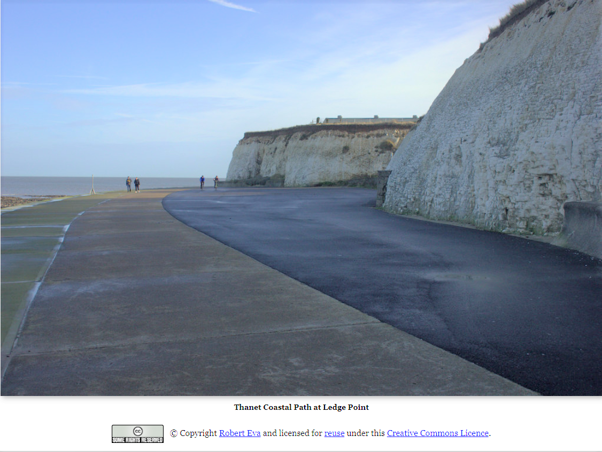
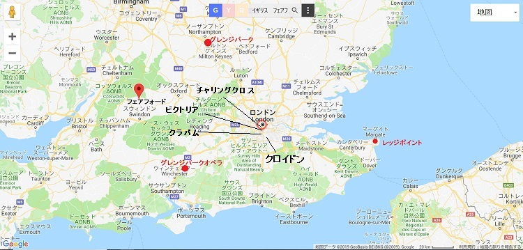
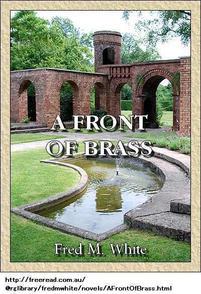

主な登場人物 備考
グラント 主人公
メイ 婚約者
スペンサ 初老の共同経営者
ブルース卿 メイの父
令夫人 ブルース卿の妻
ジェナ スペンサの召使い
マッシングフォード夫人 宝石持ち
スミス 謎の人物
スカースデール 共同名義経営者
エレン スカースデールの妻
マンリ 警部
レイボールド スペンサの秘書
モートン 悪党
カルデラ 下院議員
カルメン カルデラの妻
ジェンキンズ スペンサの顧客
ウェンライト 友人
ベリントン夫人 破産の巻き添え
叔母 メイの叔母
カール カルメンの恋人
ワトキンズ お抱え運転手
クラークスン スペンサの元秘書
アーサ 浮浪者
チャーリ 窃盗犯
ラット・ケリ 窃盗犯
レッド・ローガン 窃盗犯
タウンリ 警視庁の警部
レノン 警視庁の警部
カー夫人 文房具店主
デント クラークスンの偽名
第一章 かげ
グラントがベランダに立って庭を
レッジポイントは田舎の理想の隠れ家だ。確かに邸宅は現代風だが数々の利点を持ち、白亜の張り出し玄関は緑のツタに
グラントがこの土地を購入したのは自分とメイのためだ。ほんの数日前、初老の共同経営者スペンサから買い、小切手で自分の口座から支払った。
スペンサが言った。
「安く売ったな。四千ポンドじゃ安すぎた。邸宅はそれ以上の価値だし、家具も言うまでもない。知っての通り、レッジポイントはわしの道楽だったが、もう必要なくなった。医者が言うに、これからは南フランスで暮らせだと。だからグラント、会社は全てきみに
グラントが
「急ぐことはないですよ」
「たぶんな。でもやらねばならん。あとで財務状況をじっくり話し合おう。ずっと金融部門はわしが見てきた。契約だからな。もう知っているかもしれんが、スペンサ・グラント商会は倒産寸前かもしれん」
グラントが笑い飛ばした。
「全然心配していません。あなた以上の高名な財務家はいませんから」
「でもな、グラント、すぐ分かることだ。君は人を信用しすぎる。たとえばもっと賢明なのは、金を払う直前に、不動産移転書に署名することだな。もしわしに何かあったら、捨て金になるぞ」
グラントがまた笑った。こんなとき商売気分じゃない。
「やはり情緒が無いといけません。自分のものという気になりました。あなたを信頼できないなら誰を信用しますか」
「結婚するつもりのようだな」
グラントの顔が少し赤くなった。四角いあごがこわばった。美男じゃないが、整った目鼻立ちは魅力的だ。さらに肉体的にも精神的にも強そうで、女性にも受けが良い。
女性は本能で
「結婚するつもりですが、当分秘密にするわけがありますので、内密にお願いします。時機が来たら、ブルース卿の娘と結婚します」
スペンサの顔に、とらえどころのない不気味な笑みがさっと現れた。バルコニーの大椅子にうずくまり、ひなたぼっこをしているこの男は、小柄でしなびて、皮膚はなめし革のように黒ずみ、黄色い額ははげ上がり、長いロープのような腕で、震えながら葉巻を口に運んでいた。でも年のわりに歯は丈夫で虫歯もなく、視力もいい。いつも冷ややかに笑うたちだった。会社一筋で、私生活は口が堅かった。
やや病弱だと言われたが、時々昼までゲーム台に座っていることもあった。一キロ歩くにも危険だと言って銃を持ち、猟場で一日過ごしたあとの元気さは皆と同じだった。噂では財産が百万ポンドもあるとか。
素性や出身地は誰も知らず、親戚もない。経理を担当し、それ以上のことは小間使いより知らない。時たまグランドに反対することがあり、今が
「楽しみを見つけたようだな」
こう冷たく言ったスペンサは笑っていなかった。なめし革のような顔が深刻だ。
「若い者が結婚すると聞けばうれしいね。賢人が結婚をこう定義しなかったか、結婚とは他人の娘を自分のものにする狂気の沙汰だと。もちろん人類の繁殖には必要だ。だが、よりによってブルース卿の娘とは。グラント、ブルース卿は絶対に認めないぞ」
「知っています。父がブルース卿に悪さをしましたから。父は最良の友を裏切り、破産させました。でも僕がやったんじゃありません。僕はブルース卿と親交はないし、僕の知る限り、出会っていませんし、強く言いたいのは、僕を判断するのに父を持ち出すべきじゃありません」
「そうか、ブルース卿の娘に惚れたのか。君らしいな、実に君らしい。それで娘さんは知っているのか、つまり親子だと」
「ええ。まったく、こんな話をする羽目になるとは思いませんでした。あなたのような独身主義者には興味ないでしょう」
皮肉な笑みを再びスペンサが浮かべた。くぼんだ目がギラリ。
「それどころか、大いに興味があるな。近いうちに理由も分かろう。いいか、今以上の話を聞かせてやろう。ブルース卿はそれなりに大物だ。田舎が好きで、ここからそう遠くないグラントリーに由緒ある邸宅がある。だが現実は資金が底をつき、住めなくなっている。この情報は重要だぞ、取引に使えるからだ。これを教えたのは、君が優位に立てるからだよ」
グラントが首を左右に振った。スペンサのやり方には賛成できない。
「その必要はありません。ブルース卿の不興を買いたくないし、そんな方法で圧力はかけません。もし結婚に同意してくれなくても、結局妻にしますから。ここで所帯を持ち、慣れ親しんだ家財を全部メイに与えます。でも婚約は当分内緒ですし、お願いするまでもありませんが、内密にしてください」
グラントはこれで終わりという風にバルコニーの端へ歩いた。自分としてはこの話は終わりだ。スペンサが変な目でじっと見ていた。
なめし革のような硬い顔に意地悪いしわが寄った。口元は冷酷で残忍だ。これらが相まってぞっとするほど薄気味悪い顔になり、うさんくさい陽気な声でこう言った。
「わかった、わかった。これ以上言わない。一緒に邸宅を回って、
魅力的な場所を周りながら、所有者
左側には
スペンサが自慢げに言った。
「どうだ。これがレッジポイントの極みだ。少し危ないから、柵を作った方が良いだろう。落差を見るといい。静寂と景観はともかく、どこにも負けん」
グラントが一瞬黙った。うっとり、安らぎと美観に酔いしれた。何て理想的な家だろう。メイをここに連れてきたら、とても驚くだろう。
見透かしたようにスペンサが言った。
「君は幸せな男だ。まあ、こう言うべき……。おい、どうした」
召使いが電報を盆にのせて突っ立っている。
「郵便受けにございました。配達小僧に誰も応対しなかったのでございましょう。全員庭園におりましたので」
スペンサが橙色の封筒をわしづかみした。妙に戸惑っている。電報ごときには慣れっこのはずだが、動揺するとは驚きだ。封筒を破る指が震えている。なめし革のような顔が青い。
「返信は不要だ、ジェナ」
スペンサがきつく、事務的に言った。
「グラント、緊急用件でフェアフォードへ行くことになった。男に合わなきゃならん。何年も忘れとった不愉快な案件だ。些細な過ちだよ。君も年取ったら、
「ど、どういうことでしょうか。よ、よく分かりませんが……」
「当然だ。分かるはずがない。君、これはな、生きるか死ぬかの問題だ。みんなもめ事や不安を抱えているものだが、やはり深刻な訳は身から出たさびだからだ。秘密を話したいところだが、それはできん。さあ、やってくれるか。もしわしが十時半までに戻らなかったら、東屋まで来て、わしを探してくれ」
グラントが上の空で約束した。全く、不意打ち、劇的、不可解だ。どす黒い
直後、スペンサ愛用の大型車がフェアフォードへ走り去った。運命の電報は新芽のハリエニシダに落ちて、風にひらひら揺れている。グラントが無意識に拾った。電文は決して長くなく、簡潔で要点のみだった。
『フェアフォードノナジミヘスグコイ。ヒッス』
それだけだ。横柄な文末には名前がない。明らかに発信者は脅し慣れている。
電報を開いたまま、考え込んでゆっくり家に戻った。忍び寄る危機に不安になった。
正面玄関に訪問者が突っ立ち、ジェナに尋ねている。女の声は妙に聞き覚えがある。半ば立ち止まり、耳を傾けた。
第二章 なぜ
訪問者が言っている。
「でも確実に間違いです。スペンサ氏は待っています。絶対に失望させません。はるばる来まし……」
召使いのジェナが
「申し訳ございません、お嬢様。主人は緊急用件でフェアフォードへ呼ばれました。今晩は帰らないかも知れません。お仕事関係でございましたら共同経営者の……」
「いいえ、全くの
細身で優雅なかわいい女が失望して反転した。車寄せを曲がって消えたとき、グラントが後を追った。もう疑いなく確信した。腕を伸ばして女の肩に触り、
「メイ、メイ、ここで何をしているの」
女が振り向いて、恐怖に近い叫び声を上げた。かわいい顔が真っ青だ。濃灰色の瞳に涙が一杯。見たところ失望の涙だ。でも今、恐怖も怒りも去り、頬に朱が差してきた。あごから眉にかけて赤い。
「そ、それはこっちのせりふですよ。あなたこそ、ここで何をしているの」
「スペンサ氏は共同経営者だよ。今週末にここへ来たわけは、きみと僕に関係する事案だ。すっかり忘れていたけど、きみの父上の住所は鼻先なんだね。スペンサ氏は言わないけど、よく……」
「いいえ違います。ここへは一回も来たことはありません。これからフェアフォードでお買い物をする予定です。自分の車で来ました。グラント、これは誰にも言わないでね」
「スペンサ氏ときみの父上が親友だったとは……」
「違います。父はスペンサ氏が大嫌いです。信用していません。スペンサ氏は私たちのグラントリーへ一回も来ていません。ともかく、失礼します」
「なぜだ。僕には秘密を話せるだろう」
メイが悲しげに首を振った。訴えるような表情があった。
「できません。あなたがここへいると知っていたら、来ませんでした。隠し事をするのは嫌なのですが、どうしようもありません。今言ったことは裏切れません。緊急用件でスペンサ氏に会わねばなりません、もしできないなら……」
メイの言葉がささやくように弱くなり、目もうつろ。小さな
グラントが言った。
「なんだか向こう見ずみたいだね」
女がうろたえた。その時、また涙した。
「あ、何の話でしたか。ああ、今は辛抱しなければなりません。悪く思わないでね。とにかく恥じる行為は何もしていません。でもあなたにまた会えてとても嬉しいわ」
メイが涙をこらえた。魅惑の笑顔が戻った。静かで奥まった場所だったのでグラントはメイを抱いて熱くキスした。もどかしい不安な疑念が消えた。見落とさなかったのは、濃灰色の澄んだ瞳が愛情を帯び、もはや疑いが晴れたこと。
「とにかくびっくりしたよ。良い不動産を見つけたけど、メイ、ちょっと聞いていいかい。時間ある？」
メイが
「すぐに帰らねばなりませんが、天気も良いし久しぶりの再会ですから半時間なら」
「半時間で景観を紹介するよ。想像もつかないとても素晴らしい家だよ、メイ。一目で気に入って、ずっと欲しかった。一緒に住まないか」
メイが軽く微笑み、グラントの腕をつかんだ。何一つ欠点のない完璧な場所だ。やがて東屋の所へ行き、霞む青い海を見下ろし、嬉しさと不安の入り交じった吐息を漏らした。
「ちょっとした桃源郷ですね。スペンサ氏の道楽でしょう」
「そう思うかい。スペンサは芸術肌だよ。風流心や感性がなければこんな完璧なものは作れないよ」
メイが身震いし、極寒になったかのよう。
「ボルジア家も風流でした。でも、とても冷血な卑劣漢ぞろいでした。あなたは知らないかも知れませんが、スペンサ氏は悪人です。共同経営者だし、やり手かも知れませんが、悪人です。いつか分かります。理由は言えませんが、本当です。いま言えないのは私だけの秘密じゃないからです。どうか責めないで」
グラントがキスして不安を取り払った。
「責めないよ。貴重な時間をスペンサのことで使わない。もし僕がこの土地を買ったら、住みたいかい」
「あなたとなら、どこでも幸せよ。素敵でしょうけど、余りに良すぎて本当と思えません。それに、真っ先に父が反対します」
グラントがあごをぐっと引いて言った。
「時機が来たら、父上に知らせるつもりだ。でも親のせいで僕を罰するのは公正じゃない。もしスペンサがこの貴重な不動産を僕に売ったら、父上はどう……」
メイは聞いていなかった。深刻な不安が目に現れて、すぐ自宅のあるグラントリーに顔を向けた。これじゃ、メイがグラント夫人と呼ばれるまでには、どす黒い
グラントはメイと別れて一人になり、いろいろ考えた。にわかにスペンサが嫌いになった。今まで信頼できる公正な男だと思っていた。いま疑い始めた。メイはスペンサが悪人だと公言してはばからなかったし、どうやら証拠を握っている。
グラントがこんなことを庭に座ってあれこれ考えていると、日が落ちて、夕食の時間になった。スペンサの帰る気配はなく、スペンサ無しで進めることにした。
広い居間は傘付き電灯に照らされ、食卓には黄色い春の花々が古い
やがてコーヒーと煙草を持って、バルコニーに出ると、傘付きランプがあった。テーブルに放り投げた電報こそ、スペンサを悩ませた代物だ。再び無造作に拾い上げて、指先でいじり始めた。こんな電報を打つ奴はどんな男だろうといぶかった。
御用聞きに来た執事に言った。
「もう待機している必要はないぞ、ジェナ。充分だ、ありがとう。ご主人が十時半までに帰らなかったら、僕が鍵をかけるから」
ジェナが
「変だな。今日は五月六日だと思うけど。絶対にそうだ。しかしこの電報の消印は五日だ。僕の間違いかなあ。でも……」
一瞬グラントが見逃すところだった。やおら椅子から立ち上がり、食堂へ行った。旧式暖炉の横に暦が掛けてある。かがんで注意深く、じっくり見た。
「やはり僕が正しい。今日は五月六日土曜日だ。今朝ロンドンから送られてきた電報の消印が間違っている。はて、電報局がこんな間違いをするとはおかしい。今まで聞いたことがない。ポケットに保管して……。おや、ジェナか」
ジェナがいつものように恭しく立っていた。いまは制服を脱いで、パジャマ姿だ。
「お騒がせして申し訳ございません。書斎に泥棒がおります。警察に連絡しますか、それとも二人で取り押さえますか。手前の仕事じゃございませんし、生来臆病ですが……、よろしければ……」
グラントが椅子から飛び上がり、顔をこわばらせて、ささやいた。
「ついて来い、二人なら男を取り押さえられる」
「失礼ながら、男ではございません。女でございます」
第三章 スミス氏登場
からかいたくなった。ジェナがまじめに正確に報告する様子は、不安丸出しだ。真っ青になって怖がっている。一方のグラントは面白がっていた。女盗賊とは初耳だ。たぶん女給が暗闇をうろついていたので、それをジェナが本職の泥棒だと大げさに言ったのだろう。
「まず確かめろ。明かりが
「そうではございません。手前の勘に狂いはございません。手前は上流階級に長年お仕えしております。貴婦人でございます」
「その貴婦人の顔を見たのか」
「いいえ、そこまで近づいておりません。しかし手前の経験から間違いございません。下層階級が使わない香水の匂いがしました。レディの侍女もあんな香水は使いません。それにお服の召し方もそうです。お手数ですが、こちらへおこし願えませんか」
グラントが椅子から立ち上がった。ジェナは冷静さを十分取り戻したようだ。グラントはもう面白がっていなかった。逆に貴重な時間を費やしていらついた。
この間に、
思うだけで、グラントの頭を血が駆け巡った。こんな考えは非常識でばかげているが、おかしな事が起こっているし……。この件はジェナの手からすっかり取り上げた方が良いだろう。
ジェナにあらぬ疑いをもたれ、内情を知られる筋合いはない。侵入者が貴婦人だとしよう。そうだとすれば、ここへ来て何らか捨て鉢な事をやろうとすること自体、普通の泥棒じゃないことを物語っている。
「一緒に行って調べよう。武装する必要はないだろう。僕が先に行く」
こう陽気に言ったグラントは全くそうじゃない。ジェナは反対しなかった。謙虚に引っ込んで、全部グラントに任せようとしている。
書斎の扉は開いており、暗闇で誰か動いている。窓際の隅に大金庫がある。直後マッチの炎が上がった。不意に鍵のジャリ音と、かちっという音がした。一瞬の明かりで、
ほんの一瞬だったが、グラントには充分だった。全神経が警戒、ぴりぴり。マッチの薄明かりで分かったのは、ジェナがスイッチに手を伸ばして部屋をぱっと照らす寸前だ。
間髪を入れず、グラントが右手を突き出し、ジェナのこめかみを強力に殴った。ジェナはうめきもせず、丸太のように倒れた。余りにも素早くて巧妙だったので、どこから攻撃されたか分からなかった。
絨毯にドタンと倒れた。金庫そばから女の押し殺した悲鳴が上がった。女が扉へ突進したが、グラントのそばを通ったとき、腕をつかまれた。グラントが締め上げると悲しげにうめいた。
「しっ、大丈夫だ。危険はない。何のためだ？ とんだ狂気の沙汰だな、メイ」
女はすすり泣くように、激しく全身を震わせ、激情をぐっとこらえた。グラントが説き伏せて、ようやくなだめた。
「やむを得なかったのよ。夕方あなたの元を去ってから戻って来ました。ここで会うとは大ショックです。思ってもいませんでした。だます必要があったのよ。私だけの秘密じゃないもの」
グラントが部屋を横切って、明かりをつけた。メイが怖がって後ずさりしたのは、床に意識不明で横たわっているジェナを見たからだ。
「殺されています、死んでいます」
「しっ、大声を出さないで。召使いは全員寝ているから心配いらないし、起こしたら気の毒だ。この男も大丈夫だ。きみを見つけたのがこの男だ。マッチをつけた時、きみだと気づかなかったが、もし腕力で気絶させなければ、分かっただろう。もう動き出している」
グラントの指示でメイがカーテンの後ろにさっと隠れた。ジェナがよろよろ立ち上がって尋ねた。
「何が起こりましたか。ここはどこでしょうか」
「誰かが殴り倒した。突然だった。一瞬のことで分からなかった。今誰もいないし、泥棒を捕まえるのは時間の無駄だ。僕があした警察に電話する。その間、お前は寝た方がいい」
これ以上ジェナに説明する必要はない。とても怖がっている。もめ事や危険を手放したがっている。ご主人が帰るまでグラントが起きていれば、引っ込みたい。頭もひどく痛むし、今の状態は全く役に立たない。
グラントは、ジェナが階段を上がり見えなくなり執事部屋の扉が閉まる音が聞こえてから、書斎へ戻った。微風でカーテンが前後に揺れており、窓が開いている。明らかにメイはここから侵入した。メイの名前をささやくと、びくついて出てきて、泣きつくように尋ねた。
「おこっていますか」
「怒っちゃいないよ。とても奇妙で意外だったから、どう考えたら良いのか。なにかひどい事があったので、こんな無茶をしたのか。打ち明けてくれないメイ？ 全部話してくれない？」
「会わせる顔がありません。絶対というわけではありませんが、そういうことなら、内密に話しましょう。どのみちそうした方が良いでしょう。すぐスペンサ氏が帰ってくると思いましたし、きっとこの時間にあなたはいないと思いました」
メイが感に堪えて、身震いした。
「ああ、失敗でした。今晩ここへ来て、スペンサ氏から色よい返事をもらうつもりでした。外出したと聞いて、絶望しました。もちろん言い分をすべて聞いてくれるとは思っていません。あなたと会話中に決心しました。去り際に窓からこの部屋を覗くと、スペンサ氏が鍵を机に置き忘れているのが見えました」
グラントが驚いた。ちょんぼに気づかなかった。そんなことをするとはスペンサらしくない。でもあのとき、不思議な電報でとても動揺して、慌てて出て行った。
「スペンサの金庫を盗もうとした？ なぜ」
メイは答えず、長い沈黙があった。全身が震えているようだ。グラントは辛抱強く待ち、優しい言葉をかけ、誠心誠意、なだめた。
「きみには友人が必要だよ。ひどいもめ事に巻き込まれているけどきみのせいじゃない。僕以上に話せる相手はいないよ。まだ夫じゃないけどいずれそうなる。話して」
メイが長いため息をついて、つぶやいた。
「なんていい人でしょう。なんて優しいのでしょう。わたくしを悪く思ってくださらない。泥棒同然だから二度と口を利かなくて当然なのに」
「絶対きみを責めないよ、メイ。きっと誰かをかばっているね。だれ？」
「母、実母です。言わないつもりでしたが、これ以上隠し通せません。あなたなら話してもいいでしょう。あの金庫に母の宝石、少なくとも母が気にしている宝石があります」
「気にしているだって。宝石なんてここにはないよ。さあ、続けて」
「はっきり言いましょう。スペンサ氏は悪党です。あれ以上、下卑て嫌な人はいません。私と結婚したがっています」
「結婚だって。どこで？ どうやって？ いつ？ びっくりだなあ」
「去年の冬、ロンドンでよく会いました。スペンサ氏は金持ちで、母と親しくなりました。父は嫌っていましたから、まずいのです。私が母のことをよく話していたでしょう。母は悪い人ではないのですが、愚かで軽率で、上流社会が大好きです。そのため当節、無鉄砲に賭け事をします。母は勝負に弱いのです。大金を失って、スペンサ氏が立て替えました。でも常に担保を要求され、一個ずつ宝石を渡しました。これは最悪じゃありません。マッシングフォード夫人が私どもの邸宅に滞在中、パリにいる息子が重病になったので、
これ以上言えないかのように止まった。グラントが優しくキスして言った。
「後は僕が。お母さんは魔が差して宝石を担保に出し、賭け借金を払い、スペンサが出所を知った。この情報を利用して母上にきみの結婚を迫った。今晩ここへ来てスペンサ氏に真相を言おうとしたが、代わりに僕がいた。そして偶然鍵を見つけたとき無茶な決心をして、宝石を取り返しに戻った。その間、僕は何が起こっているのか知らなかった。今日の午後、スペンサにきみと結婚する予定だと言ったら、あたかも普通の出来事のように受け取った。そんなこととはつゆ知らず、ずっと極悪非道の悪党と組んでいた。なぜ教えなかったの」
メイはグラントの肩に頭を寄せて、しくしく泣いた。
「できなかったのよ。仲たがいが怖かった。なんて弱くて馬鹿だったんでしょう。それに母のことも考えねばなりません。ほんの偶然悪事が分かったのです。いま私はベッドで寝ていることになっています。月明かりに崖沿いの道路を来ましたが、同じ道をすぐ帰ります。でも宝石が絶対に必要です。卑劣で恥ずべき行為ですが、母が第一です。助けてくれますか」
グラントがたじろいだ。難しい立場だ。
「時間が必要だね。もし……。いや外へ出よう。崖方向の芝生へ行こう。間違いなければ、スペンサは帰ってくる。はっきり食堂で足音を聞いた」
確かに食堂で誰かが動いている。メイとグラントは庭にそっと出て、崖の方へ向かった。
「ここで待ってて。ここでじっとしていて。すぐ戻ってくるから」
グラントが邸宅へ戻り、食堂へ行った。明かりがつき、雨戸が降りて、食台のそばに夜会服の男が一人立っている。驚いたことに、スペンサじゃなく、見知らぬ男だった。
「お間違いでは？ どなたですか」
「君のために参上つかまつった。どうぞ座りたまえ。当然私の名前を知りたいだろう。ロンドンのスミスだ」
第四章 下手人は
見知らぬ男は完全にその場の支配者も同然だった。更に強調するために象牙柄の小型拳銃を食台に置いた。こんなことをされては一瞬言葉も出ない。
見れば小太り、小さな口ひげをワックスで固め、右目に片眼鏡をはめた中年の伊達男だ。こんな男はセントジェームズ通り酒場で毎日大勢見られるが、この場合恐怖のこわもて男だ。もったいぶってわざとらしい作り声は不快で、ほとんど脅迫だ。
「僕は囚人ということですか」
小男が片眼鏡を右目にしっかと押し込んだ。右手で拳銃を握り、使い慣れている風だ。
「とても利口なお方だ。さしあたりそういうことだ。しかも自宅でな。でも安心なされ、暴力は振るわぬ。物わかりが良ければだが。反抗しないほど早く終わる。とても重要な情報を持ってきた」
「もっと普通の方法で来られたでしょうに」
「かもな。でもこれには深い訳がある。スペンサ氏は君の共同経営者だと思うが」
「おおやけの事実です。どうぞ先を」
「そんなに
「スペンサ氏が財務担当でしたから」
「ああ、知っておる。偽の
グラントは突っ立って、ぼおっと聞いていた。誰だこの男は、個人情報の秘密を喋りおって。
「これを君に言いに来ただけだ。正確に言えば、言いたかった。当然、根拠を示すべきだろう。多少のあやふやは許したまえ。これから取引を二、三言うからびっくりするぞ」
スミスが指を折って、取引を喋り始めた。顧客の名前を言い、あけすけに内情を話し、金額も全部暗記しているようだ。この事実に照らし、漠然としていた疑惑が決定的になった。すぐに、立場が危ないことに気づき始めた。
「これで十分かな。不満だったら続けるぞ。君の商社の取引で、私の知らないものはない」
「驚きました。僕の共同経営者は……」
「悪党だぞ。二、三日で皆が奴を最悪だと知るようになる。残念だな、君もスカースデールも。君も決して非難は免れないぞ。何年もほっといて検査しなかったからだ。財務調査された後、三人とも被告人席に立たされる。みんな
「そうでしょうね。スペンサに会えたら……」
「それはない。奴は二度とこの家に来ない。たちどころに外国へ逃亡するだろう。被告人だから今頃警察が追っている。モートンの名前は知っておるか」
「顔見知りです。商売では多少失敗しましたが、最近政治をやり始めました。下劣なうぬぼれ野郎です」
「間違っておる、グラント君。モートンの悪行は、ずるがしこいことだよ。私が出会った中で一番危険で破廉恥な男だ。奴がスペンサの破滅の仕掛け人だ。むかし奴は失敗したが、スペンサが助けたのに。スペンサの天敵だって事は君の敵でもある。だが私が助けてやろう。あとで郵便局から手紙や書類が届くから、よく読んでおくことだな」
「お礼を言っていいものやら」
「グラント君、全てが分かったらひざまずいて感謝するよ。スペンサにまた会いたかったら、崖上の東屋まで行くことだ。戻らなかったら今晩十時半過ぎに東屋へ行けと言われているだろ。約束する、奴は戻ってこない」
グラントが無意識に時計を見た。十時を数分過ぎていた。まだ奇談を聞く時間はある。
「助言に大変感謝します。ほかに言うことがなければ、すぐ行きます。スペンサ氏に聞きたいことが一杯ありますので」
スミスが意味深に拳銃のロックをかちっと鳴らした。
「君をからかいに来たんじゃない。理屈で分かるだろうが、私も危険を冒して来た。きっちり十時半に、喜んで君の足止めを外そう。今から十分後に解放する。たぶん二度と会うことないだろう。今は不安で怒っているだろうが、自称ロンドンのスミス氏に会ったこの日に、感謝する時が来る。スミスと言ったろ」
グラントが無言でうなずいた。感謝する気分じゃない。男の態度には腹立たしいものがある。その間、メイは庭で待っている。こんな宙ぶらりんの状態では自宅のあるグラントリーへ帰らないだろう。それに、家出が発覚する恐れもある。ほんの些細な事でばれるかも知れない。
「僕は大迷惑ですよ、今すぐ行けたら……」
「今は行くな。時計が十時半を打つまでここにいると約束したまえ。もし破ったら、君の責任だぞ。家から一メートルでも出たら、裏切りの代償は命で支払うことになる」
捨て
目が見えなくなったが、月光のおかげで勝手知ったる周りが見え始め、一人になったことが分かった。
謎のスミス氏は来たときと同じように奇妙に消えた。にわかに重苦しい時計の音が騒音を立てて十時半を打ち、神経がびりびり。庭の扉へ突進した。
月光下、辺りは静かで、メイの気配がない。別れた場所にいない。たぶん待ち疲れて家に帰ったか、近くのどこかに隠れている。名前をそっと呼んだが返事がない。それに、おちおちしちゃおれない。
庭を通り、坂を登って東屋へ行った。雲一つなく、月光が広大な海を照らし、崖の上に一人の男がぬっと現れ、さながら名優の登場だ。二度見の必要もなく、人物の名はスペンサ。とても奇妙、逃亡容疑者がこんなに大胆、軽率に姿を現わすものか。
「
「待ってるぞ。言っておくが……」
後は言えなかった。言いかけたままスペンサが後ろによろめき、脇腹に手を当てたのは、拳銃がパンと発射された時だった。うめき声を上げ、前によろめいた後、後ろへ倒れ、頭から断崖に消え、六十メートル下の海に落ちた。
恐くて身がすくんだが、頑丈な岩にへばりついて、
第五章 倒産
グラントは突っ立って長いこと不安げに眺めていた。全てが劇的で突然だったので自分の五感を疑った。でもはっきりスペンサのうめき声が聞こえ、馴染みの姿が月光にくっきり見えた。パンという銃声も聞いたし、崖から転げ落ちるのも見た。
スペンサが死んだのは疑いようがない。おそらく銃弾にやられ、崖から落ちたのは確実だ。崖には出っ張りや段差もなく、落下をくい止めることは出来ない。百メートルほど先の右手に、曲がりくねった道が浜辺に通じていたので、そこへ行った。だが無駄だった。満潮のため、崖下まで波に洗われている。手の打ちようがなく、家に戻り、助けも求めるのみだ。

庭に来たとき、メイのことを思い出した。気がかりで心配だ。帰宅したのか。待ちくたびれたか。それとも隠れているのか。答えるすべはない。待たざるを得ないか。奇妙で複雑な出来事にうろたえた。
数時間前は全くもめ事の片鱗もなかった。数時間前、レッジポイントの所有者として誇らしく幸せで、前途洋々だった。ところが今は自分の家かどうかも疑わしい。もしスミス氏の話半分でも正解ならば、権利はない。
どうやらメイは帰った。探しても時間の無駄だ。今やるべき事は冷血な殺人犯を見つけることだ。スミスが犯人という考えは捨てた。あんな特異な人物がこのような事をやる場合、現場のレッジポイントに姿を軽率に見せない。あきらかにスペンサには複数の敵がいる。
何かしなければならない。静まりかえった邸宅へ戻ると、明かりがまだついていた。フェアフォード警察に電話した。家政婦を煩わせるよりその方が賢明に思われた。退屈な長い時間の後、マンリ警部が現れた。
「異常な事件のようですな。詳しく話してもらえませんか」
くわしく説明した。スミス氏のことはおくびにも出さなかった。明らかに無関係だし、名前を出せば経営醜聞が早まるだけだし、一番避けたかったからだ。利口な判断じゃないけど、考える余裕がない。
「スペンサ氏には敵が複数いましたか」
「そのように見えました。夕方までは疑ってもいませんでした。とても立派な人物と思っていました。悪徳とか、浪費癖はなく、商社経営に熱心でしたから」
「電報の後、何か言いませんでしたか」
「言いません、いや、言いました。若気の至りとか、後で跳ね返るとか。若い頃の出来事をほのめかしていましたね。電報でひどくうろたえていました」
「もしや電報を見たのではありませんか」
「ええ見ました。実はいまポケットに持っています。スペンサ氏が落としたので拾って、戻ってきたとき渡そうと持っています。見たいですか」
マンリ警部が是非と希望した。桃色の薄い紙をしばらく見て不思議がっていた。どうやら何も分からない。
「差し支えなければこちらで保管させてください。ロンドンから打たれています。発信人を特定するのは難しいでしょう。電文は明らかに脅しですな。おっしゃるように、スペンサ氏は発信人を恐れていますね。神経質なたちですか」
「真逆です。精神的にも肉体的にもあんな丈夫な人は見たことがありません。警部さん、是非電報を保管してください。よく調べて、何かおかしな点が分かりましたら教えてください」
警部が立ち上がり、扉へ行きざま言った。
「大船に乗った気持ちでいてください、真相を突き止めますから。巡回して、朝来ます」
「いや、夜まで待ってください。あしたは一日中会社に用事があります。スペンサ氏の仕事を引き継がなければなりませんので」
警部は反対しなかった。
朝食時間頃には田舎中に悲劇が知れ渡ったようだ。暇な連中が路上に集まり始めた。ブン屋が情報を求めて、もうやって来た。グラントは居間に鍵をかけて、ジェナに渡してこう告げた。
「主人には二度と会えないだろう。この崖から落ちて遺体が見つかった例はないそうだ。でも不作法な野次馬が質問攻めに押し寄せて、家の内外の写真を撮りたがる。ジェナ、家に入れるんじゃないぞ。そして鍵は肌身離すな、警察は別だが」
グラントは一番列車に乗って、午前十一時には町にいた。歩いていると、知り合いが妙な目で見ている気がする。ひそひそささやいて、眉をつり上げている。もう知れ渡ったのか。過去に自社の経営状態が噂になったことも知らなかった。よくあることだが、灯台もと暗しだ。だが間違いなく、今のチラ見は意味深だ。このとき、スミス氏の妙な警告がぐさりときた。
会社の個室へ入り、ベルを鳴らした。狼狽した事務員が応じた。
「レイボールド氏を呼んでくれ」
グラントがぶっきらぼうに言うと、やがてスペンサの腹心の秘書が現れた。会社のことでこの男が知らないものはない。上背のある太ったはげ頭、尊大にゆっくり喋る典型的な部下だ。
「ニュースを聞いたか、レイボールド」
レイボールドがお辞儀した。血色のいい顔が青ざめ、額に汗が浮いている。哀願するように手をぶるぶる差し出して、泣きついた。
「どうか私を責めないでください。私のせいではありません。スペンサ氏に何度も秘密を打ち明けるようにお願いしたのですが、聞いてもらえませんでした。この二年間、凶から大凶になりました。もちろんスペンサ氏の無謀な投機は知っていました。でも好転するといつもおっしゃっていました。一発に賭けて、大もうけするつもりでした。ああ、何ということでしょう」
レイボールドがほてった顔を震える手で拭いた。
「じゃあ、全部なくなったのか」
「それより悪うございます。もう我々のお金ではございません。五万ポンドが顧客側に渡りました。自分の金だと顧客の数人が最近大騒ぎしました。それに弁護士から厄介な手紙が来て、訴えると脅しております」
「僕には一言も言ってないぞ」
「スペンサ氏の命令でございます。何も言うなといわれまして。東・クアガ鉱山の採掘権でお金を取り戻されるとか」
「カルデラ氏が欲しがっている物件か」
「そうでございます。我々にお金がなければ、すぐに取られます。来週にもです。カルデラ氏の配下のモートンが画策しています。皆は愚か者だと言っていますが違います」
グラントが考え込んで顔をしかめた。レイボールドの見解と同じだ。モートンは愚かなことをするけど馬鹿じゃない。謎のスミス氏の言葉によれば、仕掛けの張本人だという。
カルデラ氏は政府役人でもあり、著名な下院議員だが、評判は
「起訴されると思うか」
「そ、そうだと存じます。スペンサ氏が狂ったと証言できるかも知れませんが、それなら経営をもっと精査すべきだったと言われるのが落ちでございます。カルデラとモートンは事情を十分承知の上で、今週にでもあなたを倒しにかかるでしょう。そうなれば、必然的にクアガ採掘権はあちらに渡ります。顧客の一人にあなたの逮捕状を請求させるのは難しくありません。おそらく一日か二日で釈放されるでしょうが、それでは手遅れでございます。その間に、全員破産します」
持って回ったレイボールドの言い方にグラントがかっとなった。
「吐け、ほんとのことを言え。何か隠しているな。刑事訴訟手続きをすると脅されているな」
「は、はい、その通りでございます。ジェンキンズという顧客でございます。七千ポンド出資しています。私の考えではカルデラとモートンが送り込んで金を渡したと思います。スペンサ氏が盗用すると見込んだ上でございます。そこが罠でございました」
グラントは不機嫌に聞いていた。救いようのない絶望的な怒りが湧いた。まるで何も知らない子供だ。自分の周りで妙な陰謀が行われているのに、全く知らなかった。もちろん、クアガ採掘権については知っており、これで金儲けするはずだった。しかるに、カルデラとモートンに担がれ騙されてしまった。
「過去を悔やんでもしょうがない。お前がスペンサ同様、不正直だと言ったって何にもならない。もしお前が正直者だったら、僕の所へ来て言うべきだ。さあ、行け。その前にスカースデール氏に電報を送って、すぐ来いと伝えろ。この不名誉は僕にも辛いが、スカースデール氏には一層きつい」
レイボールドがそそくさと退出した。まあ、思ったほど恐ろしい話じゃなかった。座ったまま不機嫌に下敷きにペンを突き立てた。スカースデール氏は単なる共同出資者だからとてもきつい話だ。何が起こっているか全く知らないのだから。
そんなことを考えていたら、マンリ警部の来訪があった。警部は運命の電報を手に持って、こう言った。
「ロンドンまで来ました。電報に不審はないかというお尋ねしたが、見つけました。日付の間違いです。調査のために上京しました。妙なことを発見しました」
「どういうことですか」
「ええ、本物の電報じゃありませんでしたな。用紙や封筒や消印は本物でしたが、電文は電報局を通っていませんでした」
第六章 逃亡
グラントはこの情報で我が身の危機を忘れた。
「ちょっと待ってください。もっとわかりやすく言ってください。電報は偽物ですか」
「ある意味そうですな。誰かが正式な用紙と封筒をうまく手に入れたのです。これさえあれば、消印を偽造するのは難しくありません。危うく見過ごすところでしたが、電報の日付が間違っていました」
「どうしてそうなったとお思いですか」
「ま、単なる推測ですが、容易に説明がつきますな。消印は一体型の偽造品です。つまり可変型じゃありません。事情があって電報発送が一日遅れ、別型を作れなかった。そこで犯人は賭けに出たのですな。誤りが見逃される方に賭け、十中八九そうなりかけました。本官が電報を持って上京し、何か不審な点があるから、電報局が全否定すると期待していたら、果たしてそうなりました。そんな電文は東・ストランドではきのう配達していないそうですな」
「警部が今解決したというわけですね」
「全くその通りですな。あなたにお知らせしようと思いまして。今晩レッジポイントに戻られたら、本官の見立てを説明しましょう」
グラントは確約できなかったが、警部は自説に酔って、帰って行った。
警部が去るが早いか、スカースデールがやって来た。心配で不安な様子で言った。
「電報を受け取って、大急ぎでやって来た。道中あらぬ噂を聞いた。スペンサが自殺したのは債権者に会わす顔がないからだとか。そうか」
「少なくともスペンサは自殺してないよ。殺された。僕がこの目で見たんだ。もちろん犯人は見ていない。見ていれば今頃警察が捕まえている」
スカースデールがもっと話せと言った。半身で冷ややかに聞いていた。その態度にグラントがいらついた。
「僕が真実を言っていないとでも？」
「俺がどう思うが関係ない。検視官と陪審員が死体を見て言うことだろ。人によっちゃ、君がスペンサを殺して、罪をなすりつけたと言うかもしれないぜ」
グラントの顔にかっと血が上った。
「君は人でなしか。数年前、君が一時不名誉な目に遭いそうになったとき、僕だけが信じた。君の側に立ち、君の妻が逃げた時もだ。君の容疑は真っ黒だったが、僕一人だけ動じなかった。そして卑劣な陰謀が露見したとき……」
「すまん、グラント。その話を思い出させるんじゃなかった。財産を全部失いかけたら、友人も忘れちまうぜ。破産かどうか教えてくれ」
「それ以上だ。はめられた。もしかしたら今、逮捕状が出ているかも知れない。でも犯罪については、君同様、僕も無実だ。レイボールドもそう言うだろう。スペンサが財政を全て担当していた。資本不足だとはどうしても思われない。言い訳じゃない。帳簿を見せろと言うべきだった。カルデラとモートンに見透かされていたとは夢にも思わなかった」
「下院議員のモートンのことかい？ モートンは今晩、ブルース卿と夕食することになっており、俺達夫婦が送っていく予定だぜ。モートンはブルース卿の邸宅に行ったことがなく、ブルース卿はある政治案件でモートンに会いたがっている。モートンはいつも俺をこけにして……」
「モートンは僕も知っている。だがそうはさせない。馬鹿な事をやるだろうから、今晩奴をよく見ていれば分かるよ」
「俺は行かない。絶対行かない。代わりに妻を行かせて、モートンをブルース卿に紹介させるぜ。お察し通り、俺は大打撃だ。破産を逃れる方法はないのか」
「逆に、だいぶ分かってきた。もし僕が東クアガ採掘権を使えたら、破産を免れるかも知れない。だがカルデラと腰巾着のモートンは遙かに巧妙だ。奴らの計画は我々をすぐ破産させ、由緒ある商社をバタンと倒すことだ。既に僕の逮捕状を取る準備をして、もう請求したかも知れない。事情を説明して保釈される頃にはやられているだろう。奴らにクアガ採掘権を奪われて、大金を盗られるかも知れない」
「二、三日泳がせてくれと言うことか」
「その通り。ここで助けてくれたら、対策を見つけるから」
「じゃやるぜ。帰る途中でウェンライトに会って、君が隠れ家を探していると話すぜ。当然、スペンサの財産は残っていないだろうなあ。奴の金庫は見たのか」
グラントがびくっとした。ピンときた。レッジポイントの金庫のことをすっかり忘れていた。書斎の鍵をジェナに渡し、肌身離すな、警察は別だと指示した。
おそらく警察は調べてない。金庫はもう開けられたかも知れないが、少なくとも手がかりは金庫扉の中にある。メイを助ける絶好の機会かも知れない。どんなことをしてもメイを自由にしてやらなくては。ひょっとしたら本当に価値のあるものがあるかもしれない。
「良い考えだ、君。僕が宿屋のおかみに電話して服を詰めさせて、チャリングクロス駅止めで
「夜八時半だ。ブルース卿の令夫人は派手好みだぞ」
スカースデールはやがて帰って行き、グラントは一人考えにふけった。一時間後に電話があった。スカースデールの声だ。
「ジュニア・ナショナルから電話している。ちょうどモートンがジェンキンズと出たところだ。奴らの話が聞こえた。ボウ通りへ行って、君の逮捕状を請求するそうだ。これからウェンライトに電話する」
電話が終わり、グラントは帽子と上着をひっつかんだ。すぐタクシーを呼んで、チャリングクロスまで行った。そこからバスでビクトリアまで行き、クラパム・ジャンクションまで乗った。そこで降りて、グレンジ・パークまで歩き、ここから六キロ歩けばレッジポイントに着く。

やっとの事でレッジポイントにたどり着いた。五月上旬の夜更け、まだ六時ちょっと過ぎ。うっとうしい夜で、冷たい風が東から吹いている。慎重に道を進み、ついにテラスに来た。嬉しいことに、書斎窓の掛け金が外れている。すぐにテラスを横切り、部屋に入った。
金庫の扉は鍵がかかっており、ジェナがきっちり指示を守っていた。順調だ。問題は金庫の中だ。金庫の扉を開けた。
見れば包みが一個、きれいな四角の小箱にレディ・リバトンと書いてある。
蓋を慎重にはがし、再封出来るようにした。電報はメイ発、金庫内の包みを大至急求めている。生き死にの問題、同夜ブルース卿宅で引き渡してやろう。
一時間後、グラントは友人ウェンライトの家に駆け込んだ。
「これでいい。とにかく、一時モートンを排除してやった。さて、僕の部屋に案内してくれ。そこで夜会服に着替えるから」
ウェンライトが文句を言った。
「今晩、夜会服は要らないよ」
「いや、要るんだ。今晩は外で夕食する。あとで誰かさんがびっくりするぞ。名誉と娯楽をひっさげて、今晩はブルース卿の夕食会に参加する」
「お前おかしいぞ」
第七章 とばっちり
スカースデールは男らしく災難を受け止めた。町で感じたのはスペンサ・グラント・スカースデール商会が瀕死状態、でも現実に破産が目前という実感はない。
全部失うということだ。結婚以来、年間数千ポンドの高収入が当該商社から定期的に届いていた。経営者を無条件に信じていた。小さいながらも家は改装したし、収入は使い切って当然と思っていた。
そして今、グラントを信じた。躊躇なく約束した。二人は商売上の旧友だったが、妙なことにグラントはスカースデール家に行ったことがない。噂で夫人のことは聞いていたし、夫婦仲のごたごたが昔あったのも知っていたけど、エレン夫人と面識はなかった。
スカースデールは家路の道中、
「どうしたの、あなた。何があったの？ 具合でも悪いの、それとも……」
それ以上言えず、その必要もなかった。
「破産？ 倒産なの？ まさか無一文……」
妻のエレンが言葉に詰まったように止めた。夫は本当のことを言えない。妻は完璧な居間をぐるりと眺めた。破産と家財が釣り合わない。向かいの鏡で姿見すれば、優雅に身を包んだ白い服と、黒髪につけたダイヤがきらきら輝いている。
外の車寄せで、馬具のじゃらじゃら音がして、馬がせっかちに
しかるに夫ときたら、荒目の上下ツイード服が泥で汚れ、顔が青ざめ、狼狽している。とっくに、現代文明の夜会服に正装しているはずなのに。
若妻が途切れ途切れに言った。
「まあ、どうしたの。あなた、お金持ちなんでしょう。いつもお金は心配するなと言ってたでしょう。それが、いま……」
夫は絶望だという風に立ち上がり、靴音をコツコツ響かせ、妻の神経を逆なでし始めた。
「まさに言った通りだよ。破滅を救う方法はない」
「どこで聞いたの？」
「グラントが教えた。俺が商売に無関心だったせいだ。でも絶対安全だと保証していたし、実際俺の部屋を会社に昇格させるといつも言ってたし」
「しかし、全く分からないわ。あなたと、どんな関係があるの？」
「俺も分からないんだ。俺が知る限り、顧客の二十万ポンドをスペンサが投資した。だが投資せずに全部使って、嘘の書類を見せて万事順調と言ったらしい。それが全部発覚して、スペンサは自殺した。恐ろしいことだ」
妻のエレンがだんだん分かり始めた。先が恐ろしくなり、かわいい口元が沈黙し、澄んだ灰色の瞳に涙が浮かんだ。
夫のスカースデールがうろたえた。
「お願いだから泣かないで。俺を責めないでくれ、俺は何も関係ないんだ」
エレンがやっとのことで言った。
「勇気を出しましょう。でもショックです。私は芸術品が好きで、この邸宅を自慢していると知っているでしょう。それが全部無くなるなんて。やはりあなた、何か隠していますね。妻として……」
夫がやけくそに言った。
「ああ、そうだよ。察しの通りだ。不運な倒産に絡むことで口外できない事がある。秘密を誓わされたんだ。でも、俺に罪はない……」
「恥知らずね。何か裏側で不名誉や不祥事をして、無一文よりずっと悪いですよ。こう言われるんじゃないでしょうね、私の夫は……」
「いや、違う。誓って言うが、俺を軽蔑する権利は誰にもない」
「でも私はあなたの妻よ。もし喋らなければ、別れま……」
スカースデールが近寄って妻の細い手を取った。ぎゅっと握ったので、サファイアとダイヤが指に食い込み、青黒いあざを作った。妻は毅然として夫の顔を見上げた。夫の目に狂気の光があった。夫が脅すように言った。
「思い出させてやろう。俺の人生のほぼ全てを知ってるな。俺の恥を一つ言おうか。過去を持ち出すのは嫌だよ、エレン。でもそうさせた。非常に残念だが、こんなに優しくて寛大なきみが、ある疑惑を消しきれず、俺同様、お前の大きな傷となった。三年前、ほぼ確定しかかった事件だが、俺がランドフォードのクラブでいかさまカードをしたと断定された。巧妙なからくりが……」
エレンが赤面し、頭を垂れて言った。
「言わないで、あなた。約束したじゃない、二度と私の恥を持ち出さないって」
「でもお前がそうさせた。俺の疑惑が晴れた後、お前は戻ってきたし、俺は絶対に迎えに行かなかったが、お前を愛し続けていた。お前が戻ってきたから良かったし、これ以上言う必要も無い」
「どうして私をいたぶるの。だって屈辱しているもの。あのとき約束したじゃない、将来何が起ころうと私を信じるって。どうやら大変な事になるかもしれません。そして今、秘密を抱え込んでいるし、冷たい目で見られて、私は気が滅入……。ああ、あなたが正しい。私がずっと悪いのよ。あなたのせいじゃないし、ちっとも責めません。もし全てを失い、いとしい
夫が時計をちらっと見て言った。
「違う。俺はグラントを無条件で信じている。ブルース卿の夕食に間に合うよう、すぐ行かなくては」
エレンがはっとした。ブルース卿との約束をすっかり忘れていた。夫が帰宅するまで、半時間じっと待っていたっけ。
「あなたも一緒に行ってください」
「エレン、行けないんだ。信じてくれ、行けたら行くんだが、今晩ここで手紙を書いて、すぐ出さねばならない。まだわずかなチャンスが有り、世間に毅然とした態度を示せば、うまく行くかもしれない。何事も無かったように夕食に行ってくれ。勇気をふるって、陽気に笑って欲しい。モートンがすぐ来るかもしれない、俺は欠席すると言うから」
エレンがやっと冷静に言った。
「モートン氏のことを忘れていました。私の出来ることなら何でもやりましょう。あんなおしゃべりと闇夜を六キロもドライブするなんて気が重いわ。全く理解に苦しみます、ブルース卿に面識のないモートン氏を夕食会に連れて行くなんて」
「政治用件だよ。モートンの演説が、はちゃめちゃに面白いのでブルース卿にとっては、今度の選挙運動に役立つのさ」
その時、召使いが部屋に入ってきて、電報をご主人に渡した。スカースデールの口元に笑みがこぼれた。
「とにかく一つ、お前の心配が減ったよ。モートンは土壇場で足止めを喰らったと、宿の女将が電報で知らせた。手短に言うと、モートンは今晩の夕食会に行けないから、ブルース卿にお詫びを言ってくれとのことだ」
「あら、よかった。あんな重荷を背負って皆と会えば、きっと恐ろしいことになったわ。不平を言っているのじゃありませんよ」
スカースデールが妻に熱くキスした。何はともあれ嬉しかったのは妻の決意が固く、目的が強固なことだ。何度もぼんやり思ったのは逆境になるたびに妻のエレンが変わる。心の奥底では、妻が勇気を出すと思っていなかったが、今や見方が変わった。
真っ青で困った妻の表情が消えた。大胆不敵に立ち、頬に精気が戻り、灰色の瞳に輝きがある。なんとなく成長し威厳が出たような気がする一方、更に美貌が増した。おそらく女の自覚が芽生え、ここぞと言うとき気品のある高みに達したのだろう。
夫がおぼつかなげに言った。
「これ以上お前を愛したことはないし、この時までお前を誇りに思ったことはないよ。お前の姿勢と言い、目の輝きと言い、俺も新しい力と勇気が湧いてきた。これなら勝てそうだし、万難を切り抜けられそうだ。是非言わせて……」
言葉が止まったのは、エレンが夫の口を手でふさいだからだ。
「それ以上言わないで。今晩たっぷり教訓を学んだし、今から八キロ近く行かなくちゃならないし、夜も八時近いから、馬車に乗せてちょうだい」
「無条件で信じてくれるんだね。世間で当然の義務と言われるのは夫が妻に全てを話すことだ。十中八九正しいけれどもこの場合、沈黙せざるを得ないんだ。言わせないでくれ」
「絶対に尋ねません。時が来たら全部聞きましょう。何があろうと、あなたは難題から無実で抜け出せます」
夫のスカースデールは何か言おうとしたが、ぐっと押さえた。解決には全く自信が無かった。まさしく会社経営ではお荷物に過ぎないが、一方では様々な書類や、恐ろしい契約書をろくに見ずに署名しているから、世間の常識で考えれば、判事や陪審員は厳しい見方をするだろう。
想像をたくましくすれば、もう警官の手が肩にかかり、被告人席に立たされている。そんな憂鬱な考えを捨てて、妻に手を差し伸べた。妻が笑って勇気を与える限り、そうしないとまずい。
「行こう。外套でくるんでやろう。寒い夜だし、風も強い。エレン、ちょっと待って、二頭のサラブレッドの後ろに乗る前に、毛皮を着せてやるから」
エレンがついに馬車に乗り、暖かい外套に身を包んで腰掛け、笑顔の裏に、沈む心を隠した。なんとか言葉を交わし、馬車が暗闇に突入すると、涙がどっと溢れた。
「勇気を出さなくちゃ。夫のために大胆不敵にならなくちゃ。絶対に行かなくちゃ、夫が不名誉な罪で告訴されかねないから」
第八章 非常手段
馬車がエレンを乗せて暗闇を突っ走る先にブルース卿宅が有り、立派な田舎風建物はエレンの家から八キロばかり離れていた。自然の風を顔に受けながら、勇気がむくむく湧いた。
夫に決意を見せつけたけれども、
今思い出しても自尊心を傷つけられ、やっとのことで夫を見直して許しを請うた。ありありと思い出したあの事件はまるで昨日のよう。
夫は当初かたくなだったが、夫の目を見て間違いだと分かり、私が
風が強くなり、月も隠れ、
すると暗闇から男が一人現れて、手を上げて、御者に止まるよう合図した。何か聞こえたようだったので、エレンが窓から顔を出して尋ねた。
「どうしましたか。何か悪いことでも？」
路上の着ぶくれ男が言うことに、木の枝がこの先の道路をふさいでいるから、取り除くまで通行できないとか。早速、御者と召使いが御者台から降りて、難なく障害物を取り除いた。エレンが何となく気になり、客室の扉を開け、事態を見ようと暗闇を覗いた。
道路が通じると、僕が扉を閉めますと男が言った。男が御者に出発を命じ、馬車が突進する間もなく、男が客室に進入し、静かに扉を閉めた。
あわやエレンは警戒、いや激怒して下車ひもを引っ張っただろうが、男はエレンの動きを予想していた。男が感じの良い穏やかな声で言った。
「早まらないでください。どうか僕を現代のディック・ターピン並みの有名な強盗だと思わないでください。実は僕もグラントリーへ行って、大事な仕事をする予定なのです。お許しください」
男がマッチを擦って、顔の前に上げた。決して悪人顔じゃなく、かなり上品な美男、意志の強そうな黒い瞳だ。口元は手入れの行き届いた黒髭で一部隠れているが、やはり迫力があった。エレンが息を呑んだ。
「まあグラントね。写真で分かります。図々しいにも程があります。本来ならすぐ馬車を止めて、あなたを引き留めて、警察に連絡しなくては」
「フフフ、あなたの旦那同様、僕が無実と言ったら、信じますか」
「馬鹿なことを。子供扱いしないで。スペンサは犯罪を起こして自分で死に、あなたは犯罪逃亡者です」
グラントが相変わらず冷静に続けた。
「まあね。僕以外、誰も全容は知らないでしょう。あなたの旦那は承知済みですが、もし僕が数日、法の目を逃れたら、悪を正し、破産を防げます。逆に警察の手に落ちたら、倒産して取り返しがつかなくなります。あなたの手に委ねます。よろしいですか」
「狂っています。よりによって、そんな話を私にするなんて……」
「信じても信じなくても、あなた同様、僕も無実です。信じ難いのは分かりますが、売り渡したらずっと後悔します。更に女性本能に訴えて、あなたの過去を思い出させましょう。お忘れではないでしょうが、あなたは旦那を信用せず、つまらぬ疑いをかけて夫の人生をぶちこわそうとなさったことがある」
「な、なんてことを。ど、どうして」
「僕はやけくそで、追い詰められていますからね。僕の言ったことは真実です。お願いですから僕も正当に評価してください、旦那に三年前されたでしょう。あのとき教訓を学ばれて、表面上どんなに逆風でも、申し開き出来るって事です。あなたのお慈悲にすがり、必要な機会を僕にお与えください。信じてください、旦那の失態を持ち出して、あなたの心を痛めるつもりはありませんし、あなたの琴線に訴えようとしているだけですから。あのとき見かけは旦那に逆風で、誰もが有罪だと思っていました。そんな眼で見ないでください、そうじゃないと言ってください」
エレンが赤面し、口ごもった。
「え、ええ。な、なぜ、それを……」
「仕方ありません。今まで僕は中傷されたことがないし、僕が言うまであなたの旦那には疑惑のかけらもありません。でも、有罪証拠を突きつけられても、旦那は無実です。心から言いますが、僕も無実です。もしこの機会を戴けたら、悪を正して見せます。だから今晩ここへ来たのです。旦那が今晩ご一緒しないのは、大事なお客様が来るからです。また、モートン氏があなたと同行することも知っておりましたので、簡単な策略で排除しましたが、ここでは深入りしません。倒木が進路を阻んだのも幸運でしたが、あなたの馬車に侵入する計画をほかに幾つか練っていました。歩いて行きたくない理由はきっとつかまると確信したからです。今晩絶対に、メイに会わねばなりません」
「出来ません。巻き込まれたくありません。お話は愚劣、不条理、不合理なようですが、本当のことを言っているようですね」
グラントが初めて感情を表わした。
「ありがとうございます。全てが逆風の時に、お一人だけ反対意見を聞いて戴いて。そこで伏してお願いですが、良ければ僕を今晩一時間だけブルース卿宅へ入れて戴けませんか。メイに会わねばなりません。実際待っています。もし同意して戴ければ、大苦難と悲しみを防ぐ事が出来ます」
思わず負けそう、口車に乗せられそう。
「まさか？ そんな非常識なことできますか。今晩ブルース卿と夕食します。盛大な誕生日会に大勢のお客様をお迎えになり……」
「その通りです。まさにそこが狙い目なのです。もしメイがここにいたら、反対するでしょうが、時間が無いし……」
「何もお助けできません。邸宅の正面扉までしかお連れできません」
「もっと出来ます、もっと。絶対必要なのは邸宅の中に、しかも正当な手続きで、はいることなのです。是非同意してください。もちろん危険はあります」
思わず妙な興味が湧いて言った。
「おっしゃい。その破天荒な考えを」
グラントが冷静に言った。
「僕がモートン氏になります。どうか止めないでください。今日考えつきました。運の良いことにあなたの夫が今晩の夕食会に行かれません。そこで策を
エレンも努めて冷静に言った。
「よくわかります。ブルース卿に良からぬ策略を仕掛けて、逃亡者を紹介する片棒を担ぐようにお願いしていますね。破廉恥なことを手伝わせ、あなたを名誉客として、邸宅へ連れて行かせる気ですね。そんなことを私にふっかけるとは信じられません」
「そう言われても、他に手がありません。前に言ったように、今晩メイに会うことが絶対必要なのです」
「メイはあなたが来ることを知っているのですか」
「メイの人生がかかっているのです」
エレンが小馬鹿にして言った。
「あら、そう。メイは大親友ですが、今までそんな大女優とは知りませんでした。もし居間に行き、あなたをモートン氏だと紹介したら、メイにすぐばれます。いやです、駄目です、そんなことは出来ません。たとえペテンがばれなくても、思い出すたびに恥じ入ります。ましてやあなたが言うように全て順調でも、ブルース卿には遅かれ早かれ、知らせなければなりません」
「ええ、構いません。窮地を救いますから、ブルース卿はあなたにも、僕にも感謝しますよ。さあ、お願いですから是非ご協力をお願いします。決して後悔させませんし、結局ブルース卿がどう思われようが、ただ人違いをしただけのことでしょう。ごらん、もう邸宅の明かりが……」
「だめ、だめ。もう聞きません。玄関に着いたら、馬車から降りてください。無かったことにします。私と夫以外は誰もこのことは知りませんから」
がくんと馬車が止まったので、それ以上話せず、召使いが扉を開ける間もなく、夜会服を着た恰幅の良い人物が階段を駆け下りてきて、馬車窓に手を差し入れて、心から情愛を込めてエレンの手を握り、面食らわせた。
「エレンさん、やっと来て戴きましたか。とても遅いので、事故かと心配しました。さあいらっしゃい。この方がモートン氏ですね」
第九章 不安
エレンが真っ赤になった。血液が沸騰し、毛髪までずきずき。こんな窮地に立たされた女はいない。責務は明らか、誇りを持ち、正直になり、真実を話し、強要されたと告発することだが、場面は最悪だ。
ブルース卿が陽気に続けた。
「旦那さんはどうしました？ 用事ですか」
エレンがやっとの事で言った。かすれ声の緊張をブルース卿に悟られやしないか。
「直前に大切なお仕事がありました。残念とお伝えくださいとのことでした」
「そうですか、構いませんよ。代わりにあなたがいらしたから大丈夫です。でも、心配していましたよ。さあ、行きましょう。モートンさんに会えて大変嬉しいです。すぐ来てくださってありがとうございます」
今言わなくては、もう言えない。グラントは馬車から降りて、はてブルース卿と握手して良いものやら一瞬迷った。令夫人がぱっと飛び出して、溢れんばかりの愛情を込めてエレンにキスして言った。
「暖炉に当たって、暖まりなさい。幽霊のように真っ青ですよ。旦那さんは来られないとか。ご一緒の方がモートン氏ですか。見たところいい男じゃない？ ちっともおしゃべりじゃなさそうね、旦那さんはそうおっしゃっていらしたけど」
「モートン氏のことはよく知らないのですが、好感の持てる方です」
令夫人がとりとめなくおしゃべりするけど、エレンは上の空だ。すぐにメイのことを尋ねて、顔を見せない理由を聞いた。
「娘がいつも遅れるのはご存じでしょう。今に階段を降りてくる足音がしますよ」
エレンはもう耐えきれなかった。
「私から会いに行きます。ちょっとお話がありますので、失礼します」
エレンが大広間についたちょうどその時、白服を着た細身の優雅な女性が階段を降りてきた。いつもは快活なメイ、どこでもほがらかで、仕草も容姿も魅力的だった。ところがメイの顔を見れば、死人のように真っ青で、目の下にクマがあり、雄弁に涙を語っている。哀れげな顔がわずかに輝いたのは、エレンが進み寄ってキスした時だった。
「まあ、そんな顔では客間に行けませんよ。見られたものじゃありません。笑顔のないあなたなんて。どうしたの？」
「言えません。少なくともここでは。父は私の困り事など何も知りません。ずっと隠してきましたが、耐えられそうにありません。少し一緒にここにいてくだされば、落ち着きを取り戻せます。たぶん今晩遅く、機会を見つけて、洗いざらい話しましょう。誰かに打ち明けないと、正気を失いそうです」
「ええ、分かりますよ。そういう運命なら秘密を聞きましょう。あなた、グラントのことで困っていますね」
メイがおびえてささやいた。
「そうです。でも誰が？ どうやって？」
「そんなことを話す暇はありません。気にしなさんな。夕食会のゴングがすぐ鳴りますから、そのときでは遅すぎます。グラントはいま客間にいて、モートン氏に変装し、当のモートン氏は巧妙な一計で来られません。わかりますか」
「あ、あなたと来たの？ 連れてきたの？ あなたって人はなんて親切でいい人なんでしょう」
「いえいえ、そんなんじゃありません。強要されて、嘘をついて演技する羽目になって、全く恥ずかしいことです。全ては私たちを破産から救ってくれるグラントのためです。いけない、怒りの余り異常事態を忘れていました。メイ、いいですか、偽モートン氏はあなたの恋人ですけど、初対面のように振る舞いなさい。全くこんなことを言うなんて、恥ずかしくて顔がやけそうですが、今となって後悔しても遅すぎます」
メイがありがとう、とか何とかつぶやいた。メイは客間に入ると、びっくりするほど変身した。自制心を期待していなかったが、完璧に感情を押さえた。
夕食会が滞りなく進むのは訓練された家政のたまもの。おしゃべりのがやがや、ナイフやフォークのカシャカシャ、そつない召使いの足音。ジャコビアン様式の素敵な食堂に悲劇の要素なんてあり得ない。確かに犯罪とか、不名誉とかそんなものはテーブルに飾られたバラや花束にふさわしくない。
向かい側に座った黒い口ひげの男が、逮捕寸前とは信じられない。テーブルの上座から途切れ途切れの会話が聞こえ、エレンは息も止まらんばかりだった。
年配の貴婦人がこう言っている。
「大変な事件ですよ。紳士を自称する男たちがあんな卑劣なことをするなんて恐ろしいですね。哀れ無一文になったそうですよ。一万ポンドが一年で一挙に消えたとか。当然オクスフォードとイートンを出て、自活していたのでしょう。ありがたいことに私の夫は弁護士なんて全然信用しません。有価証券は銀行に預けろといつも言います。もしベリントン夫人がそうしていればきっと……」
「ベリントン夫人が巻き添えですか」
とブルース卿が大声を出した。
「残念ですがそう聞きましたよ。とにかく、この国でスペンサ・グラント商会の顧客以上に不幸な人はいないでしょう。ところで、逃亡者はつかまりましたか。モートン氏は町からいらっしゃったので、新しい情報がおありでは？」
偽モートンが顔を上げて、首を左右に振った。
やっとエレンがほっとしたのは令夫人が食卓から立ち上がり、客間へ移ると合図したときだった。客室でメイがエレンに近寄ってきて、温室の花を見る口実に連れ出して、こう言った。
「食事中は生きた心地がしませんでした。誰も気づきませんが、一口も食べていません。向かい席に何事もなかったように座っているグラントを見ると、辛かった。でも、何があってもグラントは無実です。やがて弁明すると思います。エレン、何とか二人だけの機会を作ってもらえないかしら」
「やってみましょう。もう二枚舌をたっぷり使ったので、どうって事はありませんし、自分の良心に反し、あなたと同じ気持ちになり、グラント氏は罪を犯したというよりはめられていますね。ところで、メイ、父上と母上はあなたとグラントの仲を知っているの？」
「知りません、エレン。このところ何年も、両親がロンドンにいなかったことを忘れていますね。私がグラントに会っていることも知りません。グラントを敵視しています。婚約は秘密にして、その内、グラントが我家に来て、紹介する段取りでした。責めないで」
「私ほどびっくりじゃないわね。写真でグラント氏と分かったのよ。夫が今晩来られないのは、つまらない仕事があって、スペンサ・グラント商会がらみなのよ」
「ちょっと待ってエレン。それは夕食前に話してなかった。旦那さんが破産に多少巻き込まれたってこと？ 大損害しなければいいですけど」
「メイ、私たち夫婦は破産したのよ。全部失ったばかりじゃなく、夫が更に何か不名誉なことをしていないか心配で。深入りはよしましょう、よく知らないのですから。どうやってグラント氏と知り合って、妙なことになったか、さっき聞きましたよね。グラント氏が全て計画して、夫が今晩出席できないことも知っていたのです。モートン氏を追っ払って、路上で私の馬車を待ち伏せしていました。後は簡単です。私はびっくりして何も出来ず、グラント氏が必死にお願いしても、愚かにもためらい、一度嫌がるといけません。正直に言うと、邸宅に着くまでペテンを拒否しました。間の悪いことに、ブルース卿が待ちかねて、到着時、玄関階段に立っておられ、飛び出してきてモートン氏だと早合点して、両者が握手をして、私は一言も言えませんでした。ええ、私の責任は明らかです。言うべきだと分かっていました。でも胸中複雑な女性に、何が出来ましょう。恥と屈辱にまみれて、ペテンを見ていました。口をつぐんで、なすがままでした。父上が真実を知られたら何とおっしゃるでしょうか」
メイが途切れ途切れに言った。
「そ、その話はよしましょう。あなたは貴婦人の振る舞いをしただけです。必ず最後は良い結果になります。今信用できるのはあなただけです。冷たくされて、よそよそしくされたら……」
「絶対にそんなことはしませんよ。あなたを助けるためなら何でもします。今、客間から男の方の声がします。さあ、客間へ戻りましょう」
第十章 想定外
相当経ってから、エレンがなんとかして、メイとグラントの
エレンは頭痛を口実に席を抜けたが、全く嘘じゃない。グラントは議会新聞を熱心に読んでおり、直前までブルース卿と議論していた。直後、三人は温室に行った。エレンがそっと言った。
「お二人は長居できませんよ。帰りの馬車が十時半に来ます。楽しい夜、いや人生で一番楽しい夜でした。でも、出発時間がさし迫り、このグラントリーを去らねばなりません」
エレンはそれ以上言わず、背を向けて、客間へ戻って行った。
温室は静かで、暗かった。傘付きの電灯が秘密めいている。ヤシや花々が密集し、二人を隠した。しばらく両者無言だった。グラントがメイの両手を握り、青ざめた顔をのぞき込んだ。メイが唇に不安な笑みを浮かべて
「キスしないの？」
「無理だよ。でも言いたいことは分かる。きみはなんて誠実で、正直で、素直な人なんだ。きみならきっとこう言うね、こんなことでは仲違いしない。そうじゃない？ メイ」
「何千回もイエスです。けさ新聞を見たときはびっくりしました。あなた方の会社が倒産するとは信じられません。あなたならすぐ立ち向かって、自己弁護すると思っていましたのに、がっかりですね」
「当然失望しただろうね。僕のやったことは悪党の行動で、逃亡・雲隠れだからね。時間があれば説明するんだが、貴重な時間が無駄になる。この考えを思いついたのは、きみの電報を見てからだよ。夕べは無事に帰れたかい？」
「怖かった、見つからずに帰宅するのはとても厄介でした。それで、あなたは？」
グラントがかがんで、メイの青ざめた唇に激しくキスした。
「我慢できなかった。僕を信じてくれる人が一人いてとても嬉しいよ。メイ、聞いて欲しい。スペンサの裏切りを知って、僕以上に打ちのめされた者はいないだろう。僕の知る限り、スペンサが自殺する理由は何一つない。秘書のレイボールドが最近二年間のことを知っていた。それによれば、倒産ばかりか、膨大な顧客預かり金が消えた。ほかにも複雑要因があるけど、言っても分からないだろうから、言わないよ」
「たぶんね。会社のことは全く分かりませんけど、あなたみたいに鋭くて利口な人は、別でしょう。無断で行われたとは信じられません。間違っているかもしれませんが……」
「いや、普通なんだ。大会社でも、財務は共同経営者の一人が担当する。スペンサを無条件に信じていた。評判は市場でも飛び抜けていたし、高所得者のようだった。実際は僕が参加したとき、破産していたのかもしれない。最悪なのは、大量の賃貸契約書や抵当証券が偽造され、それに僕が目を通したことだ。手紙や書類に僕の署名が有り、法廷で不利な証拠となり、長期の服役を招きかねない。何も存じませんと言っても、役に立たないし、判事も陪審員も信じないだろうからね。さらに運の悪いことに、僕の性格が無茶と来ているから、逆風になるだろう」
メイが失望したように言った。
「それでぜんぶですか。大事な物を見つけたと思いますが、例えば」
「いま言うよ。知っての通り、スペンサは町に小さな私室を持っており、仕事で遅くなったとき泊まっていた。僕は悪事を知って一時間費やし、やるべきことを決めて、スペンサの私室へ行って、驚くべき物を発見した。今それを言えないのは、まだ解読していないからだ。計画実行まえに、一番嫌な話が聞こえ、債権者の一人が告発するとか。偶然、スカースデールが小耳に挟み、逮捕状が請求され、発行されたと言う。直ちに危機を察して、司法の手に落ちたら新たな計画どころじゃない。発見した書類をある人物に渡す時間も無い。その人物なら書類を読み解けるかもしれないと思い、ここへ飛んで来て、いの一番にきみに会いに来た。きみの電報で事態が分かった。嘆かわしいのは、倒産するとなっただけで、スペンサが逃げたことだ。きみは違うよね」
メイの目に同情の涙があった。唇を振るわせながら言った。
「ええ、私は違います。何でもやります。自分のもめ事なんか忘れて……」
「そのもめ事はとにかく解決すると思うよ、メイ。全部話す時間は無いし、長くなるから。この小包と紙をきみに託す。紙に、これからのやり方を詳細に書いてある。危険が無いわけじゃないが、きみの手に僕の人生を預ける。きみのやることが成功すれば、僕は大胆に姿を現わし、全容調査を要求する。だが、この一両日、僕が自由に動けることが絶対に必要だし、ほかの人じゃ出来ない。分かってくれ、どんなに我が身の潔白を証明したいか、たとえきみのためだけでも。それを思うと……」
「突飛な物を見つけましたね。態度で分かるもの。何ですの？」
「言えない。まず、僕が完全な無実の被告で、何も知らなかったということをはっきりさせたい。これだけは言っておく。とてもすごいものを見つけたので、頭が真っ白だ。でも、メイ、今は言えない。きっとそのうち知るだろうが、全部知ったら、僕が最善に行動したことが分かるよ。さて、あとはきみに小包みを渡して、中の指示書通りに行動して欲しい。たぶん難しくないと思うが、ロンドンに行って滞在しても不審がられないだろう？」
「ええ、問題ありません。叔母がいつも喜んで迎えてくれますし、暇なとき一日か二日、家に遊びに行きますから。その件は心配いりませんが、あなたのことが気がかりです。エレンがもうすぐ、おいとまします、あなたも馬車でお供して、ともかく同じ方向へ行かねばなりません。そのあとどうするつもり？ とても辛いですが、あなた、家が無いでしょう」
「ハハハ、違うよ。全く友達がいなければ、今晩ここに来れないし、隠れ家がないと、このような夜会服に着替えられないからね。実は旧友がフェアフォードにいて、表向き休日にして、部屋を使わせてもらっている。エレンの馬車に横乗りした場所まで、旧友が送ってくれた。ここを退去した後は、エレンと例の所まで行けば、二輪馬車が路上で待っている。僕を浮浪者扱いして、心配して夜通し起きていなくて良いし、実際そうじゃないのだから。さて、客間に戻る前に、ほかに言いたいことがあるかい？ おっと、ここへ来た一番重要な任務を忘れていた。ダイヤだよ……」
「まあ、考えただけでも恐ろしいです。まだ行かないで。今度いつ会えるか分からないですもの」
二人が身上話をしながら居残っていると、時計が十時半を打ち、客間にいたエレンが立ち上がり、安堵のため息をついた。やっと恐怖の夜が終わり、もうブルース卿夫妻の質問攻めを逃れて解放される。客間から温室の奥がかすかに見える。メイとグラントがこちらへ来るのが分かった。
もう客間は閑散とし、静かだったし、実際、しんとしていたので、玄関にいる召使いの声が聞こえた。第三者がブルース卿にすぐ会わせろと激しく抗議している。その声がエレンの耳に届くや、全身の血の気が引き、客間で石のように固まった。聞き耳を立てた。
直後、ブルース卿の声が聞こえた。
「分かった。分かった。何かの間違いだな。お待ち戴ければ、スカースデール夫人に聞いてくる。時間はかからない」
返事を受けて、ブルース卿が客間の方へ急ぎ足でやって来た。そのとき、メイとグラントは温室出口にいた。
エレンがささやいた。
「もどって。温室へ隠れて。異常事態です。訳は聞かないで、すぐ言うとおりにして」
二人は素直に従った。
温室へ隠れるが早いか、ブルース卿が客間へ来た。困惑顔だ。やや興奮していらついている。エレンのそばへ行って、腕に手を添えてこう言った。
「とても妙なことです。紳士風の男が現れて、モートン氏だと名乗っています。いらして偽物だと証明してください。私はそうにらんでいます」
第十一章 成金
奇妙な悲劇となったスペンサの疾走事件を、ロンドンのシティが気づかないなんてない。スペンサの影響力はシティで長年に及び、悪事を働いたとあっちゃ深刻だ。同時に商社が倒産の危機にあり、当日早朝から、不吉な噂が広まった。曰く、スペンサは撃たれたのじゃなく、自殺した。唯一の目撃者は共同経営者のグラントだが、ほかにそんな妙なほら話をするひとはいない。
正午ずっと前、シティは決断を下した。スペンサ・グラント商会は破産宣告、スペンサは自殺とされた。
モートンがカルデラにこのニュースを知らせに来た所が、レキシントンハウスの私室だ。偉大な資本家カルデラは一千人以上の従業員を支配し、世界中で商売を行っている。
だが五年前、カルデラは無名だった。どこからか、ぷいと来て、ロンドンの大資本家に、のし上がった。アルゼンチン共和国で大仕事をして、百万、二百万ポンド稼いだとか。パークレーンに邸宅を持ち、フェアフォード近郊の海岸に別荘を持ち、そのほか世界中に屋敷がある。歴史絵画に百万ポンドを投資している。
そしてこれは大事なことだが、カルメンの夫でもある。カルメンは世界的な大女優だ。この男の地位には、めくるめく恋がある。
今デスクに座っている。肌は少し浅黒く、目は小さいが鋭くて、頭髪は縮れ毛で、とてもまともな資本家に見えない。国籍はスペイン人でも通じるが、実際は生粋のロンドン子で、バーモンジーの馬小屋で生まれた。
顔を上げてモートンを見れば、モートンは完璧に正装し、カルデラと対照的だ。モートンは愚かな側面が有り、それをカルデラがはやした。だがモートンは怜悧で抜け目がなく、目的には悪辣だった。シティでは落伍者の振りをしていたが、それ以上を知るものも数人いた。
モートンが尋ねた。
「もうご存じだと思いますが？」
カルデラが
「ここへ来たとき夕刊紙の早版で読んだ。今朝以降の新情報はないか」
「そういう意味では、ありません。もちろん噂はあります。スペンサが自殺したのは債権者に顔向け出来ないからだとか。奴が破産したのはすべてグラントの仕業だとか」
カルデラがにたにた笑って言った。
「もちろん全部、嘘だな。俺はグラントが好きだ。愛想も良かった。たまには噂も真実になるとはなあ。スペンサ・グラント商会をつぶすために、ここ何年も専念してきたから当然だ。人も用意した。いつ逮捕状を請求するかが問題だな。大勝利になるぞ」
嬉しい意見の続きはなかった。カルデラはこの問題に一人で過去何ヶ月も費やし、膨大な見返りを狙った。不機嫌な顔をして、狡猾な目で不安げに言った。
「危険を冒したくない。少し注意が必要だ。俺が別に何も言わなけりゃ、昼食後動け。例のクアガ鉱山の件がまだ完全に準備できておらん。なんとしても採掘権を手に入れなきゃ。うまく運用すれば何百万ポンドにもなるし、俺たち以上の使い手はおらん。確かに金は欲しい。欲しくないと言えば笑止だ。これまで押しと、はったりが俺の信条だ。みんな俺を神のように信じておる。知ったら驚くぞ。全くうるさい連中だ、俺を追い詰めやがって。でもクアガ鉱山がうまく行けば、真の金持ちになる。さあモートン、手配通り今晩スカースデールと一緒にブルース卿と夕食してこい。ブルース卿を誘い込むんだぞ。奴の名前に利用価値がある。もし断ったら、女房の賭け借金と、マッシングフォード夫人の宝石のことを言え。でもそれを言わなくても食いつく。夕食会が終わったら、フェアフォードの俺の邸宅へ連れてきて、俺に会わせろ。俺は月曜までいる。今度だけ、どうにか週末休暇を取る。考える時間と休みが欲しい。俺と女房以外誰も来ない」
モートンが椅子から立ち上がってうなずいた。いつもより気分がいい。全て順調だ。
一方のカルデラはじっと座り、不機嫌に考え込んでいた。何百人もが地位をねたみ、何千人もが無条件で指示に従う。だが、もしカルデラの状況を知ったら、誰一人代わろうとしないだろう。大成功を収めない限り、グラントと同じように被告人席に立たされる危険があった。些細なことをあれこれ考えていたとき、事務所の扉が開いて、妻のカルメンがはいってきた。
登場したカルメンは派手で尊大で美人。だが今は、南国の炎と情熱を目に隠し、恋人に優しく語る唇を封印している。激しい情熱を氷に閉じ込めている。夫のカルデラは南国美人を妻にして喜んでいたが、妻の心は夫にあらず。もし妻の心を覗いたら、驚いただろう。
夫が言った。
「これは予想外の光栄だな」
「そうじゃありません。必要な為です。脚本読みに劇場に行きました。役が気に入らず辞退しました。もう一件、あなたの友人とは昼食出来ません。古い友人のスミス氏と昼食する事をすっかり忘れていました。お小遣いをください」
夫のカルデラの目が一瞬ギラリ。
「役を引き受けろ。全力で役をやれ。どうやったら一シリング稼げるか知らんが、一千ポンドふっかけろ」
「ほんのお小遣い金額じゃない」
「何だと。五年前を考えろ。お前はどさ回り劇団の部屋係で、週に数シリングもらって喜んでいたじゃないか。役たたずめ。気に入らないというだけで、週二百ポンドの役を捨てる気か。気分が悪くなる。何で俺と結婚したんだ？」
妻の目が一瞬光った。軽蔑して言った。
「女だからよ。今は分からないけど、とにかく契約した役目は続けているし、言うまでもないでしょ。ある程度お望み通りにさせているし。本当よ、女優業を誇りにしているのだから」
「ヘヘヘ、お前の友人のスミス氏が仕込んだ。奴が発掘した。奴がいなければ、お前はどさ回り劇団暮らしのままだ。あの変人は脚本が書けないけど、才能を見つける目を持っている。奴は不出来な作品に数十万ポンドも無駄使いしたが、女優を世に送り出した。いいとも、奴と昼食しろ。よければフェアフォードへ連れてこい。小さな事業に参加させてやろう。もしくは奴に金をせびってもいいぞ。今日は一銭もやらない」
カルメンはやがて出て行き、無駄足だった。下の通りで金色と緑色に塗られた大型車が待っていた。人だかりが出来てカルメンに見ほれている。皆知っており、使い走りの少年ですら、知らないものはいない。
カルメンは粛々、堂々と、笑顔も見せず歩き、美貌を陽光に晒すも、心の中では怒りと感情の嵐が爆発寸前だった。何度、世の中や、自分や、夫を憎んだことか。
一番嫌いなのが夫だった。こと夫に関しては、いつも冷淡に黙殺した。目が覚めている間、憎しみがますます増大した。
やっと目的地に着いた。ブランズウィックガーデンの一角にあった。三階でエレベータを降りて、礼儀正しそうな召使いに、スミス氏が在宅か聞いた。
スミス氏はカルメンを待っていた。気さくに進み出た格好は、例の片眼鏡を
「実に魅力的で、嬉しいですな。あなたと、ここで昼食出来るとは思ってもいませんでした。どうしましょう、この感謝の気持ちを？」
カルメンが椅子に座って、ゆっくり手袋を脱いだ。こぼれんばかりの笑顔で言った。
「簡単ですわ。自然になさい。いつものあなたのままでいてください。あなたなら、勇敢にも繊細にもなれます」
スミス氏ががらりと態度を変えて言った。
「分かった。召使いが部屋にいる時は、演技が必要ですからな。カルメンさんは私を正しく評価なさっておられない。私はある程度金持ちで、健康で、心配もありません。一つだけ野心があって、ずっとかなえていません。ご存知のように、私の生涯の夢は大当たり劇を書くことです。もちろん、劇場を借り切って、今までやってきたように寸劇を上演することは出来ます。でも無残な失敗でした。座元に何千ポンドも使い、金も貸しましたが、劇には見向きもしません。そこで人間ドラマに目をつけました。生身の人間を舞台に配役しました。友人が困って私の所へ来たら、話の事情によって、喜劇やら、悲劇を構成します。私の成功は劇の裏にあり、全てが終わるまで、哀れな友人スペンサの運命と同じです。たぶん知らないでしょうが、スペンサは演劇の愛好者でした。何千ポンドも演劇に使いましたが誰も知りません。実はスペンサのために一肌脱ぎました。話を聞いて一幕作りました。わくわくします。妙な事にあなたと絡むはずです。まあ、我が作品中最高の生舞台でしょうな」
「ふふふ、あなたってすごい人ですね」
「変な暇老人ですな。成功したも同然、カルメンさん、あなたも成功しますよ。世間に、最高の悲劇女優を見せます」
「一番不幸な女優ですわ、スミスさん」
「カルメンさん、両方はあり得ませんよ。旦那のカルデラは……」
「いつものように、一番痛いところをつきますね。私は昔の方がずっと幸せでした。相思相愛の人がいました。その時カルデラが現れたのです。カールを消そうと画策しました。死に追い詰めたのです。カールは皆が言うような犯罪者ではありません。手を下していません。でも殺人者として処刑され、私は希望を失いました。それでカルデラと結婚したのです。カルデラが裏で
「それを旦那は知っていますか」
「いいえ。スミスさん、私は女優ですよ。世の中で一番すごい劇が、パークレーンの我が家を舞台にして、毎日見られます。我ながら自分の強さと、自制心に驚きです。でもじっと待っているのです。時機が来たら、幕引きは知っています」
第十二章 電話
カルメンが立ち上がると、細いからだがふらつき、素敵な声がささやきに変わった。しばしスミス氏がいるのを忘れたようだった。
「夫に何も借りはありません。恩人は天国におわします。ああ、夫がどんなに悪党で不埒か、分かってくだされば……」
「全く知らないわけじゃありませんよ。大いに興味深く見ていました。倒産したときはびっくりしました。カルメンさんは無関係ですね、芸能が基本ですから。私はさしずめ絶好時に現れる喜劇役者ですな。私の役目は強欲な資本家から、男女の主人公を守ることです。最近モートンを見ましたか」
「ほぼ毎晩パークレーンにいます。モートンに興味はありませんし、嫌いです」
「危険な男、危険人物です。でも劇中人物としては面白いですな。モートンは週末休暇の為に今日、お宅のフェアフォードへ来ますか」
「ええ、さっき車に乗るとき会って、我が家で同席を楽しみにしているとか。今晩はスカースデールご夫妻に同行してグラントリーへ行って、ブルース卿の誕生会へ出席するようです。そのあと、我が家へ来ます」
スミス氏が片眼鏡を拭きながら言った。
「私もお宅の夕食に行きたいですな。面白いものを見たいですから。招待願えませんか」
「よろこんで。私の車でご一緒できたら光栄ですわ。車内は広いですから」
だが残念、運の悪いことに、スミス氏は仕事でロンドンに夜八時まで留まった。
「さあカルメンさん、昼食に出かけましょう。試練や災難は一時間ばかり忘れましょう。後でたっぷりお礼を差し上げます。真実と名誉は邪悪や詐欺に勝りますとも。とても素晴らしい話なので、成功劇になりますよ」
「ふふふ、次をお楽しみにですね。夫もあなたに会いたがっています。事業に引き込もうとしています。あなたを連れてくるよう、夫に言われました」
スミス氏が薄ら笑い。何か面白がっている。
「ご懸念に及びません。小事業なら必ず参加して、大きく賭けますよ。さあ、昼食に行きましょう」
おそらくスミス氏にとって運が良かったのはその晩、フェアフォードの別荘での夕食が遅くなったことだ。カルデラも仕事が予定以上に長引いて、午後九時になって夕食に座った。
スミス氏も数分前に到着して、何とか夜会服へ着替えることが出来た。車はかすり傷だらけ、道に迷い、
カルデラ夫人のカルメンがじっと押し黙っているのは、夫が仕事の話をするときの習わしだ。午後十時を過ぎると夫人はテーブルからゆっくり立ち上がり、居間へ行きざま言った。
「これから寝ます。もう遅いですし、商売に興味はありませんから」
夫のカルデラが皮肉った。
「見れば分かる。顔に出ているカルメン。ところでスミスさん、優良物件だとお分かりでしょう」
妻のカルメンは返事もせずに部屋から出て行った。カルデラが銀製の葉巻箱を差し出し、ポートワインも近くにあると、言葉を継いだ。
「座ってじっくり話しましょう。この部屋は楽しい造りだが、狭苦しいのは嫌だ」
「あなたの趣味と違いますな」
こう皮肉ったスミス氏の言葉は、カルデラには馬耳東風だ。カルデラは不安そうで不機嫌。スミス氏が続けた。
「私なら満足しますな。全くあんたら資本家には戸惑います。使える以上の金を持っているのに、ますます心配が増えると来る。御用件は些細な物件でしょう、たとえば」
カルデラの顔が輝き、元気になった。
「小さな金鉱山だよ。安全物件だ。あんたじゃなければ教えません。モートンすら知りません。ぜひ投資を。損しても一万ポンドぐらいどうってことないでしょう。勝てば、一週間で三倍になります。水曜までに小切手を……」
「たぶんその前でしょうな。おっと、申し訳ない。ほかのことを考えていました。ところでカルデラさん、いつも成功するとは限らんでしょう。例のサンレモの事業ですよ。当時はカルデラと名乗っておられなかったですな。全然目立たず、印象に残らず、ええと、何でしたっけ。当時私がサンレモにいたちょうどその時、幸運にも舞台であなたの奥さんを見ましたな」
カルデラがちょっと驚いた。そんな展開になるとは思っていなかった。
「何か不都合でもありますか」
スミス氏が愛想良く言った。
「無いですな。当該物件にどうこう言いません。私は少々古くさい人間でして、つまり職業倫理ですな。もしそれを無視なさるなら私を除外してください」
カルデラが小声で何かつぶやいた。どうやら思った通りにいかない。利口な男が陥りやすい過ちを起こしている。自分以外の男は愚かと見なすことだ。スミスが片眼鏡で冷ややかに探るような視線は好きじゃない。
「ではご参加戴けませんか」
「今は出来ませんな、カルデラさん。私は収入の大部分を浪費したことはありますよ。おかげで大きな楽しみもありました。もし……」
カルデラがぱっと椅子から立ち上がり、葉巻を捨てた。ホールの横で、電話のベルがじりじり鳴っている。切れ目がない。
「ちょっと待ってもらえますか。召使いが全員寝ているんで。お客が少ないときは、いつも寝やがる」
スミス氏が無造作にうなずいた。そんなことはどうでもいい。カルデラがホールへと急ぎ、受話器を取って、耳に当てた。
「もしもし、フェアフォードのカルデラ、カルデラです。どちら様？ ああブルース卿ですか。はいはい。モートンが何ですって？ もちろん分かり……」
カルデラが言い淀んだと同時に、かちっと音がして、ホールの電気が消えて真っ暗になった。カルデラの左こめかみに、冷たくて丸いものが押しつけられ、しわがれ声で、脅された。
「動いたり喋ったりすると死ぬぞ。ブルース卿からの電話だな。モートンが夕食会に出席しているか知りたいようだ。何か手違いがあった。俺の言うように電話しろ、さもないとこの世で喋れなくなるぞ。こう言え、モートンはスカースデール夫人と到着したはずだと。さあ、言え」
カルデラが機械的に復唱した。冷たい銃口を頭に突きつけられては手がない。受話器を掛けるとベルが鳴り止み、銃口が引っ込み、脅迫男も消えた。
激怒してスイッチの所へ飛んで行った。明かりがついて自由が利くと、事態が分かった。こんな無礼なことをする奴は馬鹿野郎にほかならない。明かりがついたので再び受話器を取った。受話器の線が手に垂れ、切られており役に立たない。電話が使えない。通報出来るまでに何時間もかかるだろう。かっとなって受話器をたたきつけた。振り向いてスミスを見れば、片眼鏡越しに冷たく、興味深そうに眺めている。
第十三章 鉄面皮
事態はブルース卿宅のグラントリーでも動いていた。爆弾が落ちてグラントの足元で爆発し、計画が木っ端微塵だ。驚くべき突発事態で一瞬固まった。余りにも想定外で言葉も出ない。
ぐるり眺めた先に、何も知らぬブルース卿と、死人のように真っ青なメイがいた。自分の為と言うよりメイの為、この場を乗り切らねばならない。
少なくともブルース卿は疑っていない。そう考えるだけで安心した。ブルース卿の見方は人違いか、もしくは大胆な第三者が図々しく替え玉を演じているか、どっちかだ。おそらくおふざけだろう。それが妥当だ。
やっとグラントが言った。
「私の友人がふざけたのでしょう。冗談ですね。こんなときまったく不届きですが、無分別な者もいます。ブルース卿は問題の人物に会われましたか」
「ええ、じっくり見ました。紳士の様でした。正装して、まだるっこい語りでしたね。きざと言えるかもしれません。必死なようでした」
一瞬グラントの心が折れた。なかば間違いであれと願った。だがブルース卿の話ではモートンそのものだ。とてつもなく厄介なことになった。
「で、私の偽物は今どこにいますか」
「書斎です。ちょうど会ってきましたよ」
「本当ですか。よければその偽物を少し留め置いてください。ちょっと見れば、偽物だと分かります。当然こうは思っておられないでしょうね、あちらが本物で、私が詐欺師だなんて」
「ばかげています。あの男は、はったりです。あなたは私の友人のスカースデール夫人と来られました」
グラントの良心が又ちくり痛んだ。もしこれが明るみになれば、エレンも巻き込みかねない。
「ブルース卿、不快な目に遭わせて申し訳ない。初回訪問でこんな残念なことになって。あの男を私に任せてもらえませんか。二人だけにしてください。私が片付けますから」
ブルース卿が一瞬躊躇した。いつもは気楽な方だが、出来れば不愉快なことは避けたい。笑って濁している。
グラントが尋ねた。
「まだ口外しておられないでしょう？」
「もちろん、誰にも。召使いも知りません。良い考え……」
「そうです。賢明でいらっしゃる。私に任せてくだされば、難なく侵入者を追っ払います。おそらく
ブルース卿が感謝した。あれこれ悩むことは無い。
その時メイが素っ頓狂な声を上げて振り向き、グラントの腕を掴んでささやいた。
「どういうこと？ なんて恐ろしいこと」
「勇気だよ、勇気だ、メイ。逆風の時はもめ事が起こるものさ。間違いなくモートンがここへ来ている。確実に追っ払ったと思っていた。電話をうまく使って北部へ誘い出したのに。個人的にモートンは怖くないし、きみに会う為、
メイが喜んで、嬉しそうにささやいた。
「宝石ね。マッシングフォード夫人の宝石ね」
「そうだと思う。中は開けていないが、見ての通り、あなたの母上の名が書いてある。かなり危険だったが今日の夕方レッジポイントへ行き、金庫の中を見た。スカースデールの言葉で思いついた。誰にも見られずに書斎へはいった。そこにきみの電報があった。手際よく電文を見て再び封をして、未読のようにした。大至急とのことで、ここへ来た。巧妙な方法を考え出し、危険無く、きみに会わねばならなかった。とんでもないことになっているので、大ぴらに姿を現わせない。そのとき
メイが青白い不安な顔を向けた。
「これからどうなさるおつもり？」
「モートンに会うさ。今まで順調だったから、他に手はない。もし僕が突然消えたら、エレンの立場が危なくなって、痛ましいことになる。僕の姿をモートンに見せれば、まあ逃亡場所を教えたことになる。でもはったりで切り抜けるさ」
グラントが椅子から立ち上がった姿は決意がみなぎっていた。結局今までうまく行ったし、令夫人も救った。きっと別な隠れ場所を見つけるのも難しくないだろう。
だがメイは決して楽観していなかった。真相を言って母に助けてもらわねば。母はこのとき好きなゲームをしていなかった。こんな家庭的な夕食後ではつまらない。大きく賭ける刺激と不安がたまらない。
決して悪い母じゃないが、派手や見栄に流される愚かな女だった。粋な友人を語り、流行の先端を行きたかった。金食い虫の道楽は無茶で気まぐれな性格のせいだ。
まさか夢にも思わなかったのは、友人の大部分がプロ並の賭博師で、かもにされていたこと。今でも自分の失態をまじめに受け止めなかった。お人好しで軽薄で、土壇場でも最後は良くなるだろうと願うが、マッシングフォード夫人が同じ屋根の下にいて、宝石の返却を求めてくるのは時間の問題だった。
とはいえ、メイが腕に触るとちょっと驚いて顔色を変えた。メイが思い詰めたような目をして、真っ青な顔をしているので、母の鼓動が少し高まった。娘をホールへ連れ出した。
「何か困り事？ メイ、幽霊でも見たの？」
「そんなものです。お母さん、助けて欲しいのです。楽しみを脇に置いて、私の困り事を聞いてください」
すぐに母が涙ぐんだ。母は誰にでも同情深かった。
「もちろんです、メイ。何でもしますよ。で、何なの？」
「わたしのことじゃありません。ほかの人が巻き込まれたのです。その責任はお母さんにあります」
「メイ、まさか、恩を忘れた……」
「お母様、ご恩は忘れません。ただ嬉しすぎて気持ちに出せないのです。つまりマッシングフォード夫人のダイヤのことです」
母がびくっとした。真っ青になり慌てふたむき、メイの言葉を待った。
「ほんの偶然分かりました。スペンサ氏と話をしたあと疑いました。結婚の申し込みですよ。下品な年寄りの妻になれ、ですって？ それをお母様がけしかけましたね」
母は無言だった。世界が足元から崩れ落ちるようだった。今まで見たことのない我が子だ。激変している。顔がこわばり、目が座っている。
メイが続けた。
「否定しませんね。こんなところで言うのも変ですが、いま宝石が絶対必要でしょう。お母様がスペンサを焚きつけたのよ。本人が認めました。好きだからじゃなく、支配されたからでしょう。借金の肩代わりをするけど、無担保では一銭も貸しません。そのとき、現金がどうしても必要だったのでしょう。担保にするものが何も無く、あったのはマッシングフォード夫人の宝石だけ、夫人はパリに呼ばれて宝石を置いて行かれた。脳天気なお母様はそれをスペンサに渡した。もちろん悪気はなかった。きっとつきが向いて、宝石は質請けできる。だが、つきは回ってこなかった。女性達と賭けていたら、きっと違っていたでしょう。だって、ロンドンの
母が涙をこぼした。この世で一番不運、不幸な女だった。
「お母様、泣かなくていいのよ。私が助けてあげますから、その代わり私を助けてください。宝石は今私のポケットにあります。私がそそのかして、レッジポイントのスペンサの金庫から盗ませました。自分で盗むつもりでしたが、機会がありません。代わりに友人がやってくれて、少し前にここへ来て、ダイヤを渡してくれました。今この家にいます」
母が心を静めようとして口ごもった。
「ほ、ほんと。ちゃんとお礼を言わなくちゃ。そんな危ないことをして」
「言うはやすしです。いいですか、私の友人は全て知っています。宝石が誰のものか、なぜスペンサの金庫にあるのか。言わざるを得ませんでした、だって知る権利があるもの。グラントのことです」
母がやっと飲み込めた。分かってきた。
「メイ、グラントですって。グラントは父上を破産させた人の息子、スペンサの共同経営者ですよ。逃亡者です。みなさん破廉恥な悪党だとおっしゃいます」
「皆の言うことは間違っていますが、夕食会でお話が出ましたね。一方的な意見です。お母様はグラントの事を知らないでしょう。私は訳あって話してないもの。どうせ非難するでしょうし、どのみちお父さんも認めないでしょうから。当初グラントが嫌いでした。その後いろいろ評判が聞こえてきました。だんだん見方が変わりました。親を見て子を判断するのは、乱暴で理不尽です。私たち婚約しました」
母が力なく頭を上げた。全てが恐ろしい。
「父上は何も知りませんよ。でもあの男が私を救ってくれて大助かりです。本当に感謝しなければなりません。この家にいるのですか。でも間違いじゃないの。びっくりでよく分からない。もしこの家にいるなら……」
メイがささやきを強めて言った。
「家にいます。ずっといます、一緒に夕食もしました。ただグラントと言ってません。モートン氏がグラントなのです。わかった？」
母がやれやれとため息をついて言った。
「最悪ですよ。でもどうして……」
「最悪です。本物のモートンが現れて、偽物を出せと騒いでいます。二人とも今書斎にいます。危ないことがお母さんにも分かるでしょう。助けて欲しいのです。まだ助ける方法があります。お母様の協力があれば」
第十四章 はったり
グラントは書斎の方へ歩きながら、充分冷静沈着だった。最悪の事態になったが、次に何が起こるか興味津々だ。とにかくメイには任務を果たした。正体を名乗ればエレンに不利となり、ブルース卿は正義の人だから、きっと責めるべき人を責めるだろう。
一方のモートンはやきもきしながら書斎の中を行ったり来たりしていた。威厳が踏みにじられ、一家に正しく扱われていない。人生のほとんどをずるく狡猾に生きた小悪党だし、当家で軽んじられてしまったが、それを別にすれば、社会的地位も有り、自己評価も高い。
しかるに今はペテン師のように扱われ、いわば面通しされる。まさに現実とは思われない。電話でだまされて、もし些細な偶然がなかったら、今頃はずっと北部への道中だったろう。書斎の扉が開くと、振り向きざまに激怒した。
「全く、ブルース卿は。俺がはるばる来たって言うのに……」
モートンがあごを引いた。グラントを見て、恐ろしくなった。殴られるかと思って、後ずさりした。
「グ、グラント。説明してもらおうじゃないか……」
「すまん、今何て言った？」
「馬鹿なことを言うな。俺の名前は知ってるだろ。モートン様のことを知らずに、長年シティにゃ住めないぜ。しかも……」
「だがな、ここじゃ間違いだ。俺がモートンだ。俺こそならず者だ。ちょっとシティじゃしくじったが、カルデラに救われた。奴の懐刀になって以来、手当をもらっておる。おもにクアガ採掘権の株式だ。スペンサ・グラント商会が倒産したのは俺らの仕業って知ってるだろ。二人で奴らの会社を破産させた。情報を利用して、スペンサの行状を暴き、手下を使って時機を見計らい、二人の逮捕状を請求した。実際、俺たちゃシティの二大悪党だと声を大にして言える。だが、まだ勝利しとらんし、安全でもない。グラントを投獄するまではな。だんだん難しくなってきよったが」
モートンはこんな妙なご
「全くばかばかしいぜ」
「そうは思わん。俺は市場で最初のリッチモンド人だ。この家の誰も俺たちを知らんが、エレンが俺を保証しておる」
「エレンは貴様が俺じゃないと分かる。すぐエレンの所へ行けば白状するぜ」
グラントがモートンの腕を強力にねじ上げて、ねちねち脅した。
「動くな。部屋を出たり、ベルを鳴らしたら、殺すぞ。俺がここで何をしているか、なぜお前の名前を使っているか、不思議だろう。そのうちお前の失敗が分かる。お前より優位に立てて、うれしいね。今俺は逃亡に必死だ。一刻が重要だ。来週まで投獄を免れりゃ、俺が勝つ。クアガ採掘権を使えば、債権者に金が払える。必然的に俺も大金持ちになれる。そして世間に、お前とカルデラが何をしたか公表してやる。ここのグラントリーに来たって無駄足だ。ブルース卿はお前を詐欺師だと思っている。俺にお前の扱いを任された。お前を叩き出せと申し上げれば、そうなさる。もちろんお前さんはその後に手を打てば良いさ。でも当分、俺がここの支配者だ」
「貴様、エレンに会わせろと言ってるだろ」
「お前さん、エレンに会わせろと言ったって何の役にもたたん。お前さんはここじゃ、ずうずうしいペテン師だから、そんなことを言ったって、無礼だと怒られるだけだ。お前さんが一番良いのはフェアフォードまで行って、警察に俺の居場所を言うことだ。サツが来る頃にはおさらばだけど、お前さんは俺がいなくなってせいせいするさ。一方、ブルース卿は俺の好きなようにさせてくれる。お前を叩き出してもちっとも困らない。やりたくてうずうずだ」
グラントが
「俺の本音を言えばお前は半殺しだ。こんな好機はない。指がうずうずする」
モートンが後ずさりした。腕力には自信が無い。
「触るな。ぶ、武器がある」
グラントがせせら笑った。
「この嘘つき野郎。お前が銃を使うとは信じられん。今まで持ったこともないだろ。お前が長居をすればするほど、俺もキレる。何で留まる？ 何で行かない？ ここにいて何になる？ 惨めな姿をさらすだけだ。あした証人をつれて戻ってきて、ブルース卿から名声を取り戻せば良いだろ。誰でも悪いときばかりじゃない、とは俺のこっだ。さあ、出て行くか、それとも叩き出すか」
「無理だ。ひとめブルース卿に会わせてくれ。会うまで家から出て行かないぞ」
モートンが尻をまくったようだ。
グラントが素っ気なく肩をすくめた。結局この場の支配者だ。モートンはさんざん抗議したが、ブルース卿は会わないだろう。
「分かった。ここにいろ、ブルース卿を連れてくる。愚にもつかない無駄なことを。手間を取らせおって」
モートンがニヤリ陰険に笑って言った。
「そうなりよるぜ」
グラントは反論せずに部屋を出た。そんなのお笑いだ。ブルース卿は変な訪問客など、とっくに忘れている。カードに誘い込まれ三番勝負に夢中になっている。
グラントが客間の扉に立って、次の行動を決めかねていたとき、令夫人が来て、腕を触った。令夫人の目には涙の痕跡があった。顔が青ざめて動揺している。さては新たなもめ事か。
「ホールまで私と一緒に来てください。大事なお話があります。娘のメイが全部教えてくれました。なんてお礼を申し上げていいやら、グラントさん」
グラントがびくっとした。本当に驚く夜だし、その最たるものだ。なぜメイは母親に突然打ち明けたのだろう。ばれるのが怖かったのか、味方が欲しかったのか。
「あちゃあ。これでは他人のふりをするのは意味ないですね。理由はたくさんありますが、今は説明する時間がありません。ある方法であなた方に些細なご奉仕を……」
「些細な奉仕ですって。あなたは私の名誉を救ってくださいました。大不祥事になるところでした。この教訓は忘れません。今晩以降、賭け事は致しません。ホールへ連れ出したのは私事のためではありません。あなたを助けたいのです。必要なら、夫に真相を話します。我が家への恩を分からせます。分かった時……」
「必要ありますか？ ブルース卿にはそのうち素性を明かさねばなりませんが、今晩その必要は無いでしょう。何も良いことはありませんし、エレンが苦しい立場に立たされます。エレンの度量と親切がなければ、ここへ来られなかったのですから。残念なご帰還に……」
「でもあの男が。書斎に本物のモートンが……」
「ブルース卿は本人と認めておられません。僕の好きに任されました。ブルース卿に会わせろと要求したので探しに来たのです。カードをなさっておられるので、無理ですね。僕のやることは書斎に戻って、退去させることです。ブルース卿がきっぱりお断りになったと言います。退去させたら、僕も長居しません」
「あと一〇分滞在してください。当分、危険はありません。書斎から戻って来てください。お礼を言わせてください」
グラントはそうすると請け合って、書斎へ行った。
どうやらモートンはあきらめたようだ。扉を背にして本を読んでいる。熱中して、グラントが入室しても顔を上げない。
「無駄だった。ブルース卿はゲーム中だ、邪魔するなとのことだ。俺に任された。そこで……」
もったいぶったわざとらしい声だった。
「まったく、ブルース卿はお人が悪い」
グラントが驚いた。モートンが消え、代わりにいたのは……。
「ス、スミスさん、一体どういうことですか。モートンはどうなりましたか。数分前はここにいたのに」
「ちょっと説明が必要ですな」
第十五章 妖婦
カルデラが電話室から書斎に帰ってきたとき、膝はがくがく、額には銃で
カルデラがぼやいた。
「酷い暴力だった。今までで一番無礼だ」
スミス氏がぼんやり言った。
「申し訳ない、ぼうっとして。あなたが行かれた後、素晴らしい舞台案が浮かびまして。電話がらみですな。舞台効果として電話は半分も使われておりません。あなたが見事に調度された部屋は……」
ブランデーでカルデラの自信が戻った。
「はい、はい。そのうち聞きましょう。スミスさん、世の中には舞台劇より大切なものがありますぞ」
「いや、私にはありませんな。ほかに何も欲しくありません。私がずっとやりたかった迫真劇の主人公は全ての登場人物を支配し、意のままに操ることです。連中はやりたい放題ですからな。うまく行かなくても、劇は何としても完成させます」
カルデラが乱暴に言った。
「なら、少なくとも今がその幕だ。ここであなたと仕事の話をしていた。使用人は全員寝ていたし、私の知る限り全館施錠されていた。電話が鳴ったが、全く緊急じゃない。隣人のブルース卿が話したいという。友人のモートンのことで聞きたいとか。答えようとしたとき電灯が消えて、誰かが銃を額に押しつけた。言うとおりに答えろと脅され、さもないと頭を吹っ飛ばすという。これでは拒否できない。言われたとおり言った」
「それなら、脅迫者が去った後、間違いを正せるでしょう、フフフ」
「もちろん見過ごせない。だが直後、受話器の線が電光石火に切断されているのが分かった。それ以上何も出来ん」
スミス氏の顔に満面の笑みが表れた。
「すご、すごすぎる。まさに最高場面ですな。自作したと自慢したいぐらいですな。ネタはどこで仕入れましたか」
「仕入れただと。ほら話だと思うのか。いま言ったことは実話だ。今ホールで起こった」
「何ですって、ここで？ この家で？ 可能ですか。私が思案している間に、実際ここで起きましたか。いやはや、その男に会いたいですな。どこから入り、どっちへ逃げましたか」
まさにそれが問題だとカルデラ。じっと座っておれず、不安だった。電話が故障中では、警察も呼べない。
「最善策は行って確かめることですな。でもカルデラさん、裏がありますな。敵はブルース卿があなたに電話することを知っていたかもしれません。緊急に話をでっち上げる必要があったのでしょう。つまり、敵はあなたの私生活を知っています」
カルデラがびくっとした。まさに抜けている点だった。心配になり、そわそわ。
「きみの言うとおりだ。一つずつ片付けよう。奴がいないことを確認しないと安心できん」
既に
侵入者がいないと安心して、カルデラが食堂に向かうとき、スミス氏が巧みに話題を変えた。
「もう一本煙草は？ もう一杯ブランデーとソーダは？ 私が作りましょう。カルデラさんは飲み過ぎるといけませんから」
カルデラが笑いながら、スミス氏の作ったブランデーを飲んだ。煙草に火を点けて椅子に寄りかかった。やがて吸いかけの煙草が指から絨毯に落ちて、煙をゆるゆる上げた。
スミス氏は椅子に座り、興味深く片眼鏡で見ていた。もう愛想の良い愛の神じゃなかった。慎重に身をかがめ、くすぶる煙草を拾った時いびきが聞こえた。スミス氏が表情を一変させて、つぶやいた。
「ちょろいもんだ、カルデラさんよ。ちょっぴり灰色の粉をグラスに入れたら、六〇分おねんねだ。まさに劇が場面ごと進行する。余りにも次から次へと押し寄せる。操り人形の使い手だと思うとたまらん。客席から見るより面白い」
もはや気取った口調は無く、顔の表情も一変。ホールへ行ってそっと口笛を吹いた。
直後、夫人のカルメンが食堂から出てきた。真っ黒な外套をまとい、長い黒髪を肩まで垂らし、美しい顔が真っ青にこわばっている。押し寄せる憎しみを目に秘め、煮えたぎっている。
「スミスさん、やりましたね」
「これは、これは、マクベス夫人、おっと失礼。でもそんなところです。レイノルドの絵はご存じでしょう」
「似ているどころじゃありません。マクベス夫人は夫を心底軽蔑していました。私も夫を憎み、嫌い、軽蔑しています。全てを知ったと言いたいです。時が来たら、恋人を殺した男に復讐するために生きてきたと告白したいです。夫が屈辱にまみれ、恥をさらし、名誉を汚し、司直から逃亡し、乞食になるのを見たいです。それを全て見せるとあなたはおっしゃった」
震え声のささやきだった。心の奥底からほとばしる様は土手を越える洪水のようだった。スミス氏が驚いて見ていた。
「何という場面だ。何というぴったりの配役だ。奥様、あなたの手助けには感謝しますが、白状すれば良心が痛みます。妻に夫を裏切らせ……」
「私に夫はありません。カルデラは同居人に過ぎません。もちろん結婚しましたが、無効です。その時は騙されていることを知りませんでした。心を殺し、どうなろうと構いません。裏切りがあるとすれば、夫側にあります。あなたを手助けする理由はそうすることで、ある女性の幸せが得られるからです。愚かにも私を崇拝しています。でも、そのためばかりではありません。メイの役に立ちますか」
「胸に手を当てて誓います、メイの幸せがかかっています。いまメイの恋人は詐欺罪逮捕を恐れて逃げています。グラントは無実です。あなたの夫と悪党のモートンが仕組んでグラントの有罪を決定づけました。逮捕されれば確実に収監されて、優良資産がグラントからカルデラへ渡ります。渡らなければ、カルデラはあとが続きません」
「夫が破産寸前だとおっしゃるのですか。それはないでしょう」
と言って夫人が部屋を見回した。
夫人の心をスミス氏が読んだ。
「こうお想いでしょう、この家は破産しない。パークレーンの豪華な邸宅も。億万長者なら誰も金欠と思わない。実はカルデラの経営は私が言った通りなのですよ」
「そ、そうなの。で、私に何を？」
「カルデラの金庫鍵が欲しいのです。今晩策略に引っ掛かって、すやすや寝ているので何も知らないでしょう。真夜中前にモートンがここへ来て、よからぬ事をやるようです。一過性の薬を飲ませたのは、一時間ばかり時を稼ぎ、その後起きた時、単なるうたた寝と思わせたい為です。目が覚めたとき、私も寝たと思うでしょう。モートンが来たら局面が変わります。鍵は？」
「夫が首に掛けています。金
スミス氏がこれで充分だとつぶやいた。器用に胸のボタンを外し、鍵を探った。すぐに見つかり、三個の中から簡単に一個を取り外した。
「私が戻るまでここにいてくれたら大変ありがたいです。あと三〇分起きないと思いますが、絶対とは言えません」
部屋を出て、カルデラの化粧室へ行った。鋼鉄製の小型金庫が壁に埋め込まれていた。鍵を回すと、油の利いた錠は音も立てず開いた。しばらく大量の書類をあさった。やがて必要な書類を見つけてニヤリ。胸の内ポケットに入れた。
「さて、若さの象徴、長居は無用だ。ドタバタ喜劇役者が言いそうな台詞だが、今俺が演じているのがまさにそうだ。あと二日で、長い緊張劇も終わりだ」
食堂に戻ると、まだカルデラは寝ていた。鍵を首に戻して、シャツのボタンも掛け直した。カルメンがスミス氏をじっと見た。スミス氏は舞台の伝統に倣い、意味ありげに胸をたたいて、上機嫌に言った。
「書類を手に入れた。必要な物を見つけた。あなたは寝室に戻り、後は私に任せなさい。私の寝室扉に鍵を掛けて、鍵はマットの下に隠してください。寝たと思わせたいのです。モートンがここへ来れば、一応確認するでしょうから」
カルメンがちょっと驚いて、尋ねた。
「また外出なさるおつもり？」
「そうする必要があるのです。二時間かもしれないし、逆に夜明けまでに戻ってこないかもしれません。でも気づかれないでしょう。ではお休みなさい」
スミス氏が、カルメンのだらんと垂れた冷たい手を取って、優しく自分の唇に運んだ。舞台俳優になりきり自己満足している。全て順調だ。
少し経って夜に躍り出た姿は見分けがつかないほど一変していた。両肩の間に大きな顔が乗り、だぶだぶのかつらに、ぼさぼさのあごひげと口ひげを生やしていた。さも浮浪者、酒の臭いもしている。昔は裕福な弁護士か専門職だったのが、酒で身を持ち崩した姿だ。路上で、黒色の小型車が待っていた。
スミス氏が行くと、運転手が敬礼した。
「急いできた、ワトキンズ。変装はどうだ」
「誰にも分からないでしょう。完璧な変装でございます。どちらへいらっしゃいますか」
「グラントリーだ。通りの裏に止めろ。そこで降りて、ブルース卿宅へ行く。そのあと、レッジポイントへ行ってくれ。夜明けにはロンドンへ戻れるだろう、状況次第だが」
第十六章 幽霊
かんかんに怒ったモートンは書斎を行ったり来たりして、グラントの帰りを待っていた。こんなに屈辱されるとは思っていなかった。訳が分からない。大いに知りたいのはなぜ、グラントがこんなに大胆に替え玉を演じるのか。
ひょっとしてスカースデールが関係しているのか。きっと夫人のエレンはペテン仲間に違いない。でもなぜ夫人が引き込まれたのか、何の得があるのか。
もしブルース卿が故意に知らない振りをしているのであれば、思い知らせてやる。最悪、スカースデール家まで歩いて行き、ぶちまけてやる。そうすれば妻のエレンの帰宅道中はきわめて不愉快なものになろう。
何かとんでもない陰謀が有り、実に気にくわない。でもモートンは有利な立場にあった。はっとして正気に戻ると、誰かが窓をたたいている。窓枠を押して外を見れば、ぼさぼさの灰色あごひげ、顔までかかる頭髪の不潔な男がいた。煙草と酒の臭いもする。
「誰だ、何のようだ」
「誰だって関係ない。お呼びじゃないようだが、良いことを教えよう。忠告に従えば、ここでうろつくのを止めて、すぐカルデラの所へ戻った方がいいぜ。ブルース卿は会わないぞ」
モートンがびくっとした。予想外、不愉快だ。
「お前は誰だ。名前は？ なんでカルデラを知っている？」
「へへへ、俺の悪党仲間は奴だけじゃないぜ。馬鹿な事を聞いて油を売っているんじゃねえ。お前とカルデラは危ないそうじゃないか。今日にも危ないぞ」
「まさかクラークスンが
「そんな名前は何も言っとらん。もちろん、ここに陣取って、傷ついた威厳に絆創膏を貼ろうとしても、俺の知ったこっちゃ無い。いいともここにいて、カルデラを一人でレッジポイントへ行かせりゃいいさ。対策はすぐそこへ行くことだぞ」
モートンがどきっとした。この浮浪者が誰であれ、知りすぎている。確かに
「俺もすぐ行く。一時間以内だ」
とモートンが言い、窓を閉めて、闇に消えた。
数分後、書斎へ入ったスミス氏は変装を解いた。再び片眼鏡を嵌め、小太りのこっけいなキューピッドの格好で、グラントがレッジポイントで最初に出会った姿になった。
椅子に座り、グラントが帰るのをじっと待った。窓際で耳を澄まし、そのうち帰ってくる、一人で来るだろうと確信していた。まさにスミス氏の予想通りだった。
やっとグラントが戻ってくると、スミス氏がちょっと驚かせた。そのあと用件に取りかかった。グラントの胸に片手を厳粛において、こう言った。
「わしの責任でモートンを追っ払った。実際わしがここへ来たのはあの野郎をどかすことだ。今晩はもう
「モートンはどこへ行きましたか。もしスカースデール家へ行ったなら……」
「ハハハ、その点は安心していい。スカースデール夫妻がいさかいを起こすことはない。カルデラ家へ戻った。同家の寝室で今わしは寝ていることになっておる。わしはカルデラの招待客だが友人じゃない。わしを呼びつけて金を引き出そうとしておる。それを逆手にとって奴を利用した。君のために何をしたかはそのうち分かろう」
「スミスさんはとても変わったお人ですね」
「まあな。さしずめ
「カルデラとモートンのことですか」
「その通り。当面の大問題だ。劇を論理的に構成し、同時に悪党をやっつけなければならない。今までのところ大成功だ。既に二幕が終わり、これから見せ場が本格的に始まる。手伝ってくれるか」
「どこに行くかによります」
「ま、とにかくここにいるのは良くないな。追っ手がすぐに来る。モートンは追っ払ったが、君がここにいることを警官に言うぞ。わしはレッジポイントへ行くつもりだ、幽霊を探しにな。わしの車で一緒に行こう。成功するかどうかは朝までの大いなる楽しみだな」
踏ん切りがつかない。眠気もなく、休む気分でもない。片眼鏡の小太り男は明らかに味方だ。
「分かりました。信用します。最初の出会いは敵対的でしたが、僕のためになさっているようだし」
「グラントさんが舞台の主役ですよ。舞台劇作家として、主役を愛さなくちゃいけません。わしの義務は主人公を大団円に終わらせることじゃ。さあ、行こう」
「喜んでお供します。本名を聞いてもよろしいですか」
「ロンドンのスミスだよ。最初に会ったとき素直に言ったぞ。さあ、メイお嬢様にさよならを言い、ブルース卿にモートンを追っ払ったことを言い給え。良ければエレン夫人にもお詫びを」
退去は難しくなかった。ブルース卿はホイストに熱中し、何も言わなかった。令夫人はいなかった。メイは温室で真っ青、動揺している。
「グラント、とても心配していたのよ」
「すぐに戻れなかった。とりあえずモートンは追っ払った。かなり脅した。父上は満足されたと思う。とにかくモートンが逃げたから僕がここにいては危ない」
「これからどうするの？ どこに泊まるの、いつまで？」
「危機が去るまでさ。二日逃げ切ったら、うまく行く。思ったほど、お先真っ暗じゃ無い。想定外の友人が出来て、小太りの妙な姿で、自称ロンドンのスミスとか。演劇に情熱を持っている。話しぶりからきみを知っていそうだよ」
メイの青白い不安顔に、笑いみたいなものがちらついた。
「知っています。でも会ったときはスミスと言ってなかったわ、名前は忘れました。ばかげた態度や、くだらない片眼鏡をしていたけど、実は利口な男で、きっと切れ者よ。どこで会ったか思い出しませんが、昼食をご一緒しました。でもこの件にどう絡んでいるのかしら？」
グラントが首を振った。分かるはずがない。いまこそ時間を大いに使うときだ。温室の奥まったところだし、魅惑の唇が手近にあるし。
一〇分後グラントとスミス氏はレッジポイントに向けて田舎道をすっ飛ばした。邸宅に乗り付けず、近くの道で降りた。芝生に沿って密かに進む先の邸宅は真っ暗だ。
「茂みのそばに座って、待った方が良かろう。可能性として骨折り損の旅になるかもしれないけど、わしはそう思わん。今晩まだ幽霊は見えないけど、忍耐の問題だ。煙草は吸わないでくれ」
グラントが煙草ケースをつかんで、ポケットにしまった。
車から敷物を取り出してきて、茂みの下に敷いたので暖かい。長い間、無言、静寂を破る音も無く、やがて砂利道の小枝がパンと折れ、拳銃のような音がした。グラントが目をこらすと、邸宅を背にかすかな陰が二つ立っている。小声で何かささやいていたが不意にマッチを擦る音がして、小さな光が上がった。
「誰だと思うか？」
グラントは一瞬答えなかった。
侵入者の一人が光に顔を突っ込んだ瞬間、顔がくっきり浮かび上がった。
「カルデラですね。確かにカルデラです。もう一人はモートンです。何を探して……」
「奴らも幽霊を探しているのさ、フフフ」
第十七章 イブの仕業
モートンはどうしようもなかった。今晩は屈辱の連続だった。せめてもの慰めはそのうちグラントに仕返しできることだが、怒りが収まらない。そして今また別な心配事が起こった。あのもじゃもじゃひげ男は誰だ。どう絡んでいるんだ。なんでカルデラはあんな奴を伝言係に選んだのか。
あの浮浪者が恐喝したという考えは捨てた。金をせびらなかったし、もしせびったら恐喝だ。妙な伝言をして立ち去っただけだ。
考えれば考えるほど不安になった。すぐ帰って、カルデラに会った方がいい。ここにいても、らちがあかない。それにカルデラは本当に助けが必要かもしれない。
しかしフェアフォードまでどうやって戻ろうか。村で乗り物を借りられるかもしれない。もし無ければ、知らない道をずっと歩かねばならないし、時間内にたどり着けないかもしれない。
道中、強い明かりが見えたので、そっちへ行った。見れば車、運転手が階段に座り込み、鼻歌を歌いながら煙草を吹かしている。ひらめいた。運転手は長時間待機しているようだ。たぶん小銭を稼ぎたいだろう。モートンが尋ねた。
「キミ、どうかしたか」
「何でもございません。お役人を待っています。長くなりそうですかって？ そうですね、あと半時間ぐらいでしょう。雨が降りそうですね」
降りそうだった。にわかに月が雲に隠れ、風が吹き、冷えてきた。モートンが自分のエナメル靴に目を落とした。すぐフェアフォードへ戻らねば。
「半ポンドかせがないか」
運転手が色よい返事をした。全く嫌がっていない、悪事でなければ良い。旦那、どちらまで？
「フェアフォードまで頼む。簡単に二〇分で往復できるだろう」
「フェアフォード公園までならお連れします。小道が分かりませんから。公園内を歩けば、すぐフェアフォードに行けますし、車で遠回りしても同じです。行くなら、お乗りください」
ぐずぐずしちゃおれない。一〇分後、半ポンド損したが、数分歩けばカルデラの別荘に着く。もし、もじゃもじゃ浮浪者がこの車の持ち主だと知っていたら、気分は良くなかったろう。幸いにもばれなかった。
道は間違っていませんと、運転手が言った。公園の左道を行けば、数分でフェアフォードの住宅に着く。探りを入れるつもりで、モートンがカルデラの別荘の名前を言うと、運転手が答えた。
「知っております。ええ、お庭が公園につながっています。入り口門に、金文字の名前があります。お休みなさい。ありがとうございました」
霧雨が降り始め、木々の頭を風が吹いている。モートンが急ぎ足で最悪の嵐を避けた。やっと門を見つけて庭に入った。
前方の道に誰かが立っており、背の高い細身の女のようで、行動を決めかねている。モートンは隠れて監視した。男ならそうする。こうすることで有益な情報が得られる。その時、黒服の人物がだんだん分かり、まさにカルデラ夫人のカルメンだ。
一瞬ためらったあと、家の方へ戻って行った。静かに、客間の長窓まで歩き、扉を引いて幽霊のようにそっと中にはいった。
モートンがベルを二、三回押すと、多少もどかしく扉を開けたのがカルメンだった。きらきら光る黒の夜会服を着て、頭にはダイヤが星のように輝いている。いつものように、しらっと軽蔑して、モートンを
「自室で本を読んでいたら、ベルが鳴りました。夫は食堂で寝ているようです。お入りなさい」
モートンは人違いしたかと思い始めた。カルメンに慌てている風や混乱している様子はない。でもあの完璧な美形は忘れてない。もし間違いだとすれば、こっそり家に入った女は誰だ？
しかし、質問しなかった。カルメンの魅力や美貌は認めるが、憎くて嫌いだった。いつも冷たくあしらうからだ。モートンを不実な下男か、ならず者か山師と見なしている。モートンなら陰険な方法で、危害を加えかねない。
カルメンが言った。
「夫は食堂で目が覚める頃です。場所は分かるでしょう」
それ以上言わず、背を向けた。モートンが奥歯をかんだ。いつか、つけは払わせる。一方、他のことも考えねばならなかった。
食堂ではカルデラが眠そうに目をこすり、煙草をいじっていた。
「何時だ？ スミスはどうした？ 俺がうたた寝するとは妙だ。モートン、首尾はどうだった？」
「あとで話します。一つずついきましょう。大至急戻ってきました。あの伝言係はどこで見つけたのですか」
「伝言係って？ 俺は伝言なんかしないぞ」
「たわむれを。伝言係がブルース卿宅のグラントリーへ来ました。書斎の窓から、すぐ来いと言うので駆けつけました。野暮な奴で、もじゃもじゃ頭でした」
「お前の言うことはさっぱり分からん。お前に伝言は送ってないし、そんな男など知らん。モートン、どう思う？」
モートンが不安そうに、ウィスキーとソーダを自分で注いだ。
「何か行き違いがあったようですね。カルデラさんもご存じのように、敵がグラント側に付いて、うまい策略を仕掛けたようです。今晩の陰謀を説明しましょう」
カルデラがモートンの話を面白がって聞いた。モートンの気持ちが分かった。だが厳しい立場を見逃すはずがない。
「明らかに誰かがひどい策略を仕掛けているな。グラントはひょんなところで味方を見つけたようだ。対策は早いほど良い。ちょっと安心しすぎた。スペンサさえ消せば、クアガ採掘権が棚から落ちてくるものと思っていた。だが、酋長の手付け契約書がなければ何も出来ん。それがスペンサの事務所に無いことが、レイノルドを抱き込んで分かった。結論として、レッジポイントにあるとにらんでいる。すぐレッジポイントまで歩いて行って、手に入れよう」
「こんな夜中じゃ家に入れませんよ」
こうモートンが反論した。
カルデラが意味深に片目をつぶって、言った。
「いや、入れるぞ。俺に任せろ。敵が動いたから、もう待てん。簡単に家に入れて、しかも歓迎される」
「もちろん我々の書類も、スペンサの金庫から盗んだ手形も、あるんでしょう。まったく、厄介ですね」
「全部手に入れた。たぶん手形は破棄すべきだろう。第三者に渡ると危険だからな。でも、グラントが刑務所に一年入って手も足も出なければモートン、手形を金に換えられるぞ。スペンサ・グラント商会に資産がある事は我々以外誰も知らない」
「言う必要は無いですね。クラークスンの手紙は持っていますか。私が奴を締め上げます。どうも寝返りそうな気がします。二通の手紙を私に貸してください。あしたロンドンへ持っていきますから」
カルデラがうなずいて承認した。白シャツに手を入れて鍵束を取り出した。金板の着いた小さな鍵を外し始めた。金板を見て顔をしかめた。
「なんてこった。誰かが鍵をいじっているぞ。
モートンが口を滑らせた。
「勘違いか、円盤の故障でしょう」
カルデラが小さなバネをパチンと動かすと、七個の数字がなめらかに回った。目が据わり、戸惑いの表情だ。
「間違いない。俺が絶対に正しい。鍵を最後に使ったのは夕食の直前だった。どれ、二重に確認してみるか」
ぷいと椅子から立ち上がり、部屋を出て行った。やがて戻ってきたとき、顔面蒼白、黒目に怒りがめらめら。明らかに怒りで震えている。
「盗まれた。手紙がない。手形もない。今日の午後は全部あった。敵はしつこい狡猾な一味だ。どうやって俺の金庫を開けたのか。夕食から今までの間に、どうやって俺の鍵を手に入れたのか。お前のほかに誰も、俺が鍵を首に掛けていることは知らないし、お前は今さっき知ったばかりだ。誰だ、裏切り者は、もしかして……」
言葉が止まり、ほとんどつぶやきになった。心の中で何か考えている。目に、どす黒い苦々しい疑惑が浮かんでいた。
「妙だ。電話の件と言い、伝言係と言い、そしていま書類の盗難だ。夕食後、俺が椅子でうたた寝するまで、鍵には誰も触れないはずだ。もしかして盛られたか。スミスが絡んでいないか。あんなうすのろじゃ出来ないだろ。でも分からんぞ。二人っきりだったし。寝室に行った振りかもしれん。こんな場合、誰でも疑うべし。行って確かめてくる」
カルデラが階段を二段飛びに上がった。スミスの部屋は鍵がかかっていた。一回、二回、強く叩いたが、返事がない。かっとなって後ろへ下がり、扉に体当たりした。メリメリと壊れた。
同時に夫人のカルメンが廊下に現れた。突っ立って、壊れた扉を、冷ややかに不快そうに見ていた。
「こんな真夜中に何を狂ったのですか」
カルデラが不機嫌に説明した。
「スミスに会わねば。異常事態だ、俺の財産が偉いことになった。盗まれた、夕食後に盗まれた。お前が食堂を出て、俺たちがワインを飲んでいるときは正常だった。今まで犯したことのない失態、椅子で寝込んでしまった。盛られた。スミス以外に盛れる奴はいない」
「スミス氏はちょっと変なところがありますけど、紳士です」
「見た目より
寝室は空っぽだった。スミス氏はいなかった。カルデラが妻に向けた鋭い視線には殺意があった。
「俺の鍵がないと出来ないはずだ。誰かが教えない限り、鍵のありかは知らん。俺以外誰も知らんと思っていたが、一人忘れとった。今お前に二、三聞かねばならん」
カルメンが冷ややかな軽蔑の顔を夫に向けた。
「なるほど。聞きましょう。大声を出さなければありがたいですね。召使いが起きますから」
冷静に後ろを向いて、自室の扉を閉めた。夫のカルデラは握り
「ヒヒヒ、やったな、やったな、もしやったなら、我が身に気をつけろ」
第十八章 軽蔑
モートンは不機嫌に聞いていた。慎重に計画された策略が暴かれた。あの手紙と手形が盗まれては大ごとだ。犯人がここにいる。カルメンに対する憎しみと怒りが沸いた。
モートンがすごんだ。
「いいか、気分を害するかもしれないが、言っておく。君の奥さんは素晴らしいし、世界に二人といないだろう。でも信用できるか。夫に気を使っているか」
夫のカルデラが黙り込んだ。妻が自分に気を使ってないのは知っている。妻は隠してない。考えたすえ尋ねた。
「俺の女房が鍵を盗ったと言うのか」
「べらぼうめ、そうだ。ほかに誰が出来る？ カルメンが盗らなきゃ、スミスに教えたさ。二人は結託している。今晩、庭で何をしていたか、なぜ変装したか、なぜ客間からこっそり入ったか聞いてみろ。この目で見たんだぞ。窃盗事件がなければ何も言わなかった。これ以上、時間をかけるな」
カルデラがゆっくり椅子から立ち上がった。いまや全容が分かり、ぐずぐず出来ない。自問した。もし妻が裏切っていたならば、罰を受けさせてやる。妻は俺にとっちゃ一種のあこがれ、心から賞賛している。
だがこうなっては、仕返しの怨念が何にも勝る。全てをはぎ取り、道ばたで物乞いをさせてやる。一瞬、妻が女優ということを忘れた。大声で妻を客間に呼び、明かりを点けた。
妻のカルメンが冷静にゆっくり、落ち着いてやって来て、椅子にどかっと座った。何も訊かなかったが、明らかに命の危機に直面していることを悟った。
「簡単に説明して」
「俺の好きにやる。なぜ俺を裏切った？」
「人を非難できる立場にないでしょう、あなたは」
「その線で来てもどうってことないぞ。今夜、外で何をやっていたか聞かないし、些細なことだ。今晩、俺の鍵を盗ったか聞きたい。鍵をスミスに渡したのか」
言い訳を幾分期待していた。だが、返事を聞いてびっくりだ。
カルメンがしらっと言った。
「鍵のありかを教えました。当然の義務です。同じ状況ならまたやります。あなたとモートンに合法手段は通用しません。せいぜい持ち駒で戦う事ね。あなたが
「すぐばれたことだ。それとも、やらされたのか……」
「やったのよ、自分から。いまこそ目の前で本音を言うよ。忌まわしい悪事を正す良い機会だ。無垢な女性を助け、幸せを取り戻してやれてうれしい。それに、やっとあんたに仕返しできる」
夫の情熱が少し冷めた。急反発するとは思わなかった。
男の怒りは嵐のような女の憎しみに比べたら
「いいですか、全部知っています。あなたが思った以上の悪党だって事も。己の目的を遂げるため、無実の男を刑務所に送ろうとしています。スミス氏が教えてくれました。スミス氏には人生の借りがあります。ずっと私の恩人です。あなたと結婚したあと、恋人の死亡原因が分かりました。あなたは撃ち殺したり、毒殺したりしていませんが、殺したも同然です。恋敵を消して私と結婚したのです。結婚後、知りました。ああ、私の気持ちを知ったら、私のそばにおれないでしょう。奇跡的にあなたを殺しませんでした。何度殺そうとしたことか。でも気持ちをなだめました。友達の振りをしました。俳優の名演技です。殺さなかったのは、黙って、復讐しなかっただけです。そのころ親切な一面も知りました。でも
カルデラは突っ立って聞いていた。自分の中で、賞賛と憎しみ、どっちが勝つか。
「おまえ、どういうことか分かるか。もうここにはおられないぞ……」
「まさか、誰がいたいと思いますか。いられると思いますか。あんたの寝首をかいてやる、あしたにも……」
「バカ。今晩、いま、宝石と衣装をはがして、雨の中に一文無しで叩き出す。わかったか、イゼベル。イゼベルは家に帰ったか、このメス猫。分かったか」
怒りで我を忘れ、つかつかと歩み寄り、女の額にがつんと一発食らわせた。女は暴力で後ろによろめき、もし背後にテーブルがなかったら、仰向けに倒れていただろう。白い柔肌に赤黒い酷い傷跡が出来たが、カルメンは一言も叫ばなかった。表情を変えず言い放った。
「何もかも分かりました。驚きません。こんな卑怯なことをして、悪業が重なるだけです」
それ以上何も言わず、窓際に行った。ちょっと立ち止まり、頭から飾りを外した。きらきら光るダイヤを一個ずつ引っぺがし、さげすみ軽蔑して、部屋の遠くへ放り投げた。
「ほうら、せいせいしたわ。あなたの物は何もいらない。ただし衣装は着ていきます。ダイヤを売って、債権者に金を払いなさい。ダイヤはあなたのものじゃないし、私のものでもない。以上よ」
扉の掛け金を外し、闇夜に出て行った。雨はやんでいたが、外は依然として荒れて真っ暗だ。まさしく薄い衣装と、きしゃな靴で、夢遊病のように歩いた。頭がひどく痛み、疲労困憊だ。どこかの家で一晩休みたかった。そのとき、地球が回ったような気がして、地面に倒れ、意識を失った。
一方のカルデラはゆっくりと食堂へ行った。恥と怒りと不安があった。いつまで続くのか。対策が見つかるか。モートンを見れば、怒ってにらみながら、こう言っている。
「へまをしましたな。全部聞きましたよ。しょうがないね。私も善人じゃありませんが、女に手を上げる……」
カルデラがかっとなって叫んだ。
「ちくしょう、黙れ。さもないとお前も殴るぞ。聞いただろ。俺を裏切った。恋人を消して、結婚したからだ。とにかく行っちまった。これ以上、俺達にたたらん」
「放り出すとは愚かだ。噂になりますよ」
「言わせておけ。今すぐ動かないと、ひどい噂がたつ。直ちにレッジポイントへ行かねばならん。今晩中に書類を取り戻さないと。スミスはまだこっちの事情を知らんだろう。ばれてないと思っとる。奴を捕まえて、ここへ連れてきたら……」
カルデラが意味深に止めた。モートンが親分の心を正確に読んだ。もしスミス氏が予想外の展開を知らずに今現れたら、著しく不利になる。カルメンがもう邸内にいないからだ。
カルデラが続けた。
「少し勇気を出せば、全てうまく行く。夜明けまでにスミスの手がかりを何としてもつかむ。ここへ戻ってくるかもしれん。それに備えて、レッジポイントへさっと行って、さっと戻れば良い」
「押し入るのですか」
「いや、それはない。さあ、行こう。危機が迫っているのに
そう言われてモートンが立ち上がった。レッジポイントへは大した道のりじゃなく、目的地に着いた時、まだ午前一時になっていなかった。
カルデラが訳知り風に大股で、真っ暗な家に向かった。裏口を探し、マッチを擦り、ベルを押した。数分後、恐怖に青ざめた顔が現れた。
カルデラが言った。
「よう、ジェナ、会えて嬉しいか？ 来ないと思っていただろ。仕事で手間取って、来られなかった。電気を点けろ」
ジェナが何事かつぶやいたが聞き取れなかった。怖がって真っ青、ぴりぴりして、額に汗をかいている。扉を開けると、まぶしい明かりが漏れて、芝生で監視していたグラントとスミス氏に丸見えになった。
グラントが相棒のスミス氏に訊いた。
「どういうことですかね」
スミス氏が含み笑いして言った。
「ふふふ、これを見るために来たのさ。忠実な召使いのジェナの正体をよく見るんだな。当然、買収されている。家に入ったら、もっとよく分かる。行こう」
「家にですか？ 本当に入るのですか」
「もちろんだ、グラント君。想定内だ。書き割りを正しく入れてこそ、場面が整う。間違いなく、最高の芝居になるぞ」
第十九章 知らぬが……
ブルース卿宅のグラントリーでは客間のブリッジがお開きになった。エレンが深い感謝のため息をついて、おいとまの時が近いことを知った。
今までこんな辛い夜は記憶にない。現実じゃないようだった。数時間前は自宅の庭を手入れする幸せな女性、暗い影など微塵もなかった。なんてきれいなお花なのだろう。
その時からずっと、不安と心配のし通しとは信じられない。世界と居場所が一変した。絶え間なく不安に襲われ、ほとんど恐怖だ。のしかかる恥辱を避けるためには、とにかく退去することだ。今まで何が起こるのかと戦々恐々だったし、現時点も確かに良くない。すぐにスカートを小さくたたんで、グラントを探し始めた。まだ、とりとめの無い会話が続いており、別れの挨拶をぐだぐだ交わしている。
エレンがメイにささやいた。
「あのう、グラント氏は？」
「前に言うべきでした。カードをなさっておられたので、機会がありませんでした。グラントは退去しました。誰かが来て連れ出しました。もちろん、モートン氏がここに来たことは知っていますね。怖くなかったですか。運良く父がうまく処理しました。騒ぎたくなかったのです。グラントをモートン氏に引き合わせました。まるで喜劇のようですが、私たちにとっては全く笑い事でありません」
「なにか騒動は？」
「ありません。グラントが書斎へ行ったら、モートン氏はいませんでした。挨拶もせず退去しました。たぶん怖くなってやめたのでしょう。その時、誰かが来て、グラントに用があるとか。内容は知りませんが、行きました」
「誰にもさよならを言わず行ったのですか」
「エレン、やむを得ません。一刻の猶予もなく、あなたにそう言うように、また父へのお詫びも頼まれました」
エレンが失望して腕を組んだ。衝動的に笑いたくなった。何はともあれ、茶番の臭いがする。
エレンが言った。
「バラしてやる、やるよ。メイ、私の馬車は来ていますか。腰を据えて、皆が退去するまで、ここでだべっています。今こそブルース卿に、グラントの無礼を謝ります」
ブルース卿が部屋を横切ってエレンの所へ来た。エレンが最後の客だった。令夫人はホールで別の一団とおしゃべりしながら、車を待っている。ブルース卿の顔がちょっと深刻、というか厳しい。
「モートン氏はどうしましたか」
「ぞ、存じません。誰かが迎えに来たそうです。重要な用件だとメイに言ったそうです。熱中されておられましたから」
ブルース卿が意味深に言った。
「ええ、はまっていましたよ。全く変な事件でした。あなたが自称モートン氏を連れてこられ、そのあと同名の別人が登場しました。会ってみると、驚くべき告発です。お客様が大勢じゃなかったら、すぐ調べるところです。でも、私の立場が難しくなります。友人の前で醜聞はいけません。あなたのお連れ、つまりモートン氏を行かせたところ、おとなしく引き下がったとのことでした。恐れをなしたのか、賢明な判断をしたのか知りません。でも納得がいきませんね。何かおっしゃりたいことがありませんか、エレンさん」
エレンが驚いて顔を上げた。ブルース卿の厳しいが優しい言葉使いに、思わず涙した。顔を両手で覆い、前屈みになり全身を震わせ、忍び泣いて言った。
「私は恥知らずの嘘つきでした。どこでお分かりでしたか」
「エレンさん、顔に書いてありますよ。今晩ずっと惨めに沈んでおられました。もちろんゲームで負けたせいもあるでしょう。でもそれだけではおびえませんし、誰かが部屋に入るたびに後ろを振り向いたり、びくついたりしませんからね。全部おっしゃい、エレン。誰ですか、お連れは」
「モートン氏じゃないとお思いで？」
「そうです。告白されましたよ。わざと無礼を働いたのじゃないでしょう。嘘を強要されたのでしょう？」
「ええ。言い訳になりませんが。不意打ちを食らって、足元をすくわれました。家を出るときは馬車に一人でした。お宅へ着くまでに、是非モートン氏を名乗らせてくれと泣きつかれました。もしあなたが女性で、同様な目に遭ったら、同じ事をなさるでしょう。緊急事態……」
エレンが急に言葉を止めた。
ブルース卿の顔がこわばって厳しくなった。理由は分かりかねた。ブルース卿が今晩の出来事を全部振り返った。偽モートンとメイが親しく会話しているのを思い出した。ぼんやり分かり始め、不愉快になった。
「ブルース卿は決してお許しにならないと思いますが、洗いざらいおはなし……」
「是非話してください。緊急事態というのは私の娘に関係していますね。恋人を家にこっそり入れましたね」
エレンは答えなかった。顔を
つかつかと進み寄ったメイの顔は真っ青だったが、目には固い決意があった。
「お父様、私が悪いのです。今晩来宅したのは私の恋人です」
エレンがたまらず叫んだ。
「お嬢様を裏切って、ばらすつもりはありませんでした。ブルース卿が余りにも良い方で親切なので言わざるを得ませんでした。私の落ち度です」
「違います。エレンはただ自分に従っただけです。そうなったら、私も同じ事をするでしょう。エレン、お帰りなさい。父には私から説明します。きっと、必ず、絶対に、父はあなたを責めません」
ブルース卿が重々しくうなずいた。エレンの手を取って馬車まで案内した。いままで同様に親切に扱った。
「あなたは責めませんよ。最悪状態で何も考えられなかっただけです。女性は感情に流されますからね。ではお休みなさい」
だが客間へ戻ったブルース卿は一層厳しい表情になった。メイが待っていた。令夫人は二階でマッシングフォード夫人と寝室にいる。母が何を言うかは予想できた。
「さてと、聞こうじゃないか、メイ」
「悪いことをしました。言語道断の振る舞いでした。でもお父様、ちょうど良い機会です。お願いですから、偏見を捨てて……」
「それじゃ、あの若者は悪い奴なんだな。ロンドンで知り合ったのか。実を言うと、偽モートンの顔つきは悪くない。紳士のようだし、見た目も良いし、正直そうで意志の強そうな男だ。だが一方では、無礼なことを、全く他人の私に仕掛けた……」
「でもお父様、そうせざるを得なかったのです」
「まさか。まったく、長生きするもんじゃないな。想像すら出来ん、他人の家に偽名を使って入り、招かれもしない夕食をするなんて。メイ、もっと詳しく話してくれ、あの魅力的で奇妙な若者がエレンを催眠術にかけてここへ進入し、このように父を騙したいきさつだ。本名は何だ？」
いよいよ来たか。答えねばなるまい。ここで初めてメイが頭を下げた。顔が熱くなった。
「グラントです。いままででただ一人の恋人です」
父がびっくり仰天。恐怖と憎悪に満ちた目だ。
「グラントだと。悪人だぞ。破産者で、逃亡者だぞ。逮捕令状が出ておる。奴の父は私の友人だった。奴の父は、未だかつて無い仕打ちをした。蛙の子は蛙だ。なのに、家に呼び寄せ、握手させ、食卓に座らせて、貴族達と食事させるとは。我が子が父を侮辱すると思うと。メイ、これが信じられるか」
メイの頬に止めどもなく涙が流れた。思った以上に厳しい。
「ロンドンで会いました。最初身元は知りませんでした。分かった頃は恋に落ちていました。求婚されました。お父様の承諾を得るまで秘密にしなければなりませんでした。グラントが父親と全く違うことを分かって欲しかったのです。きっと……」
「これが奴の証明になるか。なぜ馬鹿なことを？ こんな狂ったことをして何の利益があるんだ。もしグラントが私の客だと知られたらどうなる？ ほかにも隠していることがあるな」
メイにはとても辛くて残酷だった。自分から告白したが、こうなっては他人の力を借りずに、自分とグラントを正当化できそうにない。泣きじゃくって息が止まりそう。部屋の空気も暑くて息苦しい。
部屋を横切り、窓を開くと、芝生がドンと広がった。ああ、父が分かってくれたらなあ、誰のために危険を冒したか分かりさえすればなあ。だが、それは言えないし、父は最悪なことを考えるし……。
母の令夫人が部屋に入ってきた。笑顔が恐怖の表情に変わった。
「なんで親子げんかをしているの？ メイが泣いているじゃない」
父が説明した。今度は青白い顔が二人になった。母が椅子の背を両手で握りしめる余り、
「以上が私の知っている内容だ。当然もっと事情がある。いつもはこれで満足するが、これは違うぞ。なぜやった。父を笑いものし、侮辱し、しかも招待客を屈辱したのか。聞き捨てならん」
父が激しく怒った。メイが再びすすり泣いた。哀願するようなまなざしを母に投げて、また両手で顔を覆った。
母がふらついた。しばらくして口を開いた。
「私が言いましょう。私を救うためです。ほかに理由はありません」
メイが小さな叫び声を上げた。父は怒った表情で突っ立っている。
「お前を救うだと。お前とどういう関係があるんだ？」
「お金です。ブリッジの借金、賭け金です。長年時々賭けていました。相手が強すぎ、上手でした。大借金しました。マッシングフォード夫人が息子を見舞いに、ここからパリに出発されたとき、ダイヤを置いて行かれました。それを借金のかたに入れてスペンサからお金を借りました。今晩宝石を返さなければなりません。絶対です。でもスペンサは死に、宝石は金庫の中。メイが感づきました。メイとグラントとの打ち合わせは知りませんが、メイが助けてくれました。メイとグラントが半々計画したのでしょう。その結果、宝石はマッシングフォード夫人に戻りました」
父が夢かと聞いていた。余りにも突然で生々しいので、信じられなかった。足元で基盤が崩れ落ちるようだった。一、二時間前は夢にも思わなかった。今となってはあの若者に、家名の借りが出来た。だがグラントの名前はこの国では物笑いになりかねない。
「今夜はこれ以上言わない。疲労困憊だ。こんなに屈辱されるとは思ってもみなかった。しかも、グラントに借りが出来た。あとで感謝しなければならん。だが、泥棒だし……」
開放扉の陰でメイが言った。
「違います。グラントは泥棒じゃありません。忌まわしい陰謀の被害者です。腹黒い告訴は無実だと、やがて分かります。お願いですからお父様、厳しくしないで」
「そうだとしても誰も喜ぶまい。誰が証明する？ この世にそんな人がいるものか」
メイを脇に押しのけて、一人の女が部屋に入ってきた。カルメンが目をめらめら光らせ、胸を波打たせ、立っていた。赤黒い傷跡が白い額に生々しい。
「そうです、ブルース卿。この世で私が証明します」
第二十章 接近
スミス氏がささやいた。
「邸内の方がよく分かる。奴らの狙いは大体見当が付くが、確かめたい。邸内をよく知る君が大いに役立つ。わしはカルデラに見破られたかもしれん」
グラントが尋ねた。
「どうして見破られるのですか」
「わしが盗んだからだ。いずればれるはずだが、まあ明日までばれなきゃいい。今は無視する。ここへ来た理由はすぐ分かる。ところで、忠実なジェナがカルデラに買収されていた事が分かっていただけたかな。スペンサは何と言っていましたか」
「ジェナのような召使いはいないといつも言っていましたよ」
こうグラントがつぶやいた。
「そうだな、何度もわしにもそう言ってたな。その件でよく喧嘩したよ。個人的には真っ正直な従僕はいないと思うな。伝統的な舞台ではそんな人物は存在しない。この事件はまさに伝統舞台で進行している。今晩、モートンをグラントリーから誘い出して本当に良かった」
それ以上会話する機会はなかった。連中に見つからずにあとをつけるのは簡単なことじゃない。奴らは食堂へ行って、そこでジェナが電灯を点けた。幸い、ホールが再び真っ暗になった。
年代物の革製掛け軸に隠れて、スミス氏とグラントは成り行きを見聞した。ジェナがグラスとシャンパンを出し、マッチを擦る音がして、煙草の臭いがしてきた。
ジェナが
「今晩いらっしゃるとは思いませんでした」
カルデラが答えた。
「俺も来る予定はなかった。だが重要書類を盗まれたので、すぐ動く必要に迫られた。俺の客が鍵を盗りやがった。鍵に特殊な仕掛けがしてあり、知らないものが手を出すと……」
スミス氏が含み笑いした。面白がっている。
スミス氏がグラントにささやいた。
「それで見破ったのか。なぜ早く分かったか不思議だった。慎重にすべきだった。でもあのときは全てに目が届かなかった。結局、ことを早めたし、君も苦難から早く抜け出せる」
グラントは上の空だった。食堂の会話に集中していた。ジェナが立って、もみ手をしながら笑みを浮かべてへりくだっている。
「了解しました。仰せのように致します。でも手前も危のうございます。ご想像より危険でございます。警察がここの保全を手前に命じました。全ての木箱や金庫を封印しました」
カルデラが怒りの声を上げた。
「ちくしょうめ。頭になかった。金庫の封印は構わん、中身に価値がないからだ。スペンサが一番先に開けて、あの老狐はほかの所に書類を隠しておる。しかし警察の封印は困ったな」
モートンが入れ知恵した。
「封印の型を取ったらどうですか」
カルデラが答えた。
「たぶんな。蝋があれば出来るかもしれん。明日中に型を作れば、ジェナが再封印できるだろ。もちろん危険だけど、明日中に警察は調べに来んだろう。ジェナは反対しないだろ？」
当のジェナがにわかに態度を変えた。
「手前は致しません。手前は臆病で、そう言われても構いません。手前は紳士の召使い、契約で金を稼ぎます。カルデラ様のお約束は百ポンド、条件は一、二日場所を提供し、質問しないことです。もし封印を破ったら、告発されるのは手前じゃない事を、お忘れなく」
モートンが文句を言った。
「ジェナは信用してないようだな」
ジェナがぶっきらぼうに答えた。
「手前は信用しません、半分も。目当ての木箱は地下室にあります。全部で一ダースです。警察が数えたかどうかは知りません。手前はちょっとした大工でして、良い道具もあります。木箱なら手前の腕で開梱できるし、誰にも分かりません」
カルデラが機嫌を直して言った。
「そうこなくっちゃ。木箱はどこだ？」
「地下室のワイン貯蔵庫です。手前の記憶では何年も開けていません。何箱かはワインが入っています。最高級ワインが貯蔵されていますが、主人は余り飲みません。こちらへ案内しますから、ご確認を」
グラントとスミス氏が慎重に革の掛け軸から出たのは、奴らがジェナに案内され、ホールから地下室へ行ったときだった。
邸宅は広くて便利な造りで、角隅をジェナが点灯しながら進んだ。階段の上に立ち、二人は全容が見えた。
スミス氏が言った。
「ここで用が足りるだろう。ここなら、ばれずに丸見えだ。必要なら、奴らを監禁できる。退去するまで数時間かかるだろうから、その間に警察を呼べる。明日シティで大騒動になるぞ。億万長者カルデラが窃盗侵入で逮捕だ」
「それをなさるのですか」
スミス氏が含み笑いして言った。
「大いにやりたいけどな。きっとうまく行く。だけど、わしの舞台がめちゃめちゃになる。劇作家として一番面白い場面を駄目にする。緊急事態に備えねばならないし、ここは奴らを利用する。うまく立ち回るべきだ」
「何を探しているのでしょうか」
スミス氏は相変わらず含み笑いだ。
「フフフ、もちろん隠し財産だよ。銀の延べ棒や金塊が木箱に隠されておる。たぶん瓶にダイヤがぎっしりだ。でも実際に探しているのはクアガ採掘権がらみの書類だ。カルデラはスペンサがカササギみたいに隠したと知っておる。わしも書類はここにあると踏んだ。奴らが探してくれるから大助かりだ」
木箱が一、二個見つかり、それは重要じゃないと、どけている。慎重に開けねば、などと、ごたごた話している。
モートンがいらついて言った。
「さあ、始めよう。一晩中ここにいる気か。この木箱の妙な文字は何だ？」
ジェナが言うに、むかしトカイワインが入っていたとか。モートンが木箱を足で押し出した。ガタガタ瓶の音がして、妙に軽い。
カルデラが言った。
「変だな。封はされているが、空瓶だ。トカイワインは贅沢な高級品で、シンブルグラスで飲む代物だ。めったに出ないワインだが、これは空っぽだ。ジェナ、とても気になるから、この木箱を開けてくれ」
ジェナがニヤリ。
「封をしたのは手前じゃございませんよ」
「上等だ。サツがうまくやりよった。木箱を封じるとは妙だ。でも優秀な大工なら、底板をはがして又きちんと戻せば、ばれないだろ。道具と、鉄釘を持ってこい」
ジェナがポケットから道具を取りだした。慎重に木箱の底をとると、黒色の広口瓶が現れた。軽く栓をしてあったので、手でコルクを抜くことが出来た。
ジェナが釘とハンマを取りに立ち去った。モートンがコルクを抜いて瓶を逆さにした。ぴしっと折りたたまれた紙がどさっと床に落ちて、カルデラが慎重に拾った。次々広げるにつれ、黒目が輝き、妙に手が震えている。
カルデラがささやいた。
「見ろ。なんてこった、見ろ。債券、手形、利札だぞ。どれも良い財産だし、市場で金になる。ほかの瓶も開けて、ジェナが戻る前に調べろ。これは、これは、ついてきたぞ」
モートンが、かすれ声で言った。
「これも同じです。同様です。一体全体どういうことですか。でも書類を瓶に入れて、コルク栓をして戻しましょう。ジェナには何も言いません。木箱を元に戻し、明日の晩戻ってきて、全部運びましょう。ジェナを一、二時間追い払うのは難しくありません。ほかの書類も捜しましょう」
その時ジェナが地下室へ戻ってきた。不審げに二人を見ていた。カルデラが木箱をけって、指示した。
「釘を打て。償還済み債券以外入っておらん。スペンサほどの事業家がこんながらくたを保管するとはおかしい。貴重な時間をつぶした。向こうに似たようなものが無かったか、モートン」
ジェナがハンマを握ってためらった。
静寂な邸内で、正面扉の電気ベルがじりじり鳴って、驚いたからだ。一分経って、また鳴った。今度は鳴り続けている。ジェナが固まって聴いていた。
カルデラが指示した。
「言って聞いてこい。何を怖がっておる？ もちろん夜も遅いけど、誰も来ない理由はない。言って聞いてこい」
ジェナがよろよろ階段を上がって行った。
スミス氏が含み笑いしながら見ていた。
「ぜひ秘密を教えてください」
とグラント。
スミス氏がささやいた。
「ちょっと待て、グラント君。実に素晴らしい。思いもしなかった展開だ。ピネロの最高傑作に匹敵する。グラント君、いよいよ開演だ」
第二十一章 意味深電報
ブルース卿は一瞬、自分のもめ事を忘れた。なんとなく分かったのはカルメンが深刻に悩んでいることだ。あらぬ話しぶりは自分が何を言っているか分からないかのよう。片手を頭に置いて、こう言った。
「ごめんなさい。ここに来るつもりはありませんでした。歩いておりましたら、窓の明かりが見えて、蛾がろうそくに引かれるように……」
ブルース卿が礼儀正しく進み出た。腕をカルメンに差し出し、椅子に案内した。見れば服が雨粒できらめき、豪華な髪も銀粉のように光っている。目には困り事がありあり。慰めるように声をかけた。
「気分が優れないようですね。しばらく座って休んでください。医者を呼びましょうか。事故に遭われましたね」
カルメンが傷ついた額に片手を当てて、静かに言った。
「事故ではありません。夫に殴られたのです」
ブルース卿が悪態をこらえた。時々機転や思いやりを全く失うことがあるが、今がそれだった。やるせなく妻と娘を見た。ここは女性の心遣いが必要だ。
哀れカルメンは雨に打たれ、薄い靴も濡れて、破れている。
「カルメンさん、着替えなくては、靴も……」
「気づきませんでした。寒くありません。家出して歩いていたのです。途中全く記憶がありません。家にはもう帰れません」
さも当然と言い放った。当家が初対面ということも失念している。ただ覚えているのは復讐への執念と、グラントへの言葉だけだった。そのとき我に返った。
「恥ずかしいことをしました。ご迷惑をおかけして。他人の家にはいるとは。お呼ばれもしていないのに」
令夫人が気まずくなって少し赤面した。どうしてもこうなったわけを、さらりとカルメンに聞けなかった。カルメンは美人で、優れた舞台俳優だと褒め称え、尊敬していたが、カルデラの妻となると話は別だ。夫のカルデラの評判が悪すぎる。悪い仲間とつるんでいる。だが今そんな些細なことは忘れた。
令夫人がつぶやいた。
「常々お知り合いになりたいと思っていましたが……」
「ええ、分かりますよ。カルデラの妻としてですね。まさに、こういうお住まいなら、私もそうするでしょう。でも私は舞台に復帰します。もう夫とは暮らしません。嫌いな女と結婚する男は想像できますか。できない？ でも嫌いな男と結婚する女は想像できるでしょう。私たちはそんな夫婦でした。それを見抜かれて、殴られました」
令夫人が立ち上がった。痛みがよく分かった。この不幸な女性に対して、いつもの気安い親切心が沸いた。
「ぜひ二階の私の部屋にいらっしゃい。暖炉があります。乾いた服と快適な寝室を提供しましょう。喜んでお助けします」
カルメンが感謝して微笑んだ。怒りの視線が消え、美貌が甦ったよう。
「ご親切に。でも来るべきではありませんでした。おそらく明かりを見つけてなかったら、何か馬鹿なことをしたかもしれません。一人ぼっちでしたから。いいですね、人の声を聞いたり、こんな部屋を見たり、上品でありながら家庭的な雰囲気は。今まで経験ありません。パークレーンでは家庭を持てません」
ブルース卿が苦笑いした。ここグラントリーはつい一時間前、全く家庭的じゃなかった。カルメンがブルース卿の目を見て心を読んだ。
「濡れた衣服を脱ぎたいです。冷えてきました。着替えたらまた下へ降りてきて、グラントの話が真実であることを、ブルース卿に納得させて、証明します」
ブルース卿がぼそぼそつぶやいた。一人になると、部屋を行ったり来たりして、不安と混乱の虜になった。家名と家族には常に誇りを持っていた。地位の重要性も心得ている。
最近少し借金をするようになったのは、妻の飽くなき浪費のせいだと思っていた。その真っ当なお金が、賭博借金に流用されているとは想像もしなかった。
メイはまだうぶな子供であり、いつかふさわしい階級の男と結婚するだろうと思っていた。それが、この一時間かそこらのうちに、すべてがガラガラ崩れてしまった。娘と妻がそろって名誉をずたずたに汚したからだ。
メイはまだ少しは許せる。若いし、恋しがちだから、グラントの男ぶりや魅力に惑わされてしまった。しかも多大な犠牲を払い、危険を承知で母の名誉を保った。不名誉が防げてありがたい。間一髪で救われた。だがそれもこれも、もしグラントがいなかったら、かなわぬ事だった。グラントは危険と難事をものともせず、脇道をして、こんなすごいことをメイにしてくれた。
ブルース卿は今になって、なぜグラントがモートンになりすまして家に来たか分かった。そんなことをしても自身は何の得にもならないけど、ブルース卿の家名を救ってくれた。しかも男らしい面構えだ。父親の陰は微塵もない。もちろんしなくても良かったし、手段も正当化できない。そんなこととはつゆ知らず、グラントを責めていた。とにかく悪感情は消えた。
妻とカルメンが二階から降りて来たとき、気分はすっかり晴れていた。カルメンが言った。
「やっと我に返りました。感謝のしようがありません。こんな遅い時間に降りてきたのは、グラントのことを話すためです。グラントは陰謀の被害者なのです。
「カルメンさん、それはあなたのご意見ですか」
「いいえ、私の見解ではありません。私にも少しは事業の知識があります。門前の小僧習わぬ経を読むの類いです。裏側の財政状況もよく知っています。ちょくちょく聞きました。そうする個人的な理由もあります。でも夫と結婚したいきさつや、復讐の執念は興味ないでしょう。それにこんな幸せな家庭へ話すことでもありません。でも、聞いてしまったのです。夫とモートンが夜に喫煙室で計画を練っているのをたびたび聞きました。必要なら、証言台に立ってこの話をしますから、判事は即座にグラントを釈放するでしょう。グラントは共同出資者のスカースデール同様無実です」
「でも、なぜこうなったのですか」
「言いましょう。カルデラとモートンはある大きな採掘権を追っていました。大金が転がり込むからです。でもスペンサ・グラント商会が破産するまで手が出せません。倒産後も、グラントを排除する必要がありました。短期間、刑務所に入れれば計画は成功します。これをグラントが察知しました。もう少し長く続ければ採掘権からお金が上がり、会社の負債を返済できます。両者の競争になり、カルデラとモートンは犯罪に賭けました。私がこれを知ったのは、陰謀を何度も聞いていたからです」
ブルース卿が部屋をうろうろして、熱心に話を聞いた。
「ゆゆしい事態ですね。明らかにグラントを見誤りました。私の偏見のせいです。でも過ぎたことです。何かしなくては」
「いま進行中です。ブルース卿、有能な人がやっています。自称スミス氏という人物です。変わった人で、典型的な中年の舞台馬鹿を装っています。熱狂的な舞台愛好者ですが、脚本は書けません。でも状況が読めて、対処方法が分かるのです。実際の配役を使って、真劇と称する舞台を創り、これに専念しています。金持ちですから、資金の心配はありません」
「是非その人に会いたいですね」
「まもなく会えます。あなたのお名前も上がりました。娘さんも知っており、グラントを高く買っています。スミス氏は私の大恩人です。初対面時、私は苦しい生活でした。
「これは大変失礼しました。余りにも話が興味深いものですから、礼儀を失念しました。ゆっくりお休みなさい。明朝何かありましたら、何なりとおっしゃってください」
ブルース卿がやっと一人になった。今や邸宅は静かになり、召使いも全員床についた。原則として、ブルース卿は早寝するのだが、今晩は違う。様々なことが起こって、落ち着かず熱くなったままだ。眠るなんて論外。部屋の中をうろついて、不可解な謎を解こうとした。
ふと気がつくと、誰かが窓を叩いている。思わずぞっとした。さらなるもめ事か。可能性として、夫のカルデラが妻のカルメンを探しに来たか。その場合……。
違った。窓を開けると、明かりに照らされた困惑顔はエレンの夫のスカースデールだった。何か深い悩みを抱えているようだ。
「困ったよ、ブルース卿。もう俺の会社の不祥事は聞いたと思う。今頃みんな知っている。名誉を汚さずに抜けられたら、幸運だろう。だから今晩、夕食会に出なかったんだ。代わりに妻のエレンを送り、モートンと一緒に来たはず、少なくともそう……」
「全部知っていますよ。あなたも来られたら良かったのに」
「実は来られなかったんだ。電報を受け取って、会社絡みの緊急事態で男が会いたいという。エレンが出発したあと、その男がやって来た。スミスとか言う妙な小男だった。仕掛けは全て上々とか。確かに馬鹿じゃないけど、そんな振りをしていた。おっと脇道にそれた。俺はもめ事や惨めを抱えても人並みに耐えられると思ったが、どうやら間違いだった。妻のエレンが帰ってきたとき、告白した内容にびっくりだ。グラントの手先にされて、お前はどあほうかと言ったんだ。グラントが羽目を外すなどとは夢にも思わなかった。もし今晩、妻と一緒に帰って来ていたら、きっと殺していただろう」
「それはあなたが全てを知っておられないからですよ」
スカースデールは、ぽかーんだ。
「ちょ、ちょっと。グラントの行動を認めるんですか」
「驚かれるでしょうね。あんな行為を正当化するとは信じられないでしょう。でもそうなのです。グラントに大きな借りが出来ました。訳あって全てを話せませんが、グラントが今晩してくれたことは一生かかっても償えないでしょう。財産を全てなげうっても、届きません。グラントは他に方法がなかったのです。上手に大胆に迅速に実行しました。グラントがいなかったら、一生立ち直れなかったでしょう。幸いにもあなたの妻のエレンさんが弱気だったので、グラントが動けました。もし、あなたが謝りに来られたのでしたら……」
「ブルース卿、こんな真夜中に来たのは、一部それも理由だ。続けて……」
「もう話すことはほとんどありません。グラントを誤解していました。今晩分かったのはグラントを嵌めたのがカルデラとモートンで、モートンは今晩の招待客になるはずでした。いま我が家にカルメンがいます。カルメンから妙な話を聞きました。もし我々二人でグラントを一、二日かくまったら、立場が逆転します。まるで冒険物語を読むようです」
「まさにそうだ。俺も手助けしよう。ひとは見かけによらぬ。俺が妻にお休みを言ってここに来る直前に、フェアフォードから特別配達人が来て、この電報を受け取った。とても妙だし、予想外だし、無視するかしないか迷っているんだ」
スカースデールがポケットから電報を取り出し、ブルース卿に渡した。ほんの数行だったが、明瞭だった。
『フェアフォード、ジョン通り、十七番地へ行け。クラークスンを尋ね、レッジポイントへ荷を運べ』
第二十二章 ジョン通り十七番地
ブルース卿が訊いた。
「さて、一体どう思いますかな」
スカースデールが答えた。
「わからん。あの突飛な友人のスミスが書いたようだ。まさにおかしなやり方だ。手品師のように不思議なことが好きなんだ。いつも困らせて、秘密にする。劇的効果だとか何とか。今夜早々の別れ
ブルース卿が考え込んで言った。
「ほう、電文から何か分かりませんか」
「何も。ただしクラークスンの名前は別だ。そういう名前の男を何年か雇っていた。利口な男だったが大酒飲みのため、解雇する羽目になった。数年前、我々の個人情報を使って、けちな仕事をしていた」
「まったく、カルデラとモートンがやりそうなことですな」
「その通り。うかつだった。怪電報にクラークスンと明記してある。まあ、行った方が良いだろう。住所は好かんけど」
ブルース卿も同意見だった。フェアフォードは港の途中にあり、船だまりの横通りは変な噂があった。警察の手助けなど問題外であり、一瞬スカースデールも躊躇した。心底思ったのはスミスがもうちょっと詳しく書いてくれたらなあ。だがこれに、これからの幸せ、おそらく名声もかかっている。
「行くよ。寝る気分じゃないし、危険な味がする冒険こそ、良い強壮剤だ。では失礼して、行くよ、ブルース卿」
「ちょっと待ってください。眠くないのはあなたと同じです。こんな場合は二人の方が良いですから、私も行きましょう。でもこの服じゃ行けませんな。夜会服でフェアフォード通りは徘徊しないでしょう。私の化粧室には身支度用の古いカモ撃ち衣装と帽子があります。ハンカチを首に巻いて襟をとれば、どこから見ても本物です。襟をとっただけで、がらりと変わります」
すぐ着替えると、スカースデールとブルース卿はお互いを満足して眺めた。墨を少し塗ると、変装は完璧だ。
「やりましたな。これで失業中の浮浪者です。とにかく気をつけましょう。さあ、行きましょう」
フェアフォードへ相当歩いた。着いた頃は真夜中一時過ぎだった。船だまりの方へ行き、すぐ街灯の明かりで通りを確認し、目的地を探した。決して感じの良い場所じゃなく、狭く暗くて、片側は水辺だ。通りの家々に明かりが点き、ほとんどが安宿のようで、どの窓にも「安眠ベッド有り」というような看板がある。十七番地は通りの中程にあり、扉を開け広げ、廊下にガスの炎がちょろちょろ燃えている。
ブルース卿が尋ねた。
「ノックしますか、それとも入りますか」
スカースデールがそっけなく答えた。
「作法は知らん。こんな宿に泊まる連中はノックしないだろう。そっちに賭けて、入ろう」
廊下の端に、脂ぎった黒目のデブ女が待っていた。ジンのひどい臭いが充満している。とても息苦しい場所だ。女が腰に両手を当てて、通せんぼして、充血した目で、うさんくさそうに眺めた。
「お客さん、寝床かい、それとも台所の火で一眠りかい？」
スカースデールが一瞬戸惑った。この謎かけを解かねばならない。質問の意味は、ベッドが必要か、それとも一、二時間台所で暖まっていくかだ。
スカースデールが乱暴に言った。
「火のそばで一眠りだ。ダチを探してる」
女がうなずいて、手を差し出した。その手にブルース卿が一シリング置いて、釣りは取っとけと言った。女は台所へ案内し、消えてすぐ現れて、濁ったエール酒を二つ持ってきて、ウィンクして出て行った。天井が細長く低い台所は真っ黒、かび臭いひどい悪臭。他に人がいないので、二人にはありがたい。
「あきれましたな。こんな所に住めるなんて。あなたは上着に強力な煙草と、
二人は座って、しばらく黙って煙草を吸った。部屋が密閉されているので、顔から汗が噴き出て、化粧が幾筋か頬に流れ、本物の浮浪者然となった。スカースデールがいらいらし始めた。
スカースデールが言った。
「誠に結構だが、百姓よろしく収穫なしだ。クラークスンのことを尋ねるべきか、宿の常連が来るのを待つか、迷うな」
ブルース卿が慎重に言った。
「待ちましょう。きっと誰か来ますよ」
半時間後、部屋が埋まり始めた。最初に来たのはごつい体格の物乞い、片足を包帯で吊り、片腕に包帯。胸の表札に曰く、炭鉱事故の被害者。火のそばにいた二人に会釈して、包帯を解き始め、胸札を外し、すっと五体満足に立ちあがり、ポケットからベーコンを取り出した。
「俺にも火に当たらせろ。夕食の調理だ」
ベーコンを網焼きで焼き、パンにのせて小刀で切り分けた。飲み物はジンの酒瓶をラッパ飲み。そのあと開けた煙草はスカースデールの肥えた目が見れば、最高級のエジプト製だ。ぼやいている。
「ついてねえ。銅銭ばかりだ。小娘が劇場出口で一シリング恵んだ。一日で八シリングにもならん」
ブルース卿が哀れんで言った。
「悪くなる一方ですな。私なら八シリングも稼げませんな」
物乞いが怪しんでじろっと見たが何も言わなかった。この頃になると、台所が満員になり、女もいる。奴らのおしゃべりは下品だ。スカースデールがブルース卿の腕をつつき、ひそひそ警告した。
「電報は正解だ。扉のそばにクラークスンがいる。くたびれた上っ張りを着た赤鼻の男だ。俺を見てないと思うが、注意した方が良い。も少し近くへ寄って、盗み聞きしよう」
クラークスンは座って、いかれた同類男と小声で喋りながら、一杯の濁ったビールを分け合っている。盗聴は難しくない。
相手が話している。
「おめえ、羽振りがいいな。相手は誰だい？」
クラークスンがぶすっと返した。
「言わねえ。金づるだ。神のお恵みさ、たんまり欲しいからな。今までやくざなことをやって来たぜ、アーサ。奴らに目をつけたのさ。カルデラとモートンはいいねえ」
「やめろ。誰か聞いてるかもしれんぞ」
「聞きやがれ。みんな億万長者のカルデラのやることに興味津々だ。だが俺はあのじいさんが分からん。どうしてもじいさんの仕事が分からん。金はないというが、毎朝どこからか一〇シリング持ってくる。家捜しても、一晩起きていても、金の隠し場所はわからん。じいさんはどこにも行かんし、ずっと俺の言いなりだ。毎日じいさんから数シリング巻き上げる金が頼りだぜ」
「一体誰なんだ、じいさんは、おい」
「知るか。じいさんがビールと煙草代をくれる限り、知らんし、気にせん。それにじいさんと同居してるから、下劣野郎どもと寝るよりずっと良い。一晩一シリングの値打ちはあるぜ」
「そうかい。いますぐじいさんから一シリング巻き上げて来い。俺の煙草をお前に分けるから、その金で地下のおかみにビールを二杯頼め。今夜はひどく喉が渇くんだ。行け、間抜け」
クラークスンが立ち上がり、汚い廊下へ出た。階段を上がると、スカースデールとブルース卿が後をつけた。全然気づかず、扉の取っ手に手を掛けたとき、追っ手の二人が後で止まった。
スカースデールが片手でクラークスンを触ると、びくっと驚き、何だと振り向いた。
「騒ぐな、クラークスン。俺はスカースデールだ。大声を上げたら、殴り倒すぞ。そうか、ここが一日に半ポンド使う億万長者の部屋か。中に入ろうぜ」
クラークスンがけんか腰に言った。
「入るな。無礼だぞ。中の紳士の名前など知らん。俺の大親友だが、何も知らん。力ずくで入るなら、大声を出すぞ。下に五、六人仲間がいるから、声を掛けりゃ……。そうよ、以前ここで殺人があったんだぞ」
スカースデールが冷静に言った。
「今晩は違うぜ。すぐ開けるか、それとも……」
中から声がして、誰だと大声で聞いている。
スカースデールが喜びを抑えきれないように、にんまりして言った。
「予想外だ。びっくり続きの夜でも、とびきりの驚きだ。扉を開けろ、クラークスン。芝居は終わりだ」
第二十三章 書式
妙だったのは、スペンサがいなくなったのに本来起こるはずの大騒動が起きなかったことだ。大衆好みの謎が満載だったが、実際は業界関係者以外ほとんど話題にならなかった。ただし警視庁は常に鋭い目を向けていた。もちろん独自の見立てをしていたが、まだ進展しなかった。
同庁はフェアフォードのマンリ警部ほどの知見もなく、後者も自分の発見をある程度
確かにあの偽電報に手がかりがある。だが分からなかったのは、なぜ電報を偽造する必要があったのか、簡単に偽電文を偽名で電報局から打てるのに。なぜ要らぬ手間をかけたのか。
マンリ警部は悩んだ末、警視庁に秘密を打ち明ける決心をした。本部へ来てタウンリ警部が非番かどうかを
「マンリ、よく来てくれた。ここでの最後の君は幽霊のようだった。余命は一年ぐらいかと」
「今ではフェアフォードに五年勤務ですよ、ハハハ。これ以上ご免ですね。ロンドンに戻りたいです。レノンの仕事をやりたいです。もし解決できたら、例えばスペンサ事件とか」
「担当だとか、そうか。妙な事件だ。何か匂うな。それに君の管轄区だし、良い機会だ。何か分かったか」
「確証はありませんが、ちょっとした情報をつかみ、今まで秘密にしていました。スペンサは死の当日、電報を受け取って慌ててフェアフォードへ行きました。事実上この世にいません。当該電報を持っていますが、にせものです。電報局を通っていません」
タウンリ警部が考え込んで言った。
「変だな。何か特別な目的が……」
「言わんとなさることは分かります。同意見です。偽造を見つけたとき、事件解決を握ったと思いました。電報書式は正規、インクも正規、封筒も正規です。消印を偽造するのは簡単ですが、政府所管の書式と封筒を入手するのは困難です。誰も電報封筒は売らないし、電報書式も売りません。一般人は電報局から盗めません。書式は一般人が入れない部局にあるからです」
「局員が盗んだかもしれないぞ」
「もちろん可能性はあります。でもそうは思いません。偽造電報にこんな手間をかける犯人なら、いいですか局員は女性ですよ、秘密は話さないでしょう。私の見立ては少しうがっており、自然です」
「確かにそうだな。じゃあ、書式は製造所から盗まれたと」
「そうです。イングランド銀行手形もむかし盗まれました。郵便為替書式もです。郵便預金通帳書式も同様です。何年か前、私がここにいたときも、その筋の常習窃盗者がいましたね」
「確かに。でも今は金にならない。何回も検査されるから割に合わない。賭け仲間では今もある程度あるかもしれない。胴元は絶えず新しい罠に晒されるからな」
「そうですね。私が追っているのはそんな類いの男です。名前と住所を教えて戴けたらすぐ取りかかります」
タウンリ警部がベルを鳴らすと事務員が現れた。命令を受けてしばらくして、大量の書類と写真を持ってきた。半時間後、競馬関係の犯罪者履歴をたっぷり頭に入れた。
その日の午後中には、エッジウェア・ロードにあるわびしい酒場にいた。止まり木にたむろしているいかがわしい悪党どもが疑いの目で見ていたが、店主の一言で安心した。
店主も少しは不快だったが、警察とうまくやっていく知恵ならてんこ盛りだ。悪党どもに伝えたのは、あの男は胴元で、しばらくおとなしく身を隠している。
一時間後、マンリ警部お目当ての男がぶらりとやって来た。派手に着飾り、安物の宝石を見せびらかし、ぴかぴかの帽子を持っている。どうやら、金回りが急に良くなったらしい。伊達男が尋ねた。
「俺に会いたいのは誰だ？」
店主がマンリ警部の方に親指をぐいと動かして、片目をつぶった。伊達男が青くなったが、マンリ警部など怖くない。ふんぞり返り、葉巻を故意に立てて、馴れ馴れしく近づいた。ほかの客は賭け事に夢中で、無関心だ。
マンリ警部が男をねめつけて言った。
「まあ、座れよ。好きなものを注文しな。今回はお前じゃねえから安心しな」
伊達男が訊いた。
「一体全体、あんたは誰だ？」
「マンリだ。警察筋だよ。うすうす気づいていただろ、でなきゃ俺のちょんぼだ。俺が警視庁にいた頃、お前とラット・ケリとレッド・ローガンを銀行手形窃盗で上げた。実はケリを逮捕したのが俺だ。おめえはうまく逃げた。十年は喰らったかもしれんな、チャーリ」
チャーリが愛想良くうなずいた。こんな脅しには慣れっこだ。馬鹿な悪党で、手際も良くなかったが、法は尊重し、恐れた。
「そうですね。今思い出しました。顔もそうです。酒場に入った途端に見破られました。で、どんなご用ですか」
「幾つか質問に正直に答えろ。探しているのは密かに銀行手形を買っている男だ。情報は？」
「いえ、何も。危なすぎます。しかも今は割に合いません。イングランド銀行手形を何年も持っていた男を知っています。全部を五ポンドで売ろうとしましたが、売れずに、火にくべました。あっしもやめましたよ」
「ふーん、そうか。まあ信用しよう。だが俺が追っているのは銀行手形じゃなく、電報書式と封筒だ。これはどんな賭け事にも使えて、特に胴元をだます新式の罠になる。電報時刻の改変は簡単だから、本物電報、本物書式に見えて……」
チャーリが息を呑んだ。マンリ警部を感心したように眺めた。願ったりの情報だ、新式詐欺のヒントになる。もしマンリ警部が奴の心を容易に読んだと知ったら、そう安閑としてはいられなかっただろう。
「その種の話は聞いたことがあります。もちろん書式は手に入りますよ」
「当然だ。書式を持ってる奴を教えてくれ。あり得ないがロンドンにたった一人だ。まあ一人だけ、この陰謀に金をつぎ込んでいるな。奴の悪事を止め、警告し、
チャーリがすぐに住所を教える気になった。泥棒仁義を守るような男じゃない。おそらく泥棒仲間じゃ最初だろう、仁義なんて馬鹿らしい。
「分かりました。住所を書きましょう。旦那は密告しないでしょうね。命と同じですから。連中はクロイドンにいますから、あっしとは出くわさんでしょう。東クロイドンですよ、じゃあ」
その少し後、マンリ警部はクロイドンにいた。少しも驚くべき事じゃないが、警部が行った所は高級文房具店、ほぼ最新版を扱っている。だが
「君、ここは長いのか。あれはどうした？ えーと名前を忘れたが」
「ほんの数週間前に勤めたばかりです。カー夫人が一年ぐらい前にお店を買われました。いいえ、繁盛していません。道路の反対側に出来た薬・本の協同組合にやられています。カー夫人が破産しないか心配です。協同組合の安売りには太刀打ちできません」
「カー、カー夫人か。知っているぞ。俺も同業者なんだ。少し話できないか」
異論は無く、カー夫人がやって来た。警部がじろり。商売をしていたとはちょっと驚きだ。おとなしく礼儀正しく応対しているが、ちょっと反抗的だ。やせの店員はお客に応接中、文庫本を探しに来た客だ。
警部が探りを入れた。
「書式を探しているんだが」
店主のカー夫人が尋ねた。
「便せんでございますか。はい、大量にございます。えーと」
明らかに店主はほとんど、いや全く自分の店を知らない。辺りをぼんやり眺めている。
マンリ警部が愉快そうに言った。
「それじゃない、カー夫人。無駄ですな、私は海千山千ですよ。欲しい書式はお分かりでしょう。必要なのは電報を送る用紙と封筒です。それと可変式消印です。ロンドンで唯一手に入るところだと聞きました」
カー夫人が妙な声を上げた。片手で脇腹を押さえた。
「私は警視庁と多少関係があります。抗議しても無駄です、ちゃんと調べがついています。商売の邪魔に来たのじゃありません。ある件の情報をすべて教えてくれたら、お目こぼしします。でも、もし警視庁が一週間以内に違法書式の捜査に来て、それが見つかっても、警告されていないとは言わないでください」
カー夫人が慎重な物言いに降参した。薄笑いして言った。
「どんな御用でしょうか。どんな情報でもご提供いたします」
「よろしい。いい心がけです。最近当該書式を売りましたか」
「最近八ヶ月間で、用紙と封筒がそれぞれ四枚出ただけです。老紳士が過日来られて、買われました」
「でも行きずりの老紳士に、当該品は売らないでしょう」
「はい、紹介状をお持ちでした。クラークスン氏に教わったそうです」
「そのクラークスン氏とは誰ですか。常連ですか」
「一時よく来られました。おそらくシティの良いところの事務員か、そうだったと思います。知りたいところですが、近頃飲み過ぎて、雇い主のスペンサ氏に解雇されたと聞いています。競馬に入れ込んだとか。うまい計画があるとか……。よしましょう」
「ハハハ、そうですか。秘密は詮索しませんよ。クラークスン氏が老紳士に手紙を書いてここに寄こした。そうだと思います。その老紳士はどこにいますか」
「フェアフォードとか言う場所です。手紙を送ったことがありますが、住所から見て安宿だと思います。これです」
警部が住所を見てヒューとうそぶいた。カー夫人が言うに、探す場所は広くない。警部が心に誓ったのは、夕暮れ前、可能なら少なくとも夜明け前までに、当該住所でクラークスンに会ってやる。顔は知っている。この何年クラークスンを知らずに警察勤務はできない、というのもレッジポイントでスペンサの腹心秘書だったからだ。解雇されるまで週末はいつもそこにいた。
「場所は大体分かります。老紳士はどんな格好でしたか」
カー夫人の記憶と目は確かだった。マンリ警部は老紳士の詳細を聞いて喜び、実際考えれば考えるほど嬉しくなった。楽しい心持ちで店を後にした。
「それじゃ、警告をお忘れ無く。結局は身ぎれいな商売が、裏商売よりずっと身のためですよ」
温情の言葉をかけ、マンリ警部は駅に向かいながら独り言。
「複雑な事件だなあ。今日うまく行ったし、抵抗しなけりゃ一、二日で解決するだろう。こうやってクラークスンに会えるとは幸運だ。奴は本当に分かっているのか、あるいは単なる手先なのか。もしそうならフェアフォードで何をしている、なぜだ」
煙草に火を点けながらほくそ笑んだ。
「なぜスペンサはこんな厄介事を引き起こしたのか。なぜわざわざ電報を偽造し、忌まわしい電文を自分に送りつけたのか」
第二十四章 出現
マンリ警部が繰り返し自問した。なぜスペンサはこんな厄介事を引き起こし、あの電報を自分に送りつけたのか。疑問の余地無く、奴の仕業だ。やくざ秘書のクラークスンから書式場所を聞き出して、あとは狂った脳で実行した。
最初から自殺は怪しいとにらんでいたが、ますますその感がする。もし警部がスミス氏という風変わりな人物の行動を少しでも知っていたら、見立ても変わったかもしれないが、そこまで知るよしもなかった。
スペンサはグラントの目の前で崖から身を投げ、拳銃で劇的効果を与えた。そんな方法で姿を消し、銃殺を思わせ、自殺という汚名を防いだ。命を絶つ狂人は多いが、多くはねんごろな埋葬を望む。明らかにスペンサもその一人だ。事実上、マンリ警部は謎を解いた。スペンサは自殺だ。殺されたというのはばかげている。でも一、二点細かいことを詰めねばならず、そのあと捜査結果を警視庁へ報告しよう。
まずクラークスンに会わねばならない。元秘書がフェアフォードで何をしていたのか想像出来ない。そこにいること自体がそもそも怪しい。何か悪事を企んでいる。でも、最初にきっちり証明すべきは、あの妙な電報が偽造だということだ。フェアフォード電報局に行けば疑問が解消するだろう。直ちに電報局へ行った。
局長がはっきり言った。スペンサ氏が死んだ当日に、そんな電報は受領してない。もしマンリ警部が帳簿を調べたいならご自由にどうぞ。警部は満足だ。局長の言葉で充分だった。
「ありがとうございました。これ以上お手を煩わしません。多少秘密ですので、口外されないように」
とても遅くなって警部は次の行動に移った。不在時、緊急事案が大量にあった。クラークスンが待っているかもしれない。
真夜中を過ぎて警部はフェアフォードの船だまり近くにいた。ノルウェイ人船乗りにさんざん絡まれたが、うまく切り抜けた。
安宿に行っておかみを尋ねた。おかみは愛想良く出てきた。警察と争う考えはない。警部には何でも知っていることを教える。クラークスンの名前を言うと、困った顔をした。明らかに心当たりがない。
「ここにはそんな名前の人はいませんよ」
「多分そうだ。少なくとも名前が違うな。歳は四十ぐらい、みすぼらしい格好で、フロックコートを着て、シルクハットをかぶっている。落ちぶれた事務員ってとこだ」
多少おおざっぱだが、目的は達した。おかみの顔が晴れた。
「知っていますよ。デントと名乗ってます。二日間だけここにいましたね。白髪の外国人と同居しています」
「ほう、上等な客だな、居間と寝室付の個室か。どんな人物だね」
おかみはよく知らなかった。年寄りで、白髪、自称外国人で、英語はほとんど分からない。安宿の個室で掃除不要だとか。警部が興味を持った。英語の話せない白髪老人に話を聞こうと決めた。警部の経験から、船だまり近辺に泊まる輩は逃亡者が多い。
更に二、三クラークスンのことについて、宿を出た後の行く先や習慣等を尋ねた。クラークスンは宿におらず、戻ってくると言わなかったよし。
しばらくあとで警部は宿の外通りでその男に出会った。よれよれのフロックコートを着たみすぼらしい男がきっとクラークスンだ。警部が肩に触ると、男がびっくりして声を上げた。何かにおびえている。
「何の用だ？ 誰だ、お前は？」
「クラークスンか？ 最近までスペンサ・グラント商会で働いていたな」
「そんなんじゃねえ。俺の名前はデントだ。俺は自営業だ」
「弱みがあって安宿暮らしか。ところで本官はフェアフォード警察署長だが、デントだと言い張ると、敵対行為と見なし、相応の処置をとる。しょっ引くぞ。だが自分からクラークスンと名乗れば、手心を加える。東クロイドンのカー夫人のことは何も言わない。どう、分かってもらえたかな？」
クラークスンがにわかに認めた。
マンリ警部が余りにも強すぎた。
「ついてねえな。俺の負けだ。酒と賭け事に溺れ過ぎた。何年も会社には尽くした。どんな御用ですか」
「さしあたり無い。警察に出頭して本官を待て。東クロイドンの文房具店に関して聞きたいことが一杯ある。半時間後に本官が戻ってこなかったら、お前の宿で会う。駄目だぞ、裏切ったら。さっさと警察に行け」
クラークスンがやや不機嫌に、ふらついて去った。戸惑いと不安で一杯だ。警察のにわか温情など信じない。まさか警部が同宿人に職務質問するとは思いもしなかった。白髪、英語の話せないあの老紳士だ。
警部は再びおかみを尋ねて、目的をはっきり告げた。例の老紳士の部屋を知りたい、そのあとは自分で尋問する。
老紳士の部屋扉を二回ノックしたが返事がない。中で誰かが動いており、扉に鍵を掛けようとしている。だが、警部の方が早かった。寝室へ押し入った。
家具は少ししかなく、椅子が一、二脚、壁にみすぼらしいベッドが二台ある。洗面所は旧式、ひび割れた鏡が暖炉上部に釘打ちされている。豪華ではないが、普通の男なら一晩六ペンスで充分だ。
大きな眼鏡をかけ、白髪で、やせた白人が、警部の前に立っていた。ひどく怖がって、全身震えている。こんな安宿に泊まるしかない男にしては、とびきり良い服を着ている。靴も上等、胴着に金の鎖を下げている。少し怒っている。
警部が言った。
「じたばたしても無駄だ。たぶん本官が分かるな。きっとランプの薄明かりでも本官が分かる。英語が分からない振りをしているが、本官の言葉も分かるな。かつらを取りたまえ」
「無礼だぞ。こんな場所に住もうが君の知ったこっちゃ無い」
警部と同じくらい英語がうまい。
「なるほど。私はここの警察署長だ。君は変装して隠れているな。しかも仮住まいを船だまり近くに定めた。まさに逃亡者のやることだ。尋問しなければ本官の職務怠慢となる。もちろん間違うこともあるが、その場合は喜んでお詫びしよう」
白髪老人がまた抗議した。怒りが収まると哀れな姿だ。警部は椅子にどっかと座り、監視。まあ高みの見物だ。
半時間ほどして、階段を上がってくる音がした。扉がバタンと開き、クラークスンに続き、ブルース卿とスカースデールが入ってきた。
スカースデールが叫んだ。
「思った通りだ。断じて……あっ、誰だ？ 間違ったかな。おお、マンリ警部だ、ここで何を？」
「おそらくあなた方と同じ用件ですな。本官はスペンサ蒸発事件の調査でこの家に来ました。今この紳士と面白い話中でした。あなた方を引きつけたのもこの老紳士です。老紳士にご協力をお願いしていますが、きっと得られるでしょうな」
こう警部が言いながら片目で監視したのがクラークスン、不機嫌に椅子に座っている。
クラークスンが歯をむいて言った。
「もう駄目だ、おしまいだ、認めろ」
マンリ警部が嬉しそうに言った。
「君が正しい。でもここで解決は無理だ。馬車でレッジポイントへ行こう」
白髪の老紳士が激怒した。少し落ち着くと、かつらを取って床にたたきつけた。大きな眼鏡もだ。
スカースデールが素っ頓狂に叫んだ。
「スペンサ、どういうことだ。まさか……」
マンリ警部が進言した。
「まずレッジポイントへ行きましょう。ここに長居は無用です。まだ多くの事を解決せねばなりません」
スカースデールがふと電報を思い出した。今晩レッジポイントへ行けと書いてあった。きっと急ぐ理由があるのだろう。
「そうしよう。あんたも反対しないだろ？」
スペンサは何も言わなかった。逃げ切れないと諦めている。全員レッジポイントまで無言だ。
警部がベルを鳴らした。再度鳴らすと、びびり顔のジェナが庭に出てきた。ぎゃーっと叫んで椅子に座り込んだ。恐怖で歯がガチガチだ。
「スペンサ様だ、ご帰還か、幽霊か」
第二十五章 あかり
ジェナがうろたえて突っ立ち、恐怖で目を見張った。何か後ろめたそうだ。やがて立ち直り、主人を見て喜びを言おうとした。だがスペンサには効かない。夢見状態で、全く無関心。自分の家だと分かっているかも疑わしい。
スカースデールが言った。
「そうだ、いま説明しろ。ほかにも誰かいるのか。ぜひ聞きたいぜ」
ジェナがうろたえ、質問が分からない振りをした。時間稼ぎしている。地下室から音がしないか耳をそば立てている。
「女中でございましょう。普通のことでございます……」
スカースデールが吠えた。
「ほかにいるな。知っとるな、知らんと言っても無駄だ。いるんだろ？」
例によって、もったいぶってしずしずとスミス氏が進み出た。勝ちどきの瞬間だ。見れば、小太りで血色が良く、片眼鏡をはめたこの男が全部を仕組んだとは信じられない。小太り男がこの場の英雄だ。
「お答えしましょう。私はロンドンのスミスです。聞き覚えあるでしょう」
スカースデールが笑って言った。
「謹んで承りましたよ」
「それはよかったです。この件、ご協力しましょう。私も大いに関心がありますし、実際スペンサ氏が消える前から関わっていました。もっと突っ込んで言えば、謎の疾走は間接的に私が元凶です。すぐ言いたいところですし、事実、全容の説明は私にかかっています。でも、関係者全員がそろわないと、裁きができません。ジェナ、残りの観客を連れてきなさい」
ジェナがまごついて言った。
「申し訳ありません。意味が分かりません」
「残りの観客を連れて来なさいと言うことです。私の努力が実り、有利な状況になったので、みなさん関心があると思います、スペンサ・グラント商会の財産、およびグラントと婚約者の将来のことです。残りの二人をつれてきなさい」
「も、もっとわかりやすくおっしゃってくださいませんか」
スミス氏が愉快そうに言った。
「もうわかるだろう。二人だ、いま地下室にいる紳士のことだよ。お客様席にしては妙な場所だし、ジェナ、試飲会でもあるまい。地下室からカルデラ氏とモートン氏を連れてきなさい」
ジェナに恐怖の表情がまた現れた。この小男はどこから情報をつかんだのか。やがて地下室へのろのろ行った。
スミス氏が笑顔で言った。
「ちっとも驚くべき事じゃありません。グラント氏とずっとここで粘っていました。カルデラが来ると踏んで、賭けたら的中です。だからスカースデール氏に電報を送ったのですが、無礼でしたか」
スカースデールが口ごもった。
「い、いや、ちっとも。それどころか借りが出来た」
グラントが握手するかのように、ブルース卿の方へ進み、こう言った。
「お詫びします。今晩の私の振る舞いは許されるものではありませんが、せざるを得なかったのです。安っぽい芝居がかった言い方ですが、三人の運命がかかっていましたし、真実以外の何物でもありません。残念ながらこれ以上申し上げられませんが、なんなら……」
ブルース卿が
「もう聞きましたよ。お礼を言わねばならないのはこちらです。今は勘弁してください。時と場所がありますので。特に共同経営者のスペンサ氏の前では……」
ブルース卿の声が小さくなり、肩をすぼめて締めくくった。
グラントが驚きの余り一瞬返事できなかった。ブルース卿は知っている、さもなくばあんなことは言わない。グラントが邸宅を去った後、何らかの方法で苦い真実を知ったに違いない。話しぶりで分かるし、明らかだ。こんな時こんな場所で、あの晩グラントが邸宅へ行った訳など話すことじゃない。先に話すべき別件がある。
ジェナが客を連れてきた。モートンは堂々と威張って登場だ。カルデラは険悪で、黒目がぎらつき、
スミス氏が訊いた。
「どういうことですか。紳士方、ご説明を」
カルデラが意味深に言った。
「いま説明する。あるものを探しに来た。招待されたわけじゃないが、緊急だった。ジェナの許可を得て、地下室を探した。だが見つからなかった。おやすみ、皆さん」
スミス氏が首をかしげて言った。
「不充分ですね。悪党の親玉らしかぬことを。納得できませんね」
カルデラがすごんだ。
「構うな。ここにもう用はない。分かったか。引き留めるな」
「フフフ、私にそんな権利はありませんし、グラント氏にもブルース卿にもスカースデール氏にも。でも一人だけ権利も持っておられる。紹介しましょう、マンリ警部、フェアフォード警察署長です」
カルデラが不安げに驚いた。モートンの威張った態度が消えた。
「さよう。申し訳ないが、本官はもっと満足のいく説明を聞きたいですな。真夜中にスペンサ氏の所有物をあさっていた。ジェナが共謀して家に入れた事実だけでもよくありませんな」
カルデラが認めた。
「遺憾だが、何も持ち逃げ……」
スミス氏が割り込んだ。
「見つからなかったからでしょう。住居侵入ですよ。器物破損も犯しています。この目で見ました。グラント氏と二人でずっと邸内にいて、全てを目撃しました」
カルデラがぶつぶつ言った。
「うそだ。お前は連中とやって来た」
「ほう。ジェナ、地下室へ降りてトカイワイン箱を持ってきなさい。昔ワインが入っていた木箱ですよ。ジェナ、君は騙されている。ワインの代わりにもっと高価なものが入っている。カルデラ氏がこの家にはいってからずっと見ていたことを証明しよう」
カルデラがののしった。これ以上反論できない。ジェナが指示を仰ぐと不機嫌にうなずいた。ジェナが消えてしばらくして、彫刻刀と木箱を抱えて戻ってきた。
スミス氏が命令した。
「開けるんだ。マンリ警部がいるから警察封印は無効です。木箱を壊して瓶を……。ほうら、警部さん、瓶から書類を取ってグラント氏に見せなさい。中身を知らないどころじゃありません、ちゃんと今夜見ていましたから」
書類をみたグラントの目がまんまる。まさにスペンサ・グラント商会の失われた財産だ。債権者全員への支払いばかりか、会社の再建にも充分だ。
グラントがスペンサに説明を求めた。スペンサは意味がぼんやり分かったようだ。正気に戻り、つぶやいた。
「あとで、あとで説明する。悪党どもが行ったあとで」
再び、ぼーっとなった。たぶん都合の良いときに、仰天行動を説明するのだろう。スミス氏がまず口を開いた。
「まさに舞台の見せ場です。ここに財産を取り戻した英雄のスペンサ氏、その人こそが自分に危害を加えた張本人です。これこそ詩的正義のすばらしい見本です。こうなっては、カルデラ氏がクアガ採掘権を入手する機会はありませんね」
カルデラが怒り狂って言った。
「お前のせいだぞ。お前がいなかったら……。お客として俺の家に来て、食堂で薬を盛り、鍵を盗み、金庫をあさった。それを自慢しよって。自慢になるか」
スミス氏が陽気に言った。
「そうですね、まあ人生最高の自慢と言えます。我が作品中の最高劇、傷一つありません。出演者全員が役にぴったりはまり、
「そうだな、これ以上無理だ、モートン。もし訴えられたら……」
突然スペンサが言った。
「俺は告訴しない、何もしない」
スミス氏がうなずいた。落ち着くところに全てが落ち着いた。スペンサは告訴しない。お粗末な話をこしらえる羽目になるが、一方のカルデラは全てを失った。数日で破産する。
カルデラが言った。
「もう行ってもいいだろう」
スミス氏が答えた。
「ほんとうに、あなたは運がいい。私は自分の無礼は謝りませんし、あなたの将来についても心配しません。どこでも行けるけど、ロンドンではもう活躍できませんね。意味は分かると思いますが」
カルデラがぶすっと家をあとにし、モートンが続いた。震えているジェナに、スミス氏が寝るよう命じて、こう言った。
「もう用事は無い。たぶんスペンサ氏があした君の処遇をするだろう。みなさん、このように舞台を独占して申し訳ないが、多少やむを得ませんでした。各自の事情を考えてください。スペンサ氏が、にせ電報を自身に送ったと知ったときは……」
「スミスさんはどうやって知られたのですか。自慢じゃないが本官の発見です。スペンサ氏がどこで書式を入手したか、売った店主の名前も知っています」
「ええ、でも原作者は私なのです。最初スペンサ氏が相談に来られました。落ち込んで元気がありません。破産寸前のようでした。夕食をご一緒して、筋書きやら舞台やらを議論しました。とても興味深い話です。登場人物は債権者達から逃げたい。消え方は殺されるか自殺がいい。正直に言いますと、よく覚えています。方法が見え始めたのです。この場所へ来て、崖の事故を設定し、転落すれば証拠は残りません。電報の件も考えつきました。ほとんど忘れていた時、スペンサ氏が殺されたと聞きました。崖から落ちたとか、撃たれたとか、奇妙な電報で動揺したとか。直観でスペンサ氏は死んでいないと分かりました。私の企画を単に実行しただけです。最初は冗談かと思っていましたが、笑い事じゃ済みません。どういうことになるかすぐ分かりましたね、グラント氏と、若い女性、名前は伏せますが、この女性とのことです。この事件は多少私に責任がありますから、正しく決着させる重荷を背負いました。人はこういうとき必ず運があるものです。私の運はカルデラ夫人のカルメンを個人的に知っていたことです。夫のカルデラが事件の裏にいると知ったとき、方針が分かりました。そして楽しみました。スペンサ氏が死んだ夜、グラント氏が困惑したとか、モートンやカルデラが愚弄されたとか。ここにおられるブルース卿の電話に、カルデラを使ってむりやり言わせたり。常に全体を支配し、望む方向に持っていきました。もしほかに聞きたいことがありましたら、喜んでお答えしましょう」
スミス氏の説明は完璧なようだ。いまや関心の的はスペンサ氏だ。なぜこんなことをした。支払い能力があるのになぜ逃げた。なぜ死んだように見せかけた。
スカースデールが意味深に言った。
「全容が明らかになった。スミス氏に大いに借りが出来たことを、あとで実感するだろう。我々の名誉と幸せを救ってくれた。ところで、スペンサさん、何か言うことは」
スペンサは必死にもがき、ぼーっとした状態から正気に戻ろうとしていた。片手を額に当て、頭がおかしい感じだ。
「疲れた。目を開けていられない。申し訳ないが、明日まで待ってくれないか。俺の話もスミス氏の話と同じくらい面白いだろう。でも今夜は喋れそうにない。みんなも、寝た方が良い」
第二十六章 わけ
月曜日のロンドン、シティでは二つの大騒動が勃発した。まずカルデラの大邸宅が襲われて、その日のうちに何も残されていないことが債権者達に分かった。カルデラ自身もどこにも見つからず、既に南米へ重要案件で出発したことが分かった。
事務所は閉めてあったが、債権者達がパークレーンの事務所を占拠した。債権者達はほかの持ち家も略奪した。
カルデラ夫人のカルメンは夫のカルデラと口論したあと、舞台へ復帰することになった。カルメンはどこでも同情された。でも英国に留まるつもりはない。人々が忘れるまでロンドンに住めそうにない。アメリカからの魅力的な出演依頼に応じ、すぐ出港した。
クアガ採掘権の話も広がり始めた。月曜日の午後早々、グラントの逮捕状が撤回され、グラントが再び事務所に戻ってきた。日暮れまでに本件に関心のある人々が陰謀事件を知った。
火曜日には、スペンサが自宅に戻ったと知れ渡った。カルデラに死ぬほど脅された為、姿を消し、殺された印象を与えたとか。恐怖のため半狂乱になり、資産を持って逃げたが、いま再び資産は会社に戻った。
スペンサ・グラント商会は信用を取り戻しつつあった。グラントはどこでも同情された。週末前には全て順調になった。
一方のスペンサは姿を見せず、ロンドンのシティにはもう現れないことが分かった。脳に異常を
スカースデールが翌日早朝にレッジポイントへ来てグラントに合った。たぶんグラントにとって賢明なのは家でじっとして、その間、お抱え弁護士が検事を説得し、逮捕状を執行しても無効と分からせることだ。
朝食後、仲間に加わったスペンサはまるっきり元気がなく、疲れて見えた。一気に老けてしまった。眼光も鈍く弱々しい。
スカースデールが催促した。
「スペンサ、何か言う事があるだろう」
「結局、ほとんど無いな。神経が参ったよ。スミス提案の計画を考えに考えたあげく、実行に移した。第一弾は電報を偽造することだった。クラークスン筋から書式を入手した。クラークスンには顔が利いたし、きっと偽電報に詳しいと、にらんだ。とにかく書式を手に入れて、電報を偽造した。消え方は簡単だった。目撃者が欲しかったので、グラントを殺人の目撃者に仕立てたけど、実際は崖から落ちていない。藪の茂みへ落ちたんだ。腰に縄を巻いていた」
「誰が撃ったんですか」
とグラントが尋ねると、
「もちろん自分で撃った。そのあと銃は海へ投げた。藪に潜んで安全になってから逃げた。変装は準備済み。外国へ逃げて会社の金で遊ぶ算段だった。カルデラも手が出まい。カルデラが怖い理由は言えないけど怖かった。早晩やられると思っていた。欧州大陸へ出発する直前、有価証券を全部地下室に隠していた事を思い出した。だから戻った。フェアフォードの安宿に行ったら、クラークスンに見つかった。すっかり奴のことは忘れていた。電報の話から行動を読まれた。奴に運がついて見つかった。当然脅して、たかるだろう。でも奴は何も出来ず、わしも地下室へ行って木箱を持ってこない限り、何も出来ない。レイボールドが気づいていないか心配だったが、奴も同程度にくせ者だからだ。ところで、なぜこんなことをしたか聞かないでくれ。言えないからだ。なぜこんな奇妙で不可解なことをしたのか。なぜ若くて無垢なメイのような女性と結婚したがったのか。なぜ母親の虚栄心と愚かさにつけ込んだのか。ところでグラント、気がかりはわしの机の中……」
「やりました。全て処理済みで誰も知りません。スカースデールに言わなくても良いでしょう」
「この件に関して，わしはもう言わない。慎重に計画したけど、完全に失敗したようだ」
「スミス氏抜きでも成功したかもしれませんが、最悪になったかもしれません。さて、これからどうされるのですか。スカースデールと私の予想では……」
「ああ、君たちの思った通りだ。言う必要も無い。二度とロンドンに顔を出さない。南フランスへ行って、田舎で余生を送る。わしの要求は、通常通り、事業収益の半分、それにお抱え弁護士に相談して出来るだけ早く、必要書類を引き上げてくれ」
スカースデールが帰宅中に感じたのは、結局この世は楽しい。素晴らしい一日となり、太陽が頭上を通り過ぎた。就寝時間前に自宅へ着くと、妻が不安げに帰りを待っていた。夫の笑顔で感謝の気持ちを悟り、こう言った。
「何か良いことがあったのね。ブルース卿が私をお許しになったの？」
夫が妻の手を取って優しくキスした。
「何もないよ。もしきみがあのようにしなかったら、我々の人生は変わっただろう。恐らく悪化した。結局きみは何も悪いことをしていない。たぶん愚かで衝動的な行動だが、一番良かった。感情の赴くまま、我が身を任した。もし感情という香りがなければ、この物憂い世界はどんなことになるやら」
「あとを引くでしょうね」
「いや、そうならないよ、エレン。実際、今までより良くなる。さあ、庭へ出て、全て話そう。煙草を吸ってから、すごい話を教えてあげる」
夫スカースデールの話を妻エレンが夢中で聞いた。おとぎ話のようだった。そのあと世界が新鮮に見えた。
「すごい、信じられないわ。全てスミスさんのおかげね。ぜひ招待しなくては。大歓迎しなくては。ところで、グラントとメイはどうなったの？」
「ああ、それもうまく行くよ。俺の知る限り、グラントはブルース卿にすごい貢献をしたようだ。中身は知らないが、尋常ならざるもののようだ。ブルース卿はそれ以降反対できない。メイが嬉しい話を持ってきてもちっとも驚かないよ」
夫の予言が的中した。一、二日後にメイがエレンに会いに来た。メイは幸せと喜びを放っていた。メイの顔を見ただけでよく分かった。
エレンがメイに優しくキスして言った。
「父上が認めてくださったのね」
「ええ。夕べうちでグラントと食事しました。グラントは父の記憶に残ることをしました。自分が一番危ないときです。それもエレン、あなたのおかげです。あなたがいなければ出来ませんでした。内容を言えないのはまあ家族の秘密だからです。けさグラントを駅まで送ったら、今夜レッジポイントで全員を夕食に招待するとのことです。スミス氏も来ます。もちろんあなた方ご夫妻が来なければ夕食会になりません。どうかこの略式の招待を受けてください」
「メイ、喜んで伺います。きっと夫も賛成します。なんて運が向いてきたのでしょう。さあ、庭へいらっしゃい。バラを見て、とてもきれいだから」
――――――
同夜、レッジポイントに参集した小宴会は幸せ一杯だった。たぶんスペンサがいなかったのも、かえって良かった。スペンサは誰にも別れを言わず、南フランスへ旅立った。参加したスミス氏は喜びを表わし、若人に温かい父性を示した。二人の幸せに多少責任があるとみえる。みんなスミス氏の成功を褒め称えた。
夕食が終わり、バルコニーで煙草やコーヒーを飲みながらブルース卿が言った。
「大きな借りは言葉で言い尽くせない。考えれば考えるほど、すばらしい。完璧な劇、舞台ですね、スミスさん」
「最高の脚本ですよ、フフフ。新聞に発表できれば金になったでしょうね。当然、忌々しい座元などは真実味がないとか、説得力が無いとか言うでしょう。いつも私の劇に言ってましたから。でも私は事実無根の劇は一編たりとも書いていませんよ、奴らこそ、くそ食らえだ」
ブルース卿が笑って言った。
「若者はそんな見方をしないでしょう」
「そうですね。若者らしい感性がありますから。この場所は最高の舞台でした。ここで幸せになるべきです」
メイとグラントは庭を並んで歩きながら同じことを考えていた。二人にとって素晴らしい夜、生涯最良の日になった。しばらく無言だった。わかり合い、情が通じ合い、言葉は要らない。
やっとメイが言った。
「数日で様変わりね」
「そうだねえ。一週間前は南極と北極ぐらい離れていた。四日前は永久に幸せが遠ざかったようだった。そして今はきみがここにおり、父上が向こうのバルコニーに座って祝福してくれる。それもこれもスミス氏がいなかったら出来なかっただろう」
メイが優しく微笑んで言った。
「あなたの勇気と決断も忘れません。もし勇敢に行動しなかったら、長いこと待たねばならなかったでしょう。とどのつまり、殿方にとって、蛮勇や、鉄面皮以上に都合の悪い事があるってことですね」
完
